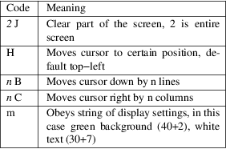

libuv − libuv documentation
libuv is a multi−platform support library with a focus on asynchronous I/O. It was primarily developed for use by Node.js, but it's also used by Luvit, Julia, uvloop, and others.
NOTE:
In case you find errors in this documentation you can help by sending pull requests!
|
• |
Full−featured event loop backed by epoll, kqueue, IOCP, event ports. | ||
|
• |
Asynchronous TCP and UDP sockets | ||
|
• |
Asynchronous DNS resolution | ||
|
• |
Asynchronous file and file system operations | ||
|
• |
File system events | ||
|
• |
ANSI escape code controlled TTY | ||
|
• |
IPC with socket sharing, using Unix domain sockets or named pipes (Windows) | ||
|
• |
Child processes | ||
|
• |
Thread pool | ||
|
• |
Signal handling | ||
|
• |
High resolution clock | ||
|
• |
Threading and synchronization primitives |
Design
overview
libuv is cross−platform support library which was
originally written for Node.js. It's designed around
the event−driven asynchronous I/O model.
The library provides much more than a simple abstraction over different I/O polling mechanisms: 'handles' and 'streams' provide a high level abstraction for sockets and other entities; cross−platform file I/O and threading functionality is also provided, amongst other things.
Here is a diagram illustrating the different parts that compose libuv and what subsystem they relate to: [image]
Handles and
requests
libuv provides users with 2 abstractions to work with, in
combination with the event loop: handles and requests.
Handles represent long−lived objects capable of performing certain operations while active. Some examples:
|
• |
A prepare handle gets its callback called once every loop iteration when active. | ||
|
• |
A TCP server handle that gets its connection callback called every time there is a new connection. |
Requests represent (typically) short−lived operations. These operations can be performed over a handle: write requests are used to write data on a handle; or standalone: getaddrinfo requests don't need a handle they run directly on the loop.
The I/O
loop
The I/O (or event) loop is the central part of libuv. It
establishes the content for all I/O operations, and it's
meant to be tied to a single thread. One can run multiple
event loops as long as each runs in a different thread. The
libuv event loop (or any other API involving the loop or
handles, for that matter) is not thread−safe
except where stated otherwise.
The event loop follows the rather usual single threaded asynchronous I/O approach: all (network) I/O is performed on non−blocking sockets which are polled using the best mechanism available on the given platform: epoll on Linux, kqueue on OSX and other BSDs, event ports on SunOS and IOCP on Windows. As part of a loop iteration the loop will block waiting for I/O activity on sockets which have been added to the poller and callbacks will be fired indicating socket conditions (readable, writable hangup) so handles can read, write or perform the desired I/O operation.
In order to better understand how the event loop operates, the following diagram illustrates all stages of a loop iteration: [image]
|
1. |
The loop concept of 'now' is updated. The event loop caches the current time at the start of the event loop tick in order to reduce the number of time−related system calls. | ||
|
2. |
If the loop is alive an iteration is started, otherwise the loop will exit immediately. So, when is a loop considered to be alive? If a loop has active and ref'd handles, active requests or closing handles it's considered to be alive. | ||
|
3. |
Due timers are run. All active timers scheduled for a time before the loop's concept of now get their callbacks called. | ||
|
4. |
Pending callbacks are called. All I/O callbacks are called right after polling for I/O, for the most part. There are cases, however, in which calling such a callback is deferred for the next loop iteration. If the previous iteration deferred any I/O callback it will be run at this point. | ||
|
5. |
Idle handle callbacks are called. Despite the unfortunate name, idle handles are run on every loop iteration, if they are active. | ||
|
6. |
Prepare handle callbacks are called. Prepare handles get their callbacks called right before the loop will block for I/O. | ||
|
7. |
Poll timeout is calculated. Before blocking for I/O the loop calculates for how long it should block. These are the rules when calculating the timeout: |
•
|
If the loop was run with the UV_RUN_NOWAIT flag, the timeout is 0. | |||
|
• |
If the loop is going to be stopped (uv_stop() was called), the timeout is 0. | ||
|
• |
If there are no active handles or requests, the timeout is 0. | ||
|
• |
If there are any idle handles active, the timeout is 0. | ||
|
• |
If there are any handles pending to be closed, the timeout is 0. | ||
|
• |
If none of the above cases matches, the timeout of the closest timer is taken, or if there are no active timers, infinity. | ||
|
8. |
The loop blocks for I/O. At this point the loop will block for I/O for the duration calculated in the previous step. All I/O related handles that were monitoring a given file descriptor for a read or write operation get their callbacks called at this point.
|
9. |
Check handle callbacks are called. Check handles get their callbacks called right after the loop has blocked for I/O. Check handles are essentially the counterpart of prepare handles. | ||
|
10. |
Close callbacks are called. If a handle was closed by calling uv_close() it will get the close callback called. | ||
|
11. |
Special case in case the loop was run with UV_RUN_ONCE, as it implies forward progress. It's possible that no I/O callbacks were fired after blocking for I/O, but some time has passed so there might be timers which are due, those timers get their callbacks called. | ||
|
12. |
Iteration ends. If the loop was run with UV_RUN_NOWAIT or UV_RUN_ONCE modes the iteration ends and uv_run() will return. If the loop was run with UV_RUN_DEFAULT it will continue from the start if it's still alive, otherwise it will also end. |
IMPORTANT:
libuv uses a thread pool to make asynchronous file I/O operations possible, but network I/O is always performed in a single thread, each loop's thread.
NOTE:
While the polling mechanism is different, libuv makes the execution model consistent across Unix systems and Windows.
File I/O
Unlike network I/O, there are no platform−specific
file I/O primitives libuv could rely on, so the current
approach is to run blocking file I/O operations in a thread
pool.
For a thorough explanation of the cross−platform file I/O landscape, check out this post.
libuv currently uses a global thread pool on which all loops can queue work. 3 types of operations are currently run on this pool:
|
• |
File system operations |
|||
|
• |
DNS functions (getaddrinfo and getnameinfo) |
|||
|
• |
User specified code via uv_queue_work() |
WARNING:
See the Thread pool work scheduling section for more details, but keep in mind the thread pool size is quite limited.
API
documentation
Error handling
In libuv errors are negative numbered constants. As a rule
of thumb, whenever there is a status parameter, or an API
functions returns an integer, a negative number will imply
an error.
When a function which takes a callback returns an error, the callback will never be called.
NOTE:
Implementation detail: on Unix error codes are the negated errno (or −errno), while on Windows they are defined by libuv to arbitrary negative numbers.
Error
constants
UV_E2BIG
argument list too long
UV_EACCES
permission denied
UV_EADDRINUSE
address already in use
UV_EADDRNOTAVAIL
address not available
UV_EAFNOSUPPORT
address family not supported
UV_EAGAIN
resource temporarily unavailable
UV_EAI_ADDRFAMILY
address family not supported
UV_EAI_AGAIN
temporary failure
UV_EAI_BADFLAGS
bad ai_flags value
UV_EAI_BADHINTS
invalid value for hints
UV_EAI_CANCELED
request canceled
UV_EAI_FAIL
permanent failure
UV_EAI_FAMILY
ai_family not supported
UV_EAI_MEMORY
out of memory
UV_EAI_NODATA
no address
UV_EAI_NONAME
unknown node or service
UV_EAI_OVERFLOW
argument buffer overflow
UV_EAI_PROTOCOL
resolved protocol is unknown
UV_EAI_SERVICE
service not available for socket type
UV_EAI_SOCKTYPE
socket type not supported
UV_EALREADY
connection already in progress
UV_EBADF
bad file descriptor
UV_EBUSY
resource busy or locked
UV_ECANCELED
operation canceled
UV_ECHARSET
invalid Unicode character
UV_ECONNABORTED
software caused connection abort
UV_ECONNREFUSED
connection refused
UV_ECONNRESET
connection reset by peer
UV_EDESTADDRREQ
destination address required
UV_EEXIST
file already exists
UV_EFAULT
bad address in system call argument
UV_EFBIG
file too large
UV_EHOSTUNREACH
host is unreachable
UV_EINTR
interrupted system call
UV_EINVAL
invalid argument
|
UV_EIO |
i/o error |
UV_EISCONN
socket is already connected
UV_EISDIR
illegal operation on a directory
UV_ELOOP
too many symbolic links encountered
UV_EMFILE
too many open files
UV_EMSGSIZE
message too long
UV_ENAMETOOLONG
name too long
UV_ENETDOWN
network is down
UV_ENETUNREACH
network is unreachable
UV_ENFILE
file table overflow
UV_ENOBUFS
no buffer space available
UV_ENODEV
no such device
UV_ENOENT
no such file or directory
UV_ENOMEM
not enough memory
UV_ENONET
machine is not on the network
UV_ENOPROTOOPT
protocol not available
UV_ENOSPC
no space left on device
UV_ENOSYS
function not implemented
UV_ENOTCONN
socket is not connected
UV_ENOTDIR
not a directory
UV_ENOTEMPTY
directory not empty
UV_ENOTSOCK
socket operation on non−socket
UV_ENOTSUP
operation not supported on socket
UV_EOVERFLOW
value too large for defined data type
UV_EPERM
operation not permitted
UV_EPIPE
broken pipe
UV_EPROTO
protocol error
UV_EPROTONOSUPPORT
protocol not supported
UV_EPROTOTYPE
protocol wrong type for socket
UV_ERANGE
result too large
UV_EROFS
read−only file system
UV_ESHUTDOWN
cannot send after transport endpoint shutdown
UV_ESPIPE
invalid seek
UV_ESRCH
no such process
UV_ETIMEDOUT
connection timed out
UV_ETXTBSY
text file is busy
UV_EXDEV
cross−device link not permitted
UV_UNKNOWN
unknown error
|
UV_EOF |
end of file |
UV_ENXIO
no such device or address
UV_EMLINK
too many links
UV_ENOTTY
inappropriate ioctl for device
UV_EFTYPE
inappropriate file type or format
UV_EILSEQ
illegal byte sequence
UV_ESOCKTNOSUPPORT
socket type not supported
API
UV_ERRNO_MAP(iter_macro)
Macro that expands to a series of invocations of iter_macro for each of the error constants above. iter_macro is invoked with two arguments: the name of the error constant without the UV_ prefix, and the error message string literal.
const char *uv_strerror(int err)
Returns the error message for the given error code. Leaks a few bytes of memory when you call it with an unknown error code.
char *uv_strerror_r(int err, char *buf, size_t buflen)
Returns the error message for the given error code. The zero−terminated message is stored in the user−supplied buffer buf of at most buflen bytes.
New in version 1.22.0.
const char *uv_err_name(int err)
Returns the error name for the given error code. Leaks a few bytes of memory when you call it with an unknown error code.
char *uv_err_name_r(int err, char *buf, size_t buflen)
Returns the error name for the given error code. The zero−terminated name is stored in the user−supplied buffer buf of at most buflen bytes.
New in version 1.22.0.
int uv_translate_sys_error(int sys_errno)
Returns the libuv error code equivalent to the given platform dependent error code: POSIX error codes on Unix (the ones stored in errno), and Win32 error codes on Windows (those returned by GetLastError() or WSAGetLastError()).
If sys_errno is already a libuv error, it is simply returned.
Changed in version 1.10.0: function declared public.
Version−checking
macros and functions
Starting with version 1.0.0 libuv follows the semantic
versioning scheme. This means that new APIs can be
introduced throughout the lifetime of a major release. In
this section you'll find all macros and functions that will
allow you to write or compile code conditionally, in order
to work with multiple libuv versions.
Macros
UV_VERSION_MAJOR
libuv version's major number.
UV_VERSION_MINOR
libuv version's minor number.
UV_VERSION_PATCH
libuv version's patch number.
UV_VERSION_IS_RELEASE
Set to 1 to indicate a release version of libuv, 0 for a development snapshot.
UV_VERSION_SUFFIX
libuv version suffix. Certain development releases such as Release Candidates might have a suffix such as "rc".
UV_VERSION_HEX
Returns the libuv version packed into a single integer. 8 bits are used for each component, with the patch number stored in the 8 least significant bits. E.g. for libuv 1.2.3 this would be 0x010203.
New in version 1.7.0.
Functions
unsigned int uv_version(void)
Returns UV_VERSION_HEX.
const char *uv_version_string(void)
Returns the libuv version number as a string. For non−release versions the version suffix is included.
uv_loop_t
−−− Event loop
The event loop is the central part of libuv's functionality.
It takes care of polling for i/o and scheduling callbacks to
be run based on different sources of events.
Data types
type uv_loop_t
Loop data type.
enum uv_run_mode
Mode used to run the loop with uv_run().
typedef enum {
UV_RUN_DEFAULT = 0,
UV_RUN_ONCE,
UV_RUN_NOWAIT
} uv_run_mode;
typedef void (*uv_walk_cb)(uv_handle_t *handle, void *arg)
Type definition for callback passed to uv_walk().
Public
members
void *uv_loop_t.data
Space for user−defined arbitrary data. libuv does not use and does not touch this field.
API
int uv_loop_init(uv_loop_t *loop)
Initializes the given uv_loop_t structure.
int uv_loop_configure(uv_loop_t *loop, uv_loop_option option, ...)
New in version 1.0.2.
Set additional loop options. You should normally call this before the first call to uv_run() unless mentioned otherwise.
Returns 0 on success or a UV_E* error code on failure. Be prepared to handle UV_ENOSYS; it means the loop option is not supported by the platform.
Supported options:
|
• |
UV_LOOP_BLOCK_SIGNAL: Block a signal when polling for new events. The second argument to uv_loop_configure() is the signal number. |
This operation is currently only implemented for SIGPROF signals, to suppress unnecessary wakeups when using a sampling profiler. Requesting other signals will fail with UV_EINVAL.
|
• |
UV_METRICS_IDLE_TIME: Accumulate the amount of idle time the event loop spends in the event provider. |
This option is necessary to use uv_metrics_idle_time().
Changed in version 1.39.0: added the UV_METRICS_IDLE_TIME option.
int uv_loop_close(uv_loop_t *loop)
Releases all internal loop resources. Call this function only when the loop has finished executing and all open handles and requests have been closed, or it will return UV_EBUSY. After this function returns, the user can free the memory allocated for the loop.
uv_loop_t *uv_default_loop(void)
Returns the initialized default loop. It may return NULL in case of allocation failure.
This function is just a convenient way for having a global loop throughout an application, the default loop is in no way different than the ones initialized with uv_loop_init(). As such, the default loop can (and should) be closed with uv_loop_close() so the resources associated with it are freed.
WARNING:
This function is not thread safe.
int uv_run(uv_loop_t *loop, uv_run_mode mode)
This function runs the event loop. It will act differently depending on the specified mode:
|
• |
UV_RUN_DEFAULT: Runs the event loop until there are no more active and referenced handles or requests. Returns non−zero if uv_stop() was called and there are still active handles or requests. Returns zero in all other cases. | ||
|
• |
UV_RUN_ONCE: Poll for i/o once. Note that this function blocks if there are no pending callbacks. Returns zero when done (no active handles or requests left), or non−zero if more callbacks are expected (meaning you should run the event loop again sometime in the future). | ||
|
• |
UV_RUN_NOWAIT: Poll for i/o once but don't block if there are no pending callbacks. Returns zero if done (no active handles or requests left), or non−zero if more callbacks are expected (meaning you should run the event loop again sometime in the future). |
uv_run() is not reentrant. It must not be called from a callback.
int uv_loop_alive(const uv_loop_t *loop)
Returns non−zero if there are referenced active handles, active requests or closing handles in the loop.
void uv_stop(uv_loop_t *loop)
Stop the event loop, causing uv_run() to end as soon as possible. This will happen not sooner than the next loop iteration. If this function was called before blocking for i/o, the loop won't block for i/o on this iteration.
size_t uv_loop_size(void)
Returns the size of the uv_loop_t structure. Useful for FFI binding writers who don't want to know the structure layout.
int uv_backend_fd(const uv_loop_t *loop)
Get backend file descriptor. Only kqueue, epoll and event ports are supported.
This can be used in conjunction with uv_run(loop, UV_RUN_NOWAIT) to poll in one thread and run the event loop's callbacks in another see test/test−embed.c for an example.
NOTE:
Embedding a kqueue fd in another kqueue pollset doesn't work on all platforms. It's not an error to add the fd but it never generates events.
int uv_backend_timeout(const uv_loop_t *loop)
Get the poll timeout. The return value is in milliseconds, or −1 for no timeout.
uint64_t uv_now(const uv_loop_t *loop)
Return the current timestamp in milliseconds. The timestamp is cached at the start of the event loop tick, see uv_update_time() for details and rationale.
The timestamp increases monotonically from some arbitrary point in time. Don't make assumptions about the starting point, you will only get disappointed.
NOTE:
Use uv_hrtime() if you need sub−millisecond granularity.
void uv_update_time(uv_loop_t *loop)
Update the event loop's concept of "now". Libuv caches the current time at the start of the event loop tick in order to reduce the number of time−related system calls.
You won't normally need to call this function unless you have callbacks that block the event loop for longer periods of time, where "longer" is somewhat subjective but probably on the order of a millisecond or more.
void uv_walk(uv_loop_t *loop, uv_walk_cb walk_cb, void *arg)
Walk the list of handles: walk_cb will be executed with the given arg.
int uv_loop_fork(uv_loop_t *loop)
New in version 1.12.0.
Reinitialize any kernel state necessary in the child process after a fork(2) system call.
Previously started watchers will continue to be started in the child process.
It is necessary to explicitly call this function on every event loop created in the parent process that you plan to continue to use in the child, including the default loop (even if you don't continue to use it in the parent). This function must be called before calling uv_run() or any other API function using the loop in the child. Failure to do so will result in undefined behaviour, possibly including duplicate events delivered to both parent and child or aborting the child process.
When possible, it is preferred to create a new loop in the child process instead of reusing a loop created in the parent. New loops created in the child process after the fork should not use this function.
This function is not implemented on Windows, where it returns UV_ENOSYS.
CAUTION:
This function is experimental. It may contain bugs, and is subject to change or removal. API and ABI stability is not guaranteed.
NOTE:
On Mac OS X, if directory FS event handles were in use in the parent process for any event loop, the child process will no longer be able to use the most efficient FSEvent implementation. Instead, uses of directory FS event handles in the child will fall back to the same implementation used for files and on other kqueue−based systems.
CAUTION:
On AIX and SunOS, FS event handles that were already started in the parent process at the time of forking will not deliver events in the child process; they must be closed and restarted. On all other platforms, they will continue to work normally without any further intervention.
CAUTION:
Any previous value returned from uv_backend_fd() is now invalid. That function must be called again to determine the correct backend file descriptor.
void *uv_loop_get_data(const uv_loop_t *loop)
Returns loop−>data.
New in version 1.19.0.
void *uv_loop_set_data(uv_loop_t *loop, void *data)
Sets loop−>data to data.
New in version 1.19.0.
uv_handle_t
−−− Base handle
uv_handle_t is the base type for all libuv handle
types.
Structures are aligned so that any libuv handle can be cast to uv_handle_t. All API functions defined here work with any handle type.
Libuv handles are not movable. Pointers to handle structures passed to functions must remain valid for the duration of the requested operation. Take care when using stack allocated handles.
Data types
type uv_handle_t
The base libuv handle type.
enum uv_handle_type
The kind of the libuv handle.
typedef enum {
UV_UNKNOWN_HANDLE = 0,
UV_ASYNC,
UV_CHECK,
UV_FS_EVENT,
UV_FS_POLL,
UV_HANDLE,
UV_IDLE,
UV_NAMED_PIPE,
UV_POLL,
UV_PREPARE,
UV_PROCESS,
UV_STREAM,
UV_TCP,
UV_TIMER,
UV_TTY,
UV_UDP,
UV_SIGNAL,
UV_FILE,
UV_HANDLE_TYPE_MAX
} uv_handle_type;
type uv_any_handle
Union of all handle types.
typedef void
(*uv_alloc_cb)(uv_handle_t *handle, size_t
suggested_size,
uv_buf_t *buf)
Type definition for callback passed to uv_read_start() and uv_udp_recv_start(). The user must allocate memory and fill the supplied uv_buf_t structure. If NULL is assigned as the buffer's base or 0 as its length, a UV_ENOBUFS error will be triggered in the uv_udp_recv_cb or the uv_read_cb callback.
Each buffer is used only once and the user is responsible for freeing it in the uv_udp_recv_cb or the uv_read_cb callback.
A suggested size (65536 at the moment in most cases) is provided, but it's just an indication, not related in any way to the pending data to be read. The user is free to allocate the amount of memory they decide.
As an example, applications with custom allocation schemes such as using freelists, allocation pools or slab based allocators may decide to use a different size which matches the memory chunks they already have.
Example:
static void my_alloc_cb(uv_handle_t* handle, size_t suggested_size, uv_buf_t* buf) {
buf−>base = malloc(suggested_size);
buf−>len = suggested_size;
}
typedef void (*uv_close_cb)(uv_handle_t *handle)
Type definition for callback passed to uv_close().
Public
members
uv_loop_t *uv_handle_t.loop
Pointer to the uv_loop_t the handle is running on. Readonly.
uv_handle_type uv_handle_t.type
The uv_handle_type, indicating the type of the underlying handle. Readonly.
void *uv_handle_t.data
Space for user−defined arbitrary data. libuv does not use this field.
API
UV_HANDLE_TYPE_MAP(iter_macro)
Macro that expands to a series of invocations of iter_macro for each of the handle types. iter_macro is invoked with two arguments: the name of the uv_handle_type element without the UV_ prefix, and the name of the corresponding structure type without the uv_ prefix and _t suffix.
int uv_is_active(const uv_handle_t *handle)
Returns non−zero if the handle is active, zero if it's inactive. What "active" means depends on the type of handle:
|
• |
A uv_async_t handle is always active and cannot be deactivated, except by closing it with uv_close(). | ||
|
• |
A uv_pipe_t, uv_tcp_t, uv_udp_t, etc. handle − basically any handle that deals with i/o − is active when it is doing something that involves i/o, like reading, writing, connecting, accepting new connections, etc. | ||
|
• |
A uv_check_t, uv_idle_t, uv_timer_t, etc. handle is active when it has been started with a call to uv_check_start(), uv_idle_start(), etc. |
Rule of thumb: if a handle of type uv_foo_t has a uv_foo_start() function, then it's active from the moment that function is called. Likewise, uv_foo_stop() deactivates the handle again.
int uv_is_closing(const uv_handle_t *handle)
Returns non−zero if the handle is closing or closed, zero otherwise.
NOTE:
This function should only be used between the initialization of the handle and the arrival of the close callback.
void uv_close(uv_handle_t *handle, uv_close_cb close_cb)
Request handle to be closed. close_cb will be called asynchronously after this call. This MUST be called on each handle before memory is released. Moreover, the memory can only be released in close_cb or after it has returned.
Handles that wrap file descriptors are closed immediately but close_cb will still be deferred to the next iteration of the event loop. It gives you a chance to free up any resources associated with the handle.
In−progress requests, like uv_connect_t or uv_write_t, are cancelled and have their callbacks called asynchronously with status=UV_ECANCELED.
void uv_ref(uv_handle_t *handle)
Reference the given handle. References are idempotent, that is, if a handle is already referenced calling this function again will have no effect.
See Reference counting.
void uv_unref(uv_handle_t *handle)
Un−reference the given handle. References are idempotent, that is, if a handle is not referenced calling this function again will have no effect.
See Reference counting.
int uv_has_ref(const uv_handle_t *handle)
Returns non−zero if the handle referenced, zero otherwise.
See Reference counting.
size_t uv_handle_size(uv_handle_type type)
Returns the size of the given handle type. Useful for FFI binding writers who don't want to know the structure layout.
Miscellaneous
API functions
The following API functions take a uv_handle_t
argument but they work just for some handle types.
int uv_send_buffer_size(uv_handle_t *handle,
int *value)
Gets or sets the size of the send buffer that the operating system uses for the socket.
If *value == 0, then it will set *value to the current send buffer size. If *value > 0 then it will use *value to set the new send buffer size.
On success, zero is returned. On error, a negative result is returned.
This function works for TCP, pipe and UDP handles on Unix and for TCP and UDP handles on Windows.
NOTE:
Linux will set double the size and return double the size of the original set value.
int uv_recv_buffer_size(uv_handle_t *handle, int *value)
Gets or sets the size of the receive buffer that the operating system uses for the socket.
If *value == 0, then it will set *value to the current receive buffer size. If *value > 0 then it will use *value to set the new receive buffer size.
On success, zero is returned. On error, a negative result is returned.
This function works for TCP, pipe and UDP handles on Unix and for TCP and UDP handles on Windows.
NOTE:
Linux will set double the size and return double the size of the original set value.
int uv_fileno(const uv_handle_t *handle, uv_os_fd_t *fd)
Gets the platform dependent file descriptor equivalent.
The following handles are supported: TCP, pipes, TTY, UDP and poll. Passing any other handle type will fail with UV_EINVAL.
If a handle doesn't have an attached file descriptor yet or the handle itself has been closed, this function will return UV_EBADF.
WARNING:
Be very careful when using this function. libuv assumes it's in control of the file descriptor so any change to it may lead to malfunction.
uv_loop_t *uv_handle_get_loop(const uv_handle_t *handle)
Returns handle−>loop.
New in version 1.19.0.
void *uv_handle_get_data(const uv_handle_t *handle)
Returns handle−>data.
New in version 1.19.0.
void *uv_handle_set_data(uv_handle_t *handle, void *data)
Sets handle−>data to data.
New in version 1.19.0.
uv_handle_type uv_handle_get_type(const uv_handle_t *handle)
Returns handle−>type.
New in version 1.19.0.
const char *uv_handle_type_name(uv_handle_type type)
Returns the name for the equivalent struct for a given handle type, e.g. "pipe" (as in uv_pipe_t) for UV_NAMED_PIPE.
If no such handle type exists, this returns NULL.
New in version 1.19.0.
Reference
counting
The libuv event loop (if run in the default mode) will run
until there are no active and referenced handles
left. The user can force the loop to exit early by
unreferencing handles which are active, for example by
calling uv_unref() after calling
uv_timer_start().
A handle can be referenced or unreferenced, the refcounting scheme doesn't use a counter, so both operations are idempotent.
All handles are referenced when active by default, see uv_is_active() for a more detailed explanation on what being active involves.
uv_req_t
−−− Base request
uv_req_t is the base type for all libuv request
types.
Structures are aligned so that any libuv request can be cast to uv_req_t. All API functions defined here work with any request type.
Data types
type uv_req_t
The base libuv request structure.
type uv_any_req
Union of all request types.
Public
members
void *uv_req_t.data
Space for user−defined arbitrary data. libuv does not use this field.
uv_req_type uv_req_t.type
Indicated the type of request. Readonly.
typedef enum {
UV_UNKNOWN_REQ = 0,
UV_REQ,
UV_CONNECT,
UV_WRITE,
UV_SHUTDOWN,
UV_UDP_SEND,
UV_FS,
UV_WORK,
UV_GETADDRINFO,
UV_GETNAMEINFO,
UV_REQ_TYPE_MAX,
} uv_req_type;
API
UV_REQ_TYPE_MAP(iter_macro)
Macro that expands to a series of invocations of iter_macro for each of the request types. iter_macro is invoked with two arguments: the name of the uv_req_type element without the UV_ prefix, and the name of the corresponding structure type without the uv_ prefix and _t suffix.
int uv_cancel(uv_req_t *req)
Cancel a pending request. Fails if the request is executing or has finished executing.
Returns 0 on success, or an error code < 0 on failure.
Only cancellation of uv_fs_t, uv_getaddrinfo_t, uv_getnameinfo_t, uv_random_t and uv_work_t requests is currently supported.
Cancelled requests have their callbacks invoked some time in the future. It's not safe to free the memory associated with the request until the callback is called.
Here is how cancellation is reported to the callback:
|
• |
A uv_fs_t request has its req−>result field set to UV_ECANCELED. | ||
|
• |
A uv_work_t, uv_getaddrinfo_t, uv_getnameinfo_t or uv_random_t request has its callback invoked with status == UV_ECANCELED. |
size_t uv_req_size(uv_req_type type)
Returns the size of the given request type. Useful for FFI binding writers who don't want to know the structure layout.
void *uv_req_get_data(const uv_req_t *req)
Returns req−>data.
New in version 1.19.0.
void *uv_req_set_data(uv_req_t *req, void *data)
Sets req−>data to data.
New in version 1.19.0.
uv_req_type uv_req_get_type(const uv_req_t *req)
Returns req−>type.
New in version 1.19.0.
const char *uv_req_type_name(uv_req_type type)
Returns the name for the equivalent struct for a given request type, e.g. "connect" (as in uv_connect_t) for UV_CONNECT.
If no such request type exists, this returns NULL.
New in version 1.19.0.
uv_timer_t
−−− Timer handle
Timer handles are used to schedule callbacks to be called in
the future.
Data types
type uv_timer_t
Timer handle type.
typedef void (*uv_timer_cb)(uv_timer_t *handle)
Type definition for callback passed to uv_timer_start().
Public
members
N/A
SEE ALSO:
The uv_handle_t members also apply.
API
int uv_timer_init(uv_loop_t *loop,
uv_timer_t *handle)
Initialize the handle.
int
uv_timer_start(uv_timer_t *handle,
uv_timer_cb cb, uint64_t
timeout, uint64_t repeat)
Start the timer. timeout and repeat are in milliseconds.
If timeout is zero, the callback fires on the next event loop iteration. If repeat is non−zero, the callback fires first after timeout milliseconds and then repeatedly after repeat milliseconds.
NOTE:
Does not update the event loop's concept of "now". See uv_update_time() for more information.
If the timer is already active, it is simply updated.
int uv_timer_stop(uv_timer_t *handle)
Stop the timer, the callback will not be called anymore.
int uv_timer_again(uv_timer_t *handle)
Stop the timer, and if it is repeating restart it using the repeat value as the timeout. If the timer has never been started before it returns UV_EINVAL.
void uv_timer_set_repeat(uv_timer_t *handle, uint64_t repeat)
Set the repeat interval value in milliseconds. The timer will be scheduled to run on the given interval, regardless of the callback execution duration, and will follow normal timer semantics in the case of a time−slice overrun.
For example, if a 50ms repeating timer first runs for 17ms, it will be scheduled to run again 33ms later. If other tasks consume more than the 33ms following the first timer callback, then the callback will run as soon as possible.
NOTE:
If the repeat value is set from a timer callback it does not immediately take effect. If the timer was non−repeating before, it will have been stopped. If it was repeating, then the old repeat value will have been used to schedule the next timeout.
uint64_t uv_timer_get_repeat(const uv_timer_t *handle)
Get the timer repeat value.
uint64_t uv_timer_get_due_in(const uv_timer_t *handle)
Get the timer due value or 0 if it has expired. The time is relative to uv_now().
New in version 1.40.0.
SEE ALSO:
The uv_handle_t API functions also apply.
uv_prepare_t
−−− Prepare handle
Prepare handles will run the given callback once per loop
iteration, right before polling for i/o.
Data types
type uv_prepare_t
Prepare handle type.
typedef void (*uv_prepare_cb)(uv_prepare_t *handle)
Type definition for callback passed to uv_prepare_start().
Public
members
N/A
SEE ALSO:
The uv_handle_t members also apply.
API
int uv_prepare_init(uv_loop_t *loop,
uv_prepare_t *prepare)
Initialize the handle. This
function always succeeds.
Returns
0
int uv_prepare_start(uv_prepare_t *prepare, uv_prepare_cb cb)
Start the handle with the given
callback. This function always succeeds, except when
cb is NULL.
Returns
0 on success, or UV_EINVAL when cb == NULL.
int uv_prepare_stop(uv_prepare_t *prepare)
Stop the handle, the callback
will no longer be called. This function always succeeds.
Returns
0
SEE ALSO:
The uv_handle_t API functions also apply.
uv_check_t
−−− Check handle
Check handles will run the given callback once per loop
iteration, right after polling for i/o.
Data types
type uv_check_t
Check handle type.
typedef void (*uv_check_cb)(uv_check_t *handle)
Type definition for callback passed to uv_check_start().
Public
members
N/A
SEE ALSO:
The uv_handle_t members also apply.
API
int uv_check_init(uv_loop_t *loop,
uv_check_t *check)
Initialize the handle. This
function always succeeds.
Returns
0
int uv_check_start(uv_check_t *check, uv_check_cb cb)
Start the handle with the given
callback. This function always succeeds, except when
cb is NULL.
Returns
0 on success, or UV_EINVAL when cb == NULL.
int uv_check_stop(uv_check_t *check)
Stop the handle, the callback
will no longer be called. This function always succeeds.
Returns
0
SEE ALSO:
The uv_handle_t API functions also apply.
uv_idle_t
−−− Idle handle
Idle handles will run the given callback once per loop
iteration, right before the uv_prepare_t handles.
NOTE:
The notable difference with prepare handles is that when there are active idle handles, the loop will perform a zero timeout poll instead of blocking for i/o.
WARNING:
Despite the name, idle handles will get their callbacks called on every loop iteration, not when the loop is actually "idle".
Data types
type uv_idle_t
Idle handle type.
typedef void (*uv_idle_cb)(uv_idle_t *handle)
Type definition for callback passed to uv_idle_start().
Public
members
N/A
SEE ALSO:
The uv_handle_t members also apply.
API
int uv_idle_init(uv_loop_t *loop,
uv_idle_t *idle)
Initialize the handle. This
function always succeeds.
Returns
0
int uv_idle_start(uv_idle_t *idle, uv_idle_cb cb)
Start the handle with the given
callback. This function always succeeds, except when
cb is NULL.
Returns
0 on success, or UV_EINVAL when cb == NULL.
int uv_idle_stop(uv_idle_t *idle)
Stop the handle, the callback
will no longer be called. This function always succeeds.
Returns
0
SEE ALSO:
The uv_handle_t API functions also apply.
uv_async_t
−−− Async handle
Async handles allow the user to "wakeup" the event
loop and get a callback called from another thread.
Data types
type uv_async_t
Async handle type.
typedef void (*uv_async_cb)(uv_async_t *handle)
Type definition for callback passed to uv_async_init().
Public
members
N/A
SEE ALSO:
The uv_handle_t members also apply.
API
int uv_async_init(uv_loop_t *loop,
uv_async_t *async, uv_async_cb
async_cb)
Initialize the handle. A NULL
callback is allowed.
Returns
0 on success, or an error code < 0 on failure.
NOTE:
Unlike other handle initialization functions, it immediately starts the handle.
int uv_async_send(uv_async_t *async)
Wake up the event loop and call
the async handle's callback.
Returns
0 on success, or an error code < 0 on failure.
NOTE:
It's safe to call this function from any thread. The callback will be called on the loop thread.
NOTE:
uv_async_send() is async−signal−safe. It's safe to call this function from a signal handler.
WARNING:
libuv will coalesce calls to uv_async_send(), that is, not every call to it will yield an execution of the callback. For example: if uv_async_send() is called 5 times in a row before the callback is called, the callback will only be called once. If uv_async_send() is called again after the callback was called, it will be called again.
SEE ALSO:
The uv_handle_t API functions also apply.
uv_poll_t
−−− Poll handle
Poll handles are used to watch file descriptors for
readability, writability and disconnection similar to the
purpose of poll(2).
The purpose of poll handles is to enable integrating external libraries that rely on the event loop to signal it about the socket status changes, like c−ares or libssh2. Using uv_poll_t for any other purpose is not recommended; uv_tcp_t, uv_udp_t, etc. provide an implementation that is faster and more scalable than what can be achieved with uv_poll_t, especially on Windows.
It is possible that poll handles occasionally signal that a file descriptor is readable or writable even when it isn't. The user should therefore always be prepared to handle EAGAIN or equivalent when it attempts to read from or write to the fd.
It is not okay to have multiple active poll handles for the same socket, this can cause libuv to busyloop or otherwise malfunction.
The user should not close a file descriptor while it is being polled by an active poll handle. This can cause the handle to report an error, but it might also start polling another socket. However the fd can be safely closed immediately after a call to uv_poll_stop() or uv_close().
NOTE:
On windows only sockets can be polled with poll handles. On Unix any file descriptor that would be accepted by poll(2) can be used.
NOTE:
On AIX, watching for disconnection is not supported.
Data types
type uv_poll_t
Poll handle type.
typedef void (*uv_poll_cb)(uv_poll_t *handle, int status, int events)
Type definition for callback passed to uv_poll_start().
type uv_poll_event
Poll event types
enum uv_poll_event {
UV_READABLE = 1,
UV_WRITABLE = 2,
UV_DISCONNECT = 4,
UV_PRIORITIZED = 8
};
Public
members
N/A
SEE ALSO:
The uv_handle_t members also apply.
API
int uv_poll_init(uv_loop_t *loop,
uv_poll_t *handle, int fd)
Initialize the handle using a file descriptor.
Changed in version 1.2.2: the file descriptor is set to non−blocking mode.
int
uv_poll_init_socket(uv_loop_t *loop,
uv_poll_t *handle,
uv_os_sock_t socket)
Initialize the handle using a socket descriptor. On Unix this is identical to uv_poll_init(). On windows it takes a SOCKET handle.
Changed in version 1.2.2: the socket is set to non−blocking mode.
int uv_poll_start(uv_poll_t *handle, int events, uv_poll_cb cb)
Starts polling the file descriptor. events is a bitmask made up of UV_READABLE, UV_WRITABLE, UV_PRIORITIZED and UV_DISCONNECT. As soon as an event is detected the callback will be called with status set to 0, and the detected events set on the events field.
The UV_PRIORITIZED event is used to watch for sysfs interrupts or TCP out−of−band messages.
The UV_DISCONNECT event is optional in the sense that it may not be reported and the user is free to ignore it, but it can help optimize the shutdown path because an extra read or write call might be avoided.
If an error happens while polling, status will be < 0 and corresponds with one of the UV_E* error codes (see Error handling). The user should not close the socket while the handle is active. If the user does that anyway, the callback may be called reporting an error status, but this is not guaranteed.
NOTE:
Calling uv_poll_start() on a handle that is already active is fine. Doing so will update the events mask that is being watched for.
NOTE:
Though UV_DISCONNECT can be set, it is unsupported on AIX and as such will not be set on the events field in the callback.
NOTE:
If one of the events UV_READABLE or UV_WRITABLE are set, the callback will be called again, as long as the given fd/socket remains readable or writable accordingly. Particularly in each of the following scenarios:
|
• |
The callback has been called because the socket became readable/writable and the callback did not conduct a read/write on this socket at all. | ||
|
• |
The callback committed a read on the socket, and has not read all the available data (when UV_READABLE is set). | ||
|
• |
The callback committed a write on the socket, but it remained writable afterwards (when UV_WRITABLE is set). | ||
|
• |
The socket has already became readable/writable before calling uv_poll_start() on a poll handle associated with this socket, and since then the state of the socket did not changed. |
In all of the above listed scenarios, the socket remains readable or writable and hence the callback will be called again (depending on the events set in the bitmask). This behaviour is known as level triggering.
Changed in version 1.9.0: Added the UV_DISCONNECT event.
Changed in version 1.14.0: Added the UV_PRIORITIZED event.
int uv_poll_stop(uv_poll_t *poll)
Stop polling the file descriptor, the callback will no longer be called.
NOTE:
Calling uv_poll_stop() is effective immediately: any pending callback is also canceled, even if the socket state change notification was already pending.
SEE ALSO:
The uv_handle_t API functions also apply.
uv_signal_t
−−− Signal handle
Signal handles implement Unix style signal handling on a
per−event loop bases.
Windows
notes
Reception of some signals is emulated:
|
• |
SIGINT is normally delivered when the user presses CTRL+C. However, like on Unix, it is not generated when terminal raw mode is enabled. | ||
|
• |
SIGBREAK is delivered when the user pressed CTRL + BREAK. | ||
|
• |
SIGHUP is generated when the user closes the console window. On SIGHUP the program is given approximately 10 seconds to perform cleanup. After that Windows will unconditionally terminate it. | ||
|
• |
SIGWINCH is raised whenever libuv detects that the console has been resized. When a libuv app is running under a console emulator, or when a 32−bit libuv app is running on 64−bit system, SIGWINCH will be emulated. In such cases SIGWINCH signals may not always be delivered in a timely manner. For a writable uv_tty_t handle libuv will only detect size changes when the cursor is moved. When a readable uv_tty_t handle is used, resizing of the console buffer will be detected only if the handle is in raw mode and is being read. | ||
|
• |
Watchers for other signals can be successfully created, but these signals are never received. These signals are: SIGILL, SIGABRT, SIGFPE, SIGSEGV, SIGTERM and SIGKILL. | ||
|
• |
Calls to raise() or abort() to programmatically raise a signal are not detected by libuv; these will not trigger a signal watcher. |
Changed in version 1.15.0: SIGWINCH support on Windows was improved.
Changed in version 1.31.0: 32−bit libuv SIGWINCH support on 64−bit Windows was rolled back to old implementation.
Unix notes
|
• |
SIGKILL and SIGSTOP are impossible to catch. | ||
|
• |
Handling SIGBUS, SIGFPE, SIGILL or SIGSEGV via libuv results into undefined behavior. | ||
|
• |
SIGABRT will not be caught by libuv if generated by abort(), e.g. through assert(). | ||
|
• |
On Linux SIGRT0 and SIGRT1 (signals 32 and 33) are used by the NPTL pthreads library to manage threads. Installing watchers for those signals will lead to unpredictable behavior and is strongly discouraged. Future versions of libuv may simply reject them. |
Data types
type uv_signal_t
Signal handle type.
typedef void (*uv_signal_cb)(uv_signal_t *handle, int signum)
Type definition for callback passed to uv_signal_start().
Public
members
int uv_signal_t.signum
Signal being monitored by this handle. Readonly.
SEE ALSO:
The uv_handle_t members also apply.
API
int uv_signal_init(uv_loop_t *loop,
uv_signal_t *signal)
Initialize the handle.
int uv_signal_start(uv_signal_t *signal, uv_signal_cb cb, int signum)
Start the handle with the given callback, watching for the given signal.
int
uv_signal_start_oneshot(uv_signal_t
*signal, uv_signal_cb cb, int
signum)
New in version 1.12.0.
Same functionality as uv_signal_start() but the signal handler is reset the moment the signal is received.
int uv_signal_stop(uv_signal_t *signal)
Stop the handle, the callback will no longer be called.
SEE ALSO:
The uv_handle_t API functions also apply.
uv_process_t
−−− Process handle
Process handles will spawn a new process and allow the user
to control it and establish communication channels with it
using streams.
Data types
type uv_process_t
Process handle type.
type uv_process_options_t
Options for spawning the process (passed to uv_spawn().
typedef struct uv_process_options_s {
uv_exit_cb exit_cb;
const char* file;
char** args;
char** env;
const char* cwd;
unsigned int flags;
int stdio_count;
uv_stdio_container_t* stdio;
uv_uid_t uid;
uv_gid_t gid;
} uv_process_options_t;
typedef void
(*uv_exit_cb)(uv_process_t*, int64_t
exit_status, int
term_signal)
Type definition for callback passed in uv_process_options_t which will indicate the exit status and the signal that caused the process to terminate, if any.
type uv_process_flags
Flags to be set on the flags field of uv_process_options_t.
enum uv_process_flags {
/*
* Set the child process' user id.
*/
UV_PROCESS_SETUID = (1 << 0),
/*
* Set the child process' group id.
*/
UV_PROCESS_SETGID = (1 << 1),
/*
* Do not wrap any arguments in quotes, or perform any other escaping, when
* converting the argument list into a command line string. This option is
* only meaningful on Windows systems. On Unix it is silently ignored.
*/
UV_PROCESS_WINDOWS_VERBATIM_ARGUMENTS = (1 << 2),
/*
* Spawn the child process in a detached state − this will make it a process
* group leader, and will effectively enable the child to keep running after
* the parent exits. Note that the child process will still keep the
* parent's event loop alive unless the parent process calls uv_unref() on
* the child's process handle.
*/
UV_PROCESS_DETACHED = (1 << 3),
/*
* Hide the subprocess window that would normally be created. This option is
* only meaningful on Windows systems. On Unix it is silently ignored.
*/
UV_PROCESS_WINDOWS_HIDE = (1 << 4),
/*
* Hide the subprocess console window that would normally be created. This
* option is only meaningful on Windows systems. On Unix it is silently
* ignored.
*/
UV_PROCESS_WINDOWS_HIDE_CONSOLE = (1 << 5),
/*
* Hide the subprocess GUI window that would normally be created. This
* option is only meaningful on Windows systems. On Unix it is silently
* ignored.
*/
UV_PROCESS_WINDOWS_HIDE_GUI = (1 << 6)
};
type uv_stdio_container_t
Container for each stdio handle or fd passed to a child process.
typedef struct uv_stdio_container_s {
uv_stdio_flags flags;
union {
uv_stream_t* stream;
int fd;
} data;
} uv_stdio_container_t;
enum uv_stdio_flags
Flags specifying how a stdio should be transmitted to the child process.
typedef enum {
/*
* The following four options are mutually−exclusive, and define
* the operation to perform for the corresponding file descriptor
* in the child process:
*/
/*
* No file descriptor will be provided (or redirected to
* `/dev/null` if it is fd 0, 1 or 2).
*/
UV_IGNORE = 0x00,
/*
* Open a new pipe into `data.stream`, per the flags below. The
* `data.stream` field must point to a uv_pipe_t object that has
* been initialized with `uv_pipe_init(loop, data.stream, ipc);`,
* but not yet opened or connected.
/*
UV_CREATE_PIPE = 0x01,
/*
* The child process will be given a duplicate of the parent's
* file descriptor given by `data.fd`.
*/
UV_INHERIT_FD = 0x02,
/*
* The child process will be given a duplicate of the parent's
* file descriptor being used by the stream handle given by
* `data.stream`.
*/
UV_INHERIT_STREAM = 0x04,
/*
* When UV_CREATE_PIPE is specified, UV_READABLE_PIPE and UV_WRITABLE_PIPE
* determine the direction of flow, from the child process' perspective. Both
* flags may be specified to create a duplex data stream.
*/
UV_READABLE_PIPE = 0x10,
UV_WRITABLE_PIPE = 0x20,
/*
* When UV_CREATE_PIPE is specified, specifying UV_NONBLOCK_PIPE opens the
* handle in non−blocking mode in the child. This may cause loss of data,
* if the child is not designed to handle to encounter this mode,
* but can also be significantly more efficient.
*/
UV_NONBLOCK_PIPE = 0x40
} uv_stdio_flags;
Public
members
int uv_process_t.pid
The PID of the spawned process. It's set after calling uv_spawn().
NOTE:
The uv_handle_t members also apply.
uv_exit_cb uv_process_options_t.exit_cb
Callback called after the process exits.
const char *uv_process_options_t.file
Path pointing to the program to be executed.
char **uv_process_options_t.args
Command line arguments. args[0] should be the path to the program. On Windows this uses CreateProcess which concatenates the arguments into a string this can cause some strange errors. See the UV_PROCESS_WINDOWS_VERBATIM_ARGUMENTS flag on uv_process_flags.
char **uv_process_options_t.env
Environment for the new process. If NULL the parents environment is used.
const char *uv_process_options_t.cwd
Current working directory for the subprocess.
unsigned int uv_process_options_t.flags
Various flags that control how uv_spawn() behaves. See uv_process_flags.
int
uv_process_options_t.stdio_count
uv_stdio_container_t
*uv_process_options_t.stdio
The stdio field points to an array of uv_stdio_container_t structs that describe the file descriptors that will be made available to the child process. The convention is that stdio[0] points to stdin, fd 1 is used for stdout, and fd 2 is stderr.
NOTE:
On Windows file descriptors greater than 2 are available to the child process only if the child processes uses the MSVCRT runtime.
uv_uid_t
uv_process_options_t.uid
uv_gid_t uv_process_options_t.gid
Libuv can change the child process' user/group id. This happens only when the appropriate bits are set in the flags fields.
NOTE:
This is not supported on Windows, uv_spawn() will fail and set the error to UV_ENOTSUP.
uv_stdio_flags uv_stdio_container_t.flags
Flags specifying how the stdio container should be passed to the child.
union [anonymous] uv_stdio_container_t.data
Union containing either the stream or fd to be passed on to the child process.
API
void uv_disable_stdio_inheritance(void)
Disables inheritance for file descriptors / handles that this process inherited from its parent. The effect is that child processes spawned by this process don't accidentally inherit these handles.
It is recommended to call this function as early in your program as possible, before the inherited file descriptors can be closed or duplicated.
NOTE:
This function works on a best−effort basis: there is no guarantee that libuv can discover all file descriptors that were inherited. In general it does a better job on Windows than it does on Unix.
int
uv_spawn(uv_loop_t *loop,
uv_process_t *handle, const
uv_process_options_t *options)
Initializes the process handle and starts the process. If the process is successfully spawned, this function will return 0. Otherwise, the negative error code corresponding to the reason it couldn't spawn is returned.
Possible reasons for failing to spawn would include (but not be limited to) the file to execute not existing, not having permissions to use the setuid or setgid specified, or not having enough memory to allocate for the new process.
Changed in version 1.24.0: Added UV_PROCESS_WINDOWS_HIDE_CONSOLE and UV_PROCESS_WINDOWS_HIDE_GUI flags.
int uv_process_kill(uv_process_t *handle, int signum)
Sends the specified signal to the given process handle. Check the documentation on uv_signal_t −−− Signal handle for signal support, specially on Windows.
int uv_kill(int pid, int signum)
Sends the specified signal to the given PID. Check the documentation on uv_signal_t −−− Signal handle for signal support, specially on Windows.
uv_pid_t uv_process_get_pid(const uv_process_t *handle)
Returns handle−>pid.
New in version 1.19.0.
SEE ALSO:
The uv_handle_t API functions also apply.
uv_stream_t
−−− Stream handle
Stream handles provide an abstraction of a duplex
communication channel. uv_stream_t is an abstract
type, libuv provides 3 stream implementations in the form of
uv_tcp_t, uv_pipe_t and uv_tty_t.
Data types
type uv_stream_t
Stream handle type.
type uv_connect_t
Connect request type.
type uv_shutdown_t
Shutdown request type.
type uv_write_t
Write request type. Careful attention must be paid when reusing objects of this type. When a stream is in non−blocking mode, write requests sent with uv_write will be queued. Reusing objects at this point is undefined behaviour. It is safe to reuse the uv_write_t object only after the callback passed to uv_write is fired.
typedef void
(*uv_read_cb)(uv_stream_t *stream, ssize_t
nread, const
uv_buf_t *buf)
Callback called when data was read on a stream.
nread is > 0 if there is data available or < 0 on error. When we've reached EOF, nread will be set to UV_EOF. When nread < 0, the buf parameter might not point to a valid buffer; in that case buf.len and buf.base are both set to 0.
NOTE:
nread might be 0, which does not indicate an error or EOF. This is equivalent to EAGAIN or EWOULDBLOCK under read(2).
The callee is responsible for stopping/closing the stream when an error happens by calling uv_read_stop() or uv_close(). Trying to read from the stream again is undefined.
The callee is responsible for freeing the buffer, libuv does not reuse it. The buffer may be a null buffer (where buf−>base == NULL and buf−>len == 0) on error.
typedef void (*uv_write_cb)(uv_write_t *req, int status)
Callback called after data was written on a stream. status will be 0 in case of success, < 0 otherwise.
typedef void (*uv_connect_cb)(uv_connect_t *req, int status)
Callback called after a connection started by uv_connect() is done. status will be 0 in case of success, < 0 otherwise.
typedef void (*uv_shutdown_cb)(uv_shutdown_t *req, int status)
Callback called after a shutdown request has been completed. status will be 0 in case of success, < 0 otherwise.
typedef void (*uv_connection_cb)(uv_stream_t *server, int status)
Callback called when a stream server has received an incoming connection. The user can accept the connection by calling uv_accept(). status will be 0 in case of success, < 0 otherwise.
Public
members
size_t uv_stream_t.write_queue_size
Contains the amount of queued bytes waiting to be sent. Readonly.
uv_stream_t *uv_connect_t.handle
Pointer to the stream where this connection request is running.
uv_stream_t *uv_shutdown_t.handle
Pointer to the stream where this shutdown request is running.
uv_stream_t *uv_write_t.handle
Pointer to the stream where this write request is running.
uv_stream_t *uv_write_t.send_handle
Pointer to the stream being sent using this write request.
SEE ALSO:
The uv_handle_t members also apply.
API
int uv_shutdown(uv_shutdown_t *req,
uv_stream_t *handle, uv_shutdown_cb
cb)
Shutdown the outgoing (write) side of a duplex stream. It waits for pending write requests to complete. The handle should refer to a initialized stream. req should be an uninitialized shutdown request struct. The cb is called after shutdown is complete.
int uv_listen(uv_stream_t *stream, int backlog, uv_connection_cb cb)
Start listening for incoming connections. backlog indicates the number of connections the kernel might queue, same as listen(2). When a new incoming connection is received the uv_connection_cb callback is called.
int uv_accept(uv_stream_t *server, uv_stream_t *client)
This call is used in conjunction with uv_listen() to accept incoming connections. Call this function after receiving a uv_connection_cb to accept the connection. Before calling this function the client handle must be initialized. < 0 return value indicates an error.
When the uv_connection_cb callback is called it is guaranteed that this function will complete successfully the first time. If you attempt to use it more than once, it may fail. It is suggested to only call this function once per uv_connection_cb call.
NOTE:
server and client must be handles running on the same loop.
int
uv_read_start(uv_stream_t *stream,
uv_alloc_cb alloc_cb, uv_read_cb
read_cb)
Read data from an incoming stream. The uv_read_cb callback will be made several times until there is no more data to read or uv_read_stop() is called.
Changed in version 1.38.0: uv_read_start() now consistently returns UV_EALREADY when called twice, and UV_EINVAL when the stream is closing. With older libuv versions, it returns UV_EALREADY on Windows but not UNIX, and UV_EINVAL on UNIX but not Windows.
int uv_read_stop(uv_stream_t*)
Stop reading data from the stream. The uv_read_cb callback will no longer be called.
This function is idempotent and may be safely called on a stopped stream.
This function will always succeed; hence, checking its return value is unnecessary. A non−zero return indicates that finishing releasing resources may be pending on the next input event on that TTY on Windows, and does not indicate failure.
int
uv_write(uv_write_t *req,
uv_stream_t *handle, const uv_buf_t
bufs[], unsigned int nbufs, uv_write_cb
cb)
Write data to stream. Buffers are written in order. Example:
void cb(uv_write_t* req, int status) {
/* Logic which handles the write result */
}
uv_buf_t a[] = {
{ .base = "1", .len = 1 },
{ .base = "2", .len = 1 }
};
uv_buf_t b[] = {
{ .base = "3", .len = 1 },
{ .base = "4", .len = 1 }
};
uv_write_t req1;
uv_write_t req2;
/* writes "1234" */
uv_write(&req1, stream, a, 2, cb);
uv_write(&req2, stream, b, 2, cb);
NOTE:
The memory pointed to by the buffers must remain valid until the callback gets called. This also holds for uv_write2().
int
uv_write2(uv_write_t *req,
uv_stream_t *handle, const uv_buf_t
bufs[], unsigned int nbufs, uv_stream_t
*send_handle, uv_write_cb cb)
Extended write function for sending handles over a pipe. The pipe must be initialized with ipc == 1.
NOTE:
send_handle must be a TCP, pipe and UDP handle on Unix, or a TCP handle on Windows, which is a server or a connection (listening or connected state). Bound sockets or pipes will be assumed to be servers.
int
uv_try_write(uv_stream_t *handle, const
uv_buf_t bufs[], unsigned
int nbufs)
Same as uv_write(), but won't queue a write request if it can't be completed immediately.
Will return either:
|
• |
> 0: number of bytes written (can be less than the supplied buffer size). | ||
|
• |
< 0: negative error code (UV_EAGAIN is returned if no data can be sent immediately). |
int
uv_try_write2(uv_stream_t *handle, const
uv_buf_t bufs[], unsigned
int nbufs, uv_stream_t *send_handle)
Same as uv_try_write() and extended write function for sending handles over a pipe like c:func:uv_write2.
Try to send a handle is not supported on Windows, where it returns UV_EAGAIN.
New in version 1.42.0.
int uv_is_readable(const uv_stream_t *handle)
Returns 1 if the stream is readable, 0 otherwise.
int uv_is_writable(const uv_stream_t *handle)
Returns 1 if the stream is writable, 0 otherwise.
int uv_stream_set_blocking(uv_stream_t *handle, int blocking)
Enable or disable blocking mode for a stream.
When blocking mode is enabled all writes complete synchronously. The interface remains unchanged otherwise, e.g. completion or failure of the operation will still be reported through a callback which is made asynchronously.
WARNING:
Relying too much on this API is not recommended. It is likely to change significantly in the future.
Currently only works on Windows for uv_pipe_t handles. On UNIX platforms, all uv_stream_t handles are supported.
Also libuv currently makes no ordering guarantee when the blocking mode is changed after write requests have already been submitted. Therefore it is recommended to set the blocking mode immediately after opening or creating the stream.
Changed in version 1.4.0: UNIX implementation added.
size_t uv_stream_get_write_queue_size(const uv_stream_t *stream)
Returns stream−>write_queue_size.
New in version 1.19.0.
SEE ALSO:
The uv_handle_t API functions also apply.
uv_tcp_t
−−− TCP handle
TCP handles are used to represent both TCP streams and
servers.
uv_tcp_t is a 'subclass' of uv_stream_t.
Data types
type uv_tcp_t
TCP handle type.
Public
members
N/A
SEE ALSO:
The uv_stream_t members also apply.
API
int uv_tcp_init(uv_loop_t *loop,
uv_tcp_t *handle)
Initialize the handle. No socket is created as of yet.
int
uv_tcp_init_ex(uv_loop_t *loop,
uv_tcp_t *handle, unsigned int
flags)
Initialize the handle with the specified flags. At the moment only the lower 8 bits of the flags parameter are used as the socket domain. A socket will be created for the given domain. If the specified domain is AF_UNSPEC no socket is created, just like uv_tcp_init().
New in version 1.7.0.
int uv_tcp_open(uv_tcp_t *handle, uv_os_sock_t sock)
Open an existing file descriptor or SOCKET as a TCP handle.
Changed in version 1.2.1: the file descriptor is set to non−blocking mode.
NOTE:
The passed file descriptor or SOCKET is not checked for its type, but it's required that it represents a valid stream socket.
int uv_tcp_nodelay(uv_tcp_t *handle, int enable)
Enable TCP_NODELAY, which disables Nagle's algorithm.
int uv_tcp_keepalive(uv_tcp_t *handle, int enable, unsigned int delay)
Enable / disable TCP keep−alive. delay is the initial delay in seconds, ignored when enable is zero.
After delay has been reached, 10 successive probes, each spaced 1 second from the previous one, will still happen. If the connection is still lost at the end of this procedure, then the handle is destroyed with a UV_ETIMEDOUT error passed to the corresponding callback.
int uv_tcp_simultaneous_accepts(uv_tcp_t *handle, int enable)
Enable / disable simultaneous asynchronous accept requests that are queued by the operating system when listening for new TCP connections.
This setting is used to tune a TCP server for the desired performance. Having simultaneous accepts can significantly improve the rate of accepting connections (which is why it is enabled by default) but may lead to uneven load distribution in multi−process setups.
int
uv_tcp_bind(uv_tcp_t *handle, const struct
sockaddr *addr, unsigned
int flags)
Bind the handle to an address and port. addr should point to an initialized struct sockaddr_in or struct sockaddr_in6.
When the port is already taken, you can expect to see an UV_EADDRINUSE error from uv_listen() or uv_tcp_connect(). That is, a successful call to this function does not guarantee that the call to uv_listen() or uv_tcp_connect() will succeed as well.
flags can contain UV_TCP_IPV6ONLY, in which case dual−stack support is disabled and only IPv6 is used.
int
uv_tcp_getsockname(const uv_tcp_t *handle,
struct sockaddr *name,
int *namelen)
Get the current address to which the handle is bound. name must point to a valid and big enough chunk of memory, struct sockaddr_storage is recommended for IPv4 and IPv6 support.
int
uv_tcp_getpeername(const uv_tcp_t *handle,
struct sockaddr *name,
int *namelen)
Get the address of the peer connected to the handle. name must point to a valid and big enough chunk of memory, struct sockaddr_storage is recommended for IPv4 and IPv6 support.
int
uv_tcp_connect(uv_connect_t *req,
uv_tcp_t *handle, const struct
sockaddr *addr, uv_connect_cb cb)
Establish an IPv4 or IPv6 TCP connection. Provide an initialized TCP handle and an uninitialized uv_connect_t. addr should point to an initialized struct sockaddr_in or struct sockaddr_in6.
On Windows if the addr is initialized to point to an unspecified address (0.0.0.0 or ::) it will be changed to point to localhost. This is done to match the behavior of Linux systems.
The callback is made when the connection has been established or when a connection error happened.
Changed in version 1.19.0: added 0.0.0.0 and :: to localhost mapping
SEE ALSO:
The uv_stream_t API functions also apply.
int uv_tcp_close_reset(uv_tcp_t *handle, uv_close_cb close_cb)
Resets a TCP connection by sending a RST packet. This is accomplished by setting the SO_LINGER socket option with a linger interval of zero and then calling uv_close(). Due to some platform inconsistencies, mixing of uv_shutdown() and uv_tcp_close_reset() calls is not allowed.
New in version 1.32.0.
int uv_socketpair(int type,
int protocol, uv_os_sock_t
socket_vector[2], int flags0, int flags1)
Create a pair of connected sockets with the specified properties. The resulting handles can be passed to uv_tcp_open, used with uv_spawn, or for any other purpose.
Valid values for flags0 and flags1 are:
|
• |
UV_NONBLOCK_PIPE: Opens the specified socket handle for OVERLAPPED or FIONBIO/O_NONBLOCK I/O usage. This is recommended for handles that will be used by libuv, and not usually recommended otherwise. |
Equivalent to socketpair(2) with a domain of AF_UNIX.
New in version 1.41.0.
uv_pipe_t
−−− Pipe handle
Pipe handles provide an abstraction over streaming files on
Unix (including local domain sockets, pipes, and FIFOs) and
named pipes on Windows.
uv_pipe_t is a 'subclass' of uv_stream_t.
Data types
type uv_pipe_t
Pipe handle type.
Public
members
int uv_pipe_t.ipc
Whether this pipe is suitable for handle passing between processes. Only a connected pipe that will be passing the handles should have this flag set, not the listening pipe that uv_accept is called on.
SEE ALSO:
The uv_stream_t members also apply.
API
int uv_pipe_init(uv_loop_t *loop,
uv_pipe_t *handle, int ipc)
Initialize a pipe handle. The ipc argument is a boolean to indicate if this pipe will be used for handle passing between processes (which may change the bytes on the wire). Only a connected pipe that will be passing the handles should have this flag set, not the listening pipe that uv_accept is called on.
int uv_pipe_open(uv_pipe_t *handle, uv_file file)
Open an existing file descriptor or HANDLE as a pipe.
Changed in version 1.2.1: the file descriptor is set to non−blocking mode.
NOTE:
The passed file descriptor or HANDLE is not checked for its type, but it's required that it represents a valid pipe.
int uv_pipe_bind(uv_pipe_t *handle, const char *name)
Bind the pipe to a file path (Unix) or a name (Windows).
NOTE:
Paths on Unix get truncated to sizeof(sockaddr_un.sun_path) bytes, typically between 92 and 108 bytes.
void
uv_pipe_connect(uv_connect_t *req,
uv_pipe_t *handle, const char
*name, uv_connect_cb cb)
Connect to the Unix domain socket or the named pipe.
NOTE:
Paths on Unix get truncated to sizeof(sockaddr_un.sun_path) bytes, typically between 92 and 108 bytes.
int
uv_pipe_getsockname(const uv_pipe_t *handle,
char *buffer, size_t
*size)
Get the name of the Unix domain socket or the named pipe.
A preallocated buffer must be provided. The size parameter holds the length of the buffer and it's set to the number of bytes written to the buffer on output. If the buffer is not big enough UV_ENOBUFS will be returned and len will contain the required size.
Changed in version 1.3.0: the returned length no longer includes the terminating null byte, and the buffer is not null terminated.
int
uv_pipe_getpeername(const uv_pipe_t *handle,
char *buffer, size_t
*size)
Get the name of the Unix domain socket or the named pipe to which the handle is connected.
A preallocated buffer must be provided. The size parameter holds the length of the buffer and it's set to the number of bytes written to the buffer on output. If the buffer is not big enough UV_ENOBUFS will be returned and len will contain the required size.
New in version 1.3.0.
void uv_pipe_pending_instances(uv_pipe_t *handle, int count)
Set the number of pending pipe instance handles when the pipe server is waiting for connections.
NOTE:
This setting applies to Windows only.
int
uv_pipe_pending_count(uv_pipe_t *handle)
uv_handle_type
uv_pipe_pending_type(uv_pipe_t
*handle)
Used to receive handles over IPC pipes.
First − call uv_pipe_pending_count(), if it's > 0 then initialize a handle of the given type, returned by uv_pipe_pending_type() and call uv_accept(pipe, handle).
SEE ALSO:
The uv_stream_t API functions also apply.
int uv_pipe_chmod(uv_pipe_t *handle, int flags)
Alters pipe permissions, allowing it to be accessed from processes run by different users. Makes the pipe writable or readable by all users. Mode can be UV_WRITABLE, UV_READABLE or UV_WRITABLE | UV_READABLE. This function is blocking.
New in version 1.16.0.
int uv_pipe(uv_file fds[2], int read_flags, int write_flags)
Create a pair of connected pipe handles. Data may be written to fds[1] and read from fds[0]. The resulting handles can be passed to uv_pipe_open, used with uv_spawn, or for any other purpose.
Valid values for flags are:
|
• |
UV_NONBLOCK_PIPE: Opens the specified socket handle for OVERLAPPED or FIONBIO/O_NONBLOCK I/O usage. This is recommended for handles that will be used by libuv, and not usually recommended otherwise. |
Equivalent to pipe(2) with the O_CLOEXEC flag set.
New in version 1.41.0.
uv_tty_t
−−− TTY handle
TTY handles represent a stream for the console.
uv_tty_t is a 'subclass' of uv_stream_t.
Data types
type uv_tty_t
TTY handle type.
enum uv_tty_mode_t
New in version 1.2.0.
TTY mode type:
typedef enum {
/* Initial/normal terminal mode */
UV_TTY_MODE_NORMAL,
/* Raw input mode (On Windows, ENABLE_WINDOW_INPUT is also enabled) */
UV_TTY_MODE_RAW,
/* Binary−safe I/O mode for IPC (Unix−only) */
UV_TTY_MODE_IO
} uv_tty_mode_t;
enum uv_tty_vtermstate_t
Console virtual terminal mode type:
typedef enum {
/*
* The console supports handling of virtual terminal sequences
* (Windows10 new console, ConEmu)
*/
UV_TTY_SUPPORTED,
/* The console cannot process virtual terminal sequences. (Legacy
* console)
*/
UV_TTY_UNSUPPORTED
} uv_tty_vtermstate_t
Public
members
N/A
SEE ALSO:
The uv_stream_t members also apply.
API
int uv_tty_init(uv_loop_t *loop,
uv_tty_t *handle, uv_file fd, int
unused)
Initialize a new TTY stream with the given file descriptor. Usually the file descriptor will be:
|
• |
0 = stdin |
|||
|
• |
1 = stdout |
|||
|
• |
2 = stderr |
On Unix this function will determine the path of the fd of the terminal using ttyname_r(3), open it, and use it if the passed file descriptor refers to a TTY. This lets libuv put the tty in non−blocking mode without affecting other processes that share the tty.
This function is not thread safe on systems that don't support ioctl TIOCGPTN or TIOCPTYGNAME, for instance OpenBSD and Solaris.
NOTE:
If reopening the TTY fails, libuv falls back to blocking writes.
Changed in version 1.23.1:: the readable parameter is now unused and ignored. The correct value will now be auto−detected from the kernel.
Changed in version 1.9.0:: the path of the TTY is determined by ttyname_r(3). In earlier versions libuv opened /dev/tty instead.
Changed in version 1.5.0:: trying to initialize a TTY stream with a file descriptor that refers to a file returns UV_EINVAL on UNIX.
int uv_tty_set_mode(uv_tty_t *handle, uv_tty_mode_t mode)
Changed in version 1.2.0:: the mode is specified as a uv_tty_mode_t value.
Set the TTY using the specified terminal mode.
int uv_tty_reset_mode(void)
To be called when the program exits. Resets TTY settings to default values for the next process to take over.
This function is async signal−safe on Unix platforms but can fail with error code UV_EBUSY if you call it when execution is inside uv_tty_set_mode().
int uv_tty_get_winsize(uv_tty_t *handle, int *width, int *height)
Gets the current Window size. On success it returns 0.
SEE ALSO:
The uv_stream_t API functions also apply.
void uv_tty_set_vterm_state(uv_tty_vtermstate_t state)
Controls whether console virtual terminal sequences are processed by libuv or console. Useful in particular for enabling ConEmu support of ANSI X3.64 and Xterm 256 colors. Otherwise Windows10 consoles are usually detected automatically.
This function is only meaningful on Windows systems. On Unix it is silently ignored.
New in version 1.33.0.
int uv_tty_get_vterm_state(uv_tty_vtermstate_t *state)
Get the current state of whether console virtual terminal sequences are handled by libuv or the console.
This function is not implemented on Unix, where it returns UV_ENOTSUP.
New in version 1.33.0.
uv_udp_t
−−− UDP handle
UDP handles encapsulate UDP communication for both clients
and servers.
Data types
type uv_udp_t
UDP handle type.
type uv_udp_send_t
UDP send request type.
type uv_udp_flags
Flags used in uv_udp_bind() and uv_udp_recv_cb..
enum uv_udp_flags {
/* Disables dual stack mode. */
UV_UDP_IPV6ONLY = 1,
/*
* Indicates message was truncated because read buffer was too small. The
* remainder was discarded by the OS. Used in uv_udp_recv_cb.
*/
UV_UDP_PARTIAL = 2,
/*
* Indicates if SO_REUSEADDR will be set when binding the handle in
* uv_udp_bind.
* This sets the SO_REUSEPORT socket flag on the BSDs and OS X. On other
* Unix platforms, it sets the SO_REUSEADDR flag. What that means is that
* multiple threads or processes can bind to the same address without error
* (provided they all set the flag) but only the last one to bind will receive
* any traffic, in effect "stealing" the port from the previous listener.
*/
UV_UDP_REUSEADDR = 4,
/*
* Indicates that the message was received by recvmmsg, so the buffer provided
* must not be freed by the recv_cb callback.
*/
UV_UDP_MMSG_CHUNK = 8,
/*
* Indicates that the buffer provided has been fully utilized by recvmmsg and
* that it should now be freed by the recv_cb callback. When this flag is set
* in uv_udp_recv_cb, nread will always be 0 and addr will always be NULL.
*/
UV_UDP_MMSG_FREE = 16,
/*
* Indicates if IP_RECVERR/IPV6_RECVERR will be set when binding the handle.
* This sets IP_RECVERR for IPv4 and IPV6_RECVERR for IPv6 UDP sockets on
* Linux. This stops the Linux kernel from supressing some ICMP error messages
* and enables full ICMP error reporting for faster failover.
* This flag is no−op on platforms other than Linux.
*/
UV_UDP_LINUX_RECVERR = 32,
/*
* Indicates that recvmmsg should be used, if available.
*/
UV_UDP_RECVMMSG = 256
};
typedef void (*uv_udp_send_cb)(uv_udp_send_t *req, int status)
Type definition for callback passed to uv_udp_send(), which is called after the data was sent.
typedef void
(*uv_udp_recv_cb)(uv_udp_t *handle, ssize_t
nread, const
uv_buf_t *buf, const struct sockaddr *addr, unsigned
flags)
Type definition for callback passed to uv_udp_recv_start(), which is called when the endpoint receives data.
|
• |
handle: UDP handle | ||
|
• |
nread: Number of bytes that have been received. 0 if there is no more data to read. Note that 0 may also mean that an empty datagram was received (in this case addr is not NULL). < 0 if a transmission error was detected; if using recvmmsg(2) no more chunks will be received and the buffer can be freed safely. | ||
|
• |
buf: uv_buf_t with the received data. | ||
|
• |
addr: struct sockaddr* containing the address of the sender. Can be NULL. Valid for the duration of the callback only. | ||
|
• |
flags: One or more or'ed UV_UDP_* constants. |
The callee is responsible for freeing the buffer, libuv does not reuse it. The buffer may be a null buffer (where buf−>base == NULL and buf−>len == 0) on error.
When using recvmmsg(2), chunks will have the UV_UDP_MMSG_CHUNK flag set, those must not be freed. If no errors occur, there will be a final callback with nread set to 0, addr set to NULL and the buffer pointing at the initially allocated data with the UV_UDP_MMSG_CHUNK flag cleared and the UV_UDP_MMSG_FREE flag set. If a UDP socket error occurs, nread will be < 0. In either scenario, the callee can now safely free the provided buffer.
Changed in version 1.40.0: added the UV_UDP_MMSG_FREE flag.
NOTE:
The receive callback will be called with nread == 0 and addr == NULL when there is nothing to read, and with nread == 0 and addr != NULL when an empty UDP packet is received.
enum uv_membership
Membership type for a multicast address.
typedef enum {
UV_LEAVE_GROUP = 0,
UV_JOIN_GROUP
} uv_membership;
Public
members
size_t uv_udp_t.send_queue_size
Number of bytes queued for sending. This field strictly shows how much information is currently queued.
size_t uv_udp_t.send_queue_count
Number of send requests currently in the queue awaiting to be processed.
uv_udp_t *uv_udp_send_t.handle
UDP handle where this send request is taking place.
SEE ALSO:
The uv_handle_t members also apply.
API
int uv_udp_init(uv_loop_t *loop,
uv_udp_t *handle)
Initialize a new UDP handle. The actual socket is created lazily. Returns 0 on success.
int
uv_udp_init_ex(uv_loop_t *loop,
uv_udp_t *handle, unsigned int
flags)
Initialize the handle with the specified flags. The lower 8 bits of the flags parameter are used as the socket domain. A socket will be created for the given domain. If the specified domain is AF_UNSPEC no socket is created, just like uv_udp_init().
The remaining bits can be used to set one of these flags:
|
• |
UV_UDP_RECVMMSG: if set, and the platform supports it, recvmmsg(2) will be used. |
New in version 1.7.0.
Changed in version 1.37.0: added the UV_UDP_RECVMMSG flag.
int uv_udp_open(uv_udp_t *handle, uv_os_sock_t sock)
Opens an existing file descriptor or Windows SOCKET as a UDP handle.
Unix only: The only requirement of the sock argument is that it follows the datagram contract (works in unconnected mode, supports sendmsg()/recvmsg(), etc). In other words, other datagram−type sockets like raw sockets or netlink sockets can also be passed to this function.
Changed in version 1.2.1: the file descriptor is set to non−blocking mode.
NOTE:
The passed file descriptor or SOCKET is not checked for its type, but it's required that it represents a valid datagram socket.
int
uv_udp_bind(uv_udp_t *handle, const struct
sockaddr *addr, unsigned
int flags)
Bind the UDP handle to an IP
address and port.
Parameters
|
• |
handle −− UDP handle. Should have been initialized with uv_udp_init(). | ||
|
• |
addr −− struct sockaddr_in or struct sockaddr_in6 with the address and port to bind to. | ||
|
• |
flags −− Indicate how the socket will be bound, UV_UDP_IPV6ONLY, UV_UDP_REUSEADDR, and UV_UDP_RECVERR are supported. |
Returns
0 on success, or an error code < 0 on failure.
int uv_udp_connect(uv_udp_t *handle, const struct sockaddr *addr)
Associate the UDP handle to a
remote address and port, so every message sent by this
handle is automatically sent to that destination. Calling
this function with a NULL addr disconnects the
handle. Trying to call uv_udp_connect() on an already
connected handle will result in an UV_EISCONN error.
Trying to disconnect a handle that is not connected will
return an UV_ENOTCONN error.
Parameters
|
• |
handle −− UDP handle. Should have been initialized with uv_udp_init(). | ||
|
• |
addr −− struct sockaddr_in or struct sockaddr_in6 with the address and port to associate to. |
Returns
0 on success, or an error code < 0 on failure.
New in version 1.27.0.
int
uv_udp_getpeername(const uv_udp_t *handle,
struct sockaddr *name,
int *namelen)
Get the remote IP and port of
the UDP handle on connected UDP handles. On unconnected
handles, it returns UV_ENOTCONN.
Parameters
|
• |
handle −− UDP handle. Should have been initialized with uv_udp_init() and bound. | ||
|
• |
name −− Pointer to the structure to be filled with the address data. In order to support IPv4 and IPv6 struct sockaddr_storage should be used. | ||
|
• |
namelen −− On input it indicates the data of the name field. On output it indicates how much of it was filled. |
Returns
0 on success, or an error code < 0 on failure
New in version 1.27.0.
int
uv_udp_getsockname(const uv_udp_t *handle,
struct sockaddr *name,
int *namelen)
Get the local IP and port of
the UDP handle.
Parameters
|
• |
handle −− UDP handle. Should have been initialized with uv_udp_init() and bound. | ||
|
• |
name −− Pointer to the structure to be filled with the address data. In order to support IPv4 and IPv6 struct sockaddr_storage should be used. | ||
|
• |
namelen −− On input it indicates the data of the name field. On output it indicates how much of it was filled. |
Returns
0 on success, or an error code < 0 on failure.
int
uv_udp_set_membership(uv_udp_t *handle, const
char *multicast_addr,
const char *interface_addr, uv_membership
membership)
Set membership for a multicast
address
Parameters
|
• |
handle −− UDP handle. Should have been initialized with uv_udp_init(). | ||
|
• |
multicast_addr −− Multicast address to set membership for. | ||
|
• |
interface_addr −− Interface address. | ||
|
• |
membership −− Should be UV_JOIN_GROUP or UV_LEAVE_GROUP. |
Returns
0 on success, or an error code < 0 on failure.
int
uv_udp_set_source_membership(uv_udp_t *handle,
const char
*multicast_addr, const char *interface_addr, const char
*source_addr,
uv_membership membership)
Set membership for a
source−specific multicast group.
Parameters
|
• |
handle −− UDP handle. Should have been initialized with uv_udp_init(). | ||
|
• |
multicast_addr −− Multicast address to set membership for. | ||
|
• |
interface_addr −− Interface address. | ||
|
• |
source_addr −− Source address. | ||
|
• |
membership −− Should be UV_JOIN_GROUP or UV_LEAVE_GROUP. |
Returns
0 on success, or an error code < 0 on failure.
New in version 1.32.0.
int uv_udp_set_multicast_loop(uv_udp_t *handle, int on)
Set IP multicast loop flag.
Makes multicast packets loop back to local sockets.
Parameters
|
• |
handle −− UDP handle. Should have been initialized with uv_udp_init(). | ||
|
• |
on −− 1 for on, 0 for off. |
Returns
0 on success, or an error code < 0 on failure.
int uv_udp_set_multicast_ttl(uv_udp_t *handle, int ttl)
Set the multicast ttl.
Parameters
|
• |
handle −− UDP handle. Should have been initialized with uv_udp_init(). | ||
|
• |
ttl −− 1 through 255. |
Returns
0 on success, or an error code < 0 on failure.
int
uv_udp_set_multicast_interface(uv_udp_t
*handle, const char
*interface_addr)
Set the multicast interface to
send or receive data on.
Parameters
|
• |
handle −− UDP handle. Should have been initialized with uv_udp_init(). | ||
|
• |
interface_addr −− interface address. |
Returns
0 on success, or an error code < 0 on failure.
int uv_udp_set_broadcast(uv_udp_t *handle, int on)
Set broadcast on or off.
Parameters
|
• |
handle −− UDP handle. Should have been initialized with uv_udp_init(). | ||
|
• |
on −− 1 for on, 0 for off. |
Returns
0 on success, or an error code < 0 on failure.
int uv_udp_set_ttl(uv_udp_t *handle, int ttl)
Set the time to live.
Parameters
|
• |
handle −− UDP handle. Should have been initialized with uv_udp_init(). | ||
|
• |
ttl −− 1 through 255. |
Returns
0 on success, or an error code < 0 on failure.
int
uv_udp_send(uv_udp_send_t *req,
uv_udp_t *handle, const uv_buf_t
bufs[], unsigned int nbufs, const struct sockaddr *addr,
uv_udp_send_cb
send_cb)
Send data over the UDP socket. If the socket has not previously been bound with uv_udp_bind() it will be bound to 0.0.0.0 (the "all interfaces" IPv4 address) and a random port number.
On Windows if the addr is initialized to point to an unspecified address (0.0.0.0 or ::) it will be changed to point to localhost. This is done to match the behavior of Linux systems.
For connected UDP handles, addr must be set to NULL, otherwise it will return UV_EISCONN error.
For
connectionless UDP handles, addr cannot be
NULL, otherwise it will return UV_EDESTADDRREQ
error.
Parameters
|
• |
req −− UDP request handle. Need not be initialized. | ||
|
• |
handle −− UDP handle. Should have been initialized with uv_udp_init(). | ||
|
• |
bufs −− List of buffers to send. | ||
|
• |
nbufs −− Number of buffers in bufs. | ||
|
• |
addr −− struct sockaddr_in or struct sockaddr_in6 with the address and port of the remote peer. | ||
|
• |
send_cb −− Callback to invoke when the data has been sent out. |
Returns
0 on success, or an error code < 0 on failure.
Changed in version 1.19.0: added 0.0.0.0 and :: to localhost mapping
Changed in version 1.27.0: added support for connected sockets
int
uv_udp_try_send(uv_udp_t *handle, const
uv_buf_t bufs[], unsigned
int nbufs, const struct sockaddr *addr)
Same as uv_udp_send(), but won't queue a send request if it can't be completed immediately.
For connected UDP handles, addr must be set to NULL, otherwise it will return UV_EISCONN error.
For
connectionless UDP handles, addr cannot be
NULL, otherwise it will return UV_EDESTADDRREQ
error.
Returns
>= 0: number of bytes sent (it matches the given buffer size). < 0: negative error code (UV_EAGAIN is returned when the message can't be sent immediately).
Changed in version 1.27.0: added support for connected sockets
int
uv_udp_recv_start(uv_udp_t *handle,
uv_alloc_cb alloc_cb,
uv_udp_recv_cb recv_cb)
Prepare for receiving data. If
the socket has not previously been bound with
uv_udp_bind() it is bound to 0.0.0.0 (the "all
interfaces" IPv4 address) and a random port number.
Parameters
|
• |
handle −− UDP handle. Should have been initialized with uv_udp_init(). | ||
|
• |
alloc_cb −− Callback to invoke when temporary storage is needed. | ||
|
• |
recv_cb −− Callback to invoke with received data. |
Returns
0 on success, or an error code < 0 on failure.
NOTE:
When using recvmmsg(2), the number of messages received at a time is limited by the number of max size dgrams that will fit into the buffer allocated in alloc_cb, and suggested_size in alloc_cb for udp_recv is always set to the size of 1 max size dgram.
Changed in version 1.35.0: added support for recvmmsg(2) on supported platforms). The use of this feature requires a buffer larger than 2 * 64KB to be passed to alloc_cb.
Changed in version 1.37.0: recvmmsg(2) support is no longer enabled implicitly, it must be explicitly requested by passing the UV_UDP_RECVMMSG flag to uv_udp_init_ex().
Changed in version 1.39.0: uv_udp_using_recvmmsg() can be used in alloc_cb to determine if a buffer sized for use with recvmmsg(2) should be allocated for the current handle/platform.
int uv_udp_using_recvmmsg(uv_udp_t *handle)
Returns 1 if the UDP handle was created with the UV_UDP_RECVMMSG flag and the platform supports recvmmsg(2), 0 otherwise.
New in version 1.39.0.
int uv_udp_recv_stop(uv_udp_t *handle)
Stop listening for incoming
datagrams.
Parameters
|
• |
handle −− UDP handle. Should have been initialized with uv_udp_init(). |
Returns
0 on success, or an error code < 0 on failure.
size_t uv_udp_get_send_queue_size(const uv_udp_t *handle)
Returns handle−>send_queue_size.
New in version 1.19.0.
size_t uv_udp_get_send_queue_count(const uv_udp_t *handle)
Returns handle−>send_queue_count.
New in version 1.19.0.
SEE ALSO:
The uv_handle_t API functions also apply.
uv_fs_event_t
−−− FS Event handle
FS Event handles allow the user to monitor a given path for
changes, for example, if the file was renamed or there was a
generic change in it. This handle uses the best backend for
the job on each platform.
NOTE:
For AIX, the non default IBM bos.ahafs package has to be installed. The AIX Event Infrastructure file system (ahafs) has some limitations:
|
• |
ahafs tracks monitoring per process and is not thread safe. A separate process must be spawned for each monitor for the same event. | ||
|
• |
Events for file modification (writing to a file) are not received if only the containing folder is watched. |
See documentation for more details.
The z/OS file system events monitoring infrastructure does not notify of file creation/deletion within a directory that is being monitored. See the IBM Knowledge centre for more details.
Data types
type uv_fs_event_t
FS Event handle type.
typedef void
(*uv_fs_event_cb)(uv_fs_event_t *handle, const
char
*filename, int events, int status)
Callback passed to uv_fs_event_start() which will be called repeatedly after the handle is started. If the handle was started with a directory the filename parameter will be a relative path to a file contained in the directory. The events parameter is an ORed mask of uv_fs_event elements.
type uv_fs_event
Event types that uv_fs_event_t handles monitor.
enum uv_fs_event {
UV_RENAME = 1,
UV_CHANGE = 2
};
type uv_fs_event_flags
Flags that can be passed to uv_fs_event_start() to control its behavior.
enum uv_fs_event_flags {
/*
* By default, if the fs event watcher is given a directory name, we will
* watch for all events in that directory. This flags overrides this behavior
* and makes fs_event report only changes to the directory entry itself. This
* flag does not affect individual files watched.
* This flag is currently not implemented yet on any backend.
*/
UV_FS_EVENT_WATCH_ENTRY = 1,
/*
* By default uv_fs_event will try to use a kernel interface such as inotify
* or kqueue to detect events. This may not work on remote file systems such
* as NFS mounts. This flag makes fs_event fall back to calling stat() on a
* regular interval.
* This flag is currently not implemented yet on any backend.
*/
UV_FS_EVENT_STAT = 2,
/*
* By default, event watcher, when watching directory, is not registering
* (is ignoring) changes in its subdirectories.
* This flag will override this behaviour on platforms that support it.
*/
UV_FS_EVENT_RECURSIVE = 4
};
Public
members
N/A
SEE ALSO:
The uv_handle_t members also apply.
API
int uv_fs_event_init(uv_loop_t *loop,
uv_fs_event_t *handle)
Initialize the handle.
int
uv_fs_event_start(uv_fs_event_t *handle,
uv_fs_event_cb cb, const
char *path, unsigned int flags)
Start the handle with the given callback, which will watch the specified path for changes. flags can be an ORed mask of uv_fs_event_flags.
NOTE:
Currently the only supported flag is UV_FS_EVENT_RECURSIVE and only on OSX and Windows.
int uv_fs_event_stop(uv_fs_event_t *handle)
Stop the handle, the callback will no longer be called.
int
uv_fs_event_getpath(uv_fs_event_t *handle,
char *buffer, size_t
*size)
Get the path being monitored by the handle. The buffer must be preallocated by the user. Returns 0 on success or an error code < 0 in case of failure. On success, buffer will contain the path and size its length. If the buffer is not big enough UV_ENOBUFS will be returned and size will be set to the required size, including the null terminator.
Changed in version 1.3.0: the returned length no longer includes the terminating null byte, and the buffer is not null terminated.
Changed in version 1.9.0: the returned length includes the terminating null byte on UV_ENOBUFS, and the buffer is null terminated on success.
SEE ALSO:
The uv_handle_t API functions also apply.
uv_fs_poll_t
−−− FS Poll handle
FS Poll handles allow the user to monitor a given path for
changes. Unlike uv_fs_event_t, fs poll handles use
stat to detect when a file has changed so they can
work on file systems where fs event handles can't.
Data types
type uv_fs_poll_t
FS Poll handle type.
typedef void
(*uv_fs_poll_cb)(uv_fs_poll_t *handle, int
status, const
uv_stat_t *prev, const uv_stat_t
*curr)
Callback passed to uv_fs_poll_start() which will be called repeatedly after the handle is started, when any change happens to the monitored path.
The callback is invoked with status < 0 if path does not exist or is inaccessible. The watcher is not stopped but your callback is not called again until something changes (e.g. when the file is created or the error reason changes).
When status == 0, the callback receives pointers to the old and new uv_stat_t structs. They are valid for the duration of the callback only.
Public
members
N/A
SEE ALSO:
The uv_handle_t members also apply.
API
int uv_fs_poll_init(uv_loop_t *loop,
uv_fs_poll_t *handle)
Initialize the handle.
int
uv_fs_poll_start(uv_fs_poll_t *handle,
uv_fs_poll_cb poll_cb, const
char *path, unsigned int interval)
Check the file at path for changes every interval milliseconds.
NOTE:
For maximum portability, use multi−second intervals. Sub−second intervals will not detect all changes on many file systems.
int uv_fs_poll_stop(uv_fs_poll_t *handle)
Stop the handle, the callback will no longer be called.
int
uv_fs_poll_getpath(uv_fs_poll_t *handle, char
*buffer, size_t
*size)
Get the path being monitored by the handle. The buffer must be preallocated by the user. Returns 0 on success or an error code < 0 in case of failure. On success, buffer will contain the path and size its length. If the buffer is not big enough UV_ENOBUFS will be returned and size will be set to the required size.
Changed in version 1.3.0: the returned length no longer includes the terminating null byte, and the buffer is not null terminated.
Changed in version 1.9.0: the returned length includes the terminating null byte on UV_ENOBUFS, and the buffer is null terminated on success.
SEE ALSO:
The uv_handle_t API functions also apply.
File system
operations
libuv provides a wide variety of cross−platform sync
and async file system operations. All functions defined in
this document take a callback, which is allowed to be NULL.
If the callback is NULL the request is completed
synchronously, otherwise it will be performed
asynchronously.
All file operations are run on the threadpool. See Thread pool work scheduling for information on the threadpool size.
NOTE:
On Windows uv_fs_* functions use utf−8 encoding.
Data types
type uv_fs_t
File system request type.
type uv_timespec_t
Portable equivalent of struct timespec.
typedef struct {
long tv_sec;
long tv_nsec;
} uv_timespec_t;
type uv_stat_t
Portable equivalent of struct stat.
typedef struct {
uint64_t st_dev;
uint64_t st_mode;
uint64_t st_nlink;
uint64_t st_uid;
uint64_t st_gid;
uint64_t st_rdev;
uint64_t st_ino;
uint64_t st_size;
uint64_t st_blksize;
uint64_t st_blocks;
uint64_t st_flags;
uint64_t st_gen;
uv_timespec_t st_atim;
uv_timespec_t st_mtim;
uv_timespec_t st_ctim;
uv_timespec_t st_birthtim;
} uv_stat_t;
enum uv_fs_type
File system request type.
typedef enum {
UV_FS_UNKNOWN = −1,
UV_FS_CUSTOM,
UV_FS_OPEN,
UV_FS_CLOSE,
UV_FS_READ,
UV_FS_WRITE,
UV_FS_SENDFILE,
UV_FS_STAT,
UV_FS_LSTAT,
UV_FS_FSTAT,
UV_FS_FTRUNCATE,
UV_FS_UTIME,
UV_FS_FUTIME,
UV_FS_ACCESS,
UV_FS_CHMOD,
UV_FS_FCHMOD,
UV_FS_FSYNC,
UV_FS_FDATASYNC,
UV_FS_UNLINK,
UV_FS_RMDIR,
UV_FS_MKDIR,
UV_FS_MKDTEMP,
UV_FS_RENAME,
UV_FS_SCANDIR,
UV_FS_LINK,
UV_FS_SYMLINK,
UV_FS_READLINK,
UV_FS_CHOWN,
UV_FS_FCHOWN,
UV_FS_REALPATH,
UV_FS_COPYFILE,
UV_FS_LCHOWN,
UV_FS_OPENDIR,
UV_FS_READDIR,
UV_FS_CLOSEDIR,
UV_FS_MKSTEMP,
UV_FS_LUTIME
} uv_fs_type;
type uv_statfs_t
Reduced cross platform equivalent of struct statfs. Used in uv_fs_statfs().
typedef struct uv_statfs_s {
uint64_t f_type;
uint64_t f_bsize;
uint64_t f_blocks;
uint64_t f_bfree;
uint64_t f_bavail;
uint64_t f_files;
uint64_t f_ffree;
uint64_t f_spare[4];
} uv_statfs_t;
enum uv_dirent_t
Cross platform (reduced) equivalent of struct dirent. Used in uv_fs_scandir_next().
typedef enum {
UV_DIRENT_UNKNOWN,
UV_DIRENT_FILE,
UV_DIRENT_DIR,
UV_DIRENT_LINK,
UV_DIRENT_FIFO,
UV_DIRENT_SOCKET,
UV_DIRENT_CHAR,
UV_DIRENT_BLOCK
} uv_dirent_type_t;
typedef struct uv_dirent_s {
const char* name;
uv_dirent_type_t type;
} uv_dirent_t;
type uv_dir_t
Data type used for streaming directory iteration. Used by uv_fs_opendir(), uv_fs_readdir(), and uv_fs_closedir(). dirents represents a user provided array of uv_dirent_t`s used to hold results. `nentries is the user provided maximum array size of dirents.
typedef struct uv_dir_s {
uv_dirent_t* dirents;
size_t nentries;
} uv_dir_t;
Public
members
uv_loop_t *uv_fs_t.loop
Loop that started this request and where completion will be reported. Readonly.
uv_fs_type uv_fs_t.fs_type
FS request type.
const char *uv_fs_t.path
Path affecting the request.
ssize_t uv_fs_t.result
Result of the request. < 0 means error, success otherwise. On requests such as uv_fs_read() or uv_fs_write() it indicates the amount of data that was read or written, respectively.
uv_stat_t uv_fs_t.statbuf
Stores the result of uv_fs_stat() and other stat requests.
void *uv_fs_t.ptr
Stores the result of uv_fs_readlink() and uv_fs_realpath() and serves as an alias to statbuf.
SEE ALSO:
The uv_req_t members also apply.
API
void uv_fs_req_cleanup(uv_fs_t *req)
Cleanup request. Must be called after a request is finished to deallocate any memory libuv might have allocated.
int
uv_fs_close(uv_loop_t *loop,
uv_fs_t *req, uv_file file, uv_fs_cb
cb)
Equivalent to close(2).
int
uv_fs_open(uv_loop_t *loop, uv_fs_t
*req, const char *path, int
flags, int mode, uv_fs_cb cb)
Equivalent to open(2).
NOTE:
On Windows libuv uses CreateFileW and thus the file is always opened in binary mode. Because of this the O_BINARY and O_TEXT flags are not supported.
int
uv_fs_read(uv_loop_t *loop, uv_fs_t
*req, uv_file file, const
uv_buf_t bufs[], unsigned int nbufs, int64_t offset,
uv_fs_cb cb)
Equivalent to preadv(2).
WARNING:
On Windows, under non−MSVC environments (e.g. when GCC or Clang is used to build libuv), files opened using UV_FS_O_FILEMAP may cause a fatal crash if the memory mapped read operation fails.
int
uv_fs_unlink(uv_loop_t *loop,
uv_fs_t *req, const char *path,
uv_fs_cb cb)
Equivalent to unlink(2).
int
uv_fs_write(uv_loop_t *loop,
uv_fs_t *req, uv_file file,
const
uv_buf_t bufs[], unsigned int nbufs, int64_t offset,
uv_fs_cb cb)
Equivalent to pwritev(2).
WARNING:
On Windows, under non−MSVC environments (e.g. when GCC or Clang is used to build libuv), files opened using UV_FS_O_FILEMAP may cause a fatal crash if the memory mapped write operation fails.
int
uv_fs_mkdir(uv_loop_t *loop,
uv_fs_t *req, const char *path, int
mode, uv_fs_cb cb)
Equivalent to mkdir(2).
NOTE:
mode is currently not implemented on Windows.
int
uv_fs_mkdtemp(uv_loop_t *loop,
uv_fs_t *req, const char *tpl,
uv_fs_cb cb)
Equivalent to mkdtemp(3). The result can be found as a null terminated string at req−>path.
int
uv_fs_mkstemp(uv_loop_t *loop,
uv_fs_t *req, const char *tpl,
uv_fs_cb cb)
Equivalent to mkstemp(3). The created file path can be found as a null terminated string at req−>path. The file descriptor can be found as an integer at req−>result.
New in version 1.34.0.
int
uv_fs_rmdir(uv_loop_t *loop,
uv_fs_t *req, const char *path,
uv_fs_cb cb)
Equivalent to rmdir(2).
int
uv_fs_opendir(uv_loop_t *loop,
uv_fs_t *req, const char *path,
uv_fs_cb cb)
Opens path as a directory stream. On success, a uv_dir_t is allocated and returned via req−>ptr. This memory is not freed by uv_fs_req_cleanup(), although req−>ptr is set to NULL. The allocated memory must be freed by calling uv_fs_closedir(). On failure, no memory is allocated.
The contents of the directory can be iterated over by passing the resulting uv_dir_t to uv_fs_readdir().
New in version 1.28.0.
int
uv_fs_closedir(uv_loop_t *loop,
uv_fs_t *req, uv_dir_t *dir,
uv_fs_cb cb)
Closes the directory stream represented by dir and frees the memory allocated by uv_fs_opendir().
New in version 1.28.0.
int
uv_fs_readdir(uv_loop_t *loop,
uv_fs_t *req, uv_dir_t *dir,
uv_fs_cb cb)
Iterates over the directory stream, dir, returned by a successful uv_fs_opendir() call. Prior to invoking uv_fs_readdir(), the caller must set dir−>dirents and dir−>nentries, representing the array of uv_dirent_t elements used to hold the read directory entries and its size.
On success, the result is an integer >= 0 representing the number of entries read from the stream.
New in version 1.28.0.
WARNING:
uv_fs_readdir() is not thread safe.
NOTE:
This function does not return the "." and ".." entries.
NOTE:
On success this function allocates memory that must be freed using uv_fs_req_cleanup(). uv_fs_req_cleanup() must be called before closing the directory with uv_fs_closedir().
int
uv_fs_scandir(uv_loop_t *loop,
uv_fs_t *req, const char *path, int
flags, uv_fs_cb cb)
int uv_fs_scandir_next(uv_fs_t *req,
uv_dirent_t *ent)
Equivalent to scandir(3), with a slightly different API. Once the callback for the request is called, the user can use uv_fs_scandir_next() to get ent populated with the next directory entry data. When there are no more entries UV_EOF will be returned.
NOTE:
Unlike scandir(3), this function does not return the "." and ".." entries.
NOTE:
On Linux, getting the type of an entry is only supported by some file systems (btrfs, ext2, ext3 and ext4 at the time of this writing), check the getdents(2) man page.
int
uv_fs_stat(uv_loop_t *loop, uv_fs_t
*req, const char *path,
uv_fs_cb cb)
int uv_fs_fstat(uv_loop_t *loop,
uv_fs_t *req, uv_file file, uv_fs_cb
cb)
int uv_fs_lstat(uv_loop_t *loop,
uv_fs_t *req, const char *path,
uv_fs_cb cb)
Equivalent to stat(2), fstat(2) and lstat(2) respectively.
int
uv_fs_statfs(uv_loop_t *loop,
uv_fs_t *req, const char *path,
uv_fs_cb cb)
Equivalent to statfs(2). On success, a uv_statfs_t is allocated and returned via req−>ptr. This memory is freed by uv_fs_req_cleanup().
NOTE:
Any fields in the resulting uv_statfs_t that are not supported by the underlying operating system are set to zero.
New in version 1.31.0.
int
uv_fs_rename(uv_loop_t *loop,
uv_fs_t *req, const char *path, const
char *new_path, uv_fs_cb cb)
Equivalent to rename(2).
int
uv_fs_fsync(uv_loop_t *loop,
uv_fs_t *req, uv_file file, uv_fs_cb
cb)
Equivalent to fsync(2).
NOTE:
For AIX, uv_fs_fsync returns UV_EBADF on file descriptors referencing non regular files.
int
uv_fs_fdatasync(uv_loop_t *loop,
uv_fs_t *req, uv_file file,
uv_fs_cb cb)
Equivalent to fdatasync(2).
int
uv_fs_ftruncate(uv_loop_t *loop,
uv_fs_t *req, uv_file file,
int64_t offset, uv_fs_cb cb)
Equivalent to ftruncate(2).
int
uv_fs_copyfile(uv_loop_t *loop,
uv_fs_t *req, const char *path,
const char *new_path, int flags, uv_fs_cb cb)
Copies a file from path to new_path. Supported flags are described below.
|
• |
UV_FS_COPYFILE_EXCL: If present, uv_fs_copyfile() will fail with UV_EEXIST if the destination path already exists. The default behavior is to overwrite the destination if it exists. | ||
|
• |
UV_FS_COPYFILE_FICLONE: If present, uv_fs_copyfile() will attempt to create a copy−on−write reflink. If the underlying platform does not support copy−on−write, or an error occurs while attempting to use copy−on−write, a fallback copy mechanism based on uv_fs_sendfile() is used. | ||
|
• |
UV_FS_COPYFILE_FICLONE_FORCE: If present, uv_fs_copyfile() will attempt to create a copy−on−write reflink. If the underlying platform does not support copy−on−write, or an error occurs while attempting to use copy−on−write, then an error is returned. |
WARNING:
If the destination path is created, but an error occurs while copying the data, then the destination path is removed. There is a brief window of time between closing and removing the file where another process could access the file.
New in version 1.14.0.
Changed in version 1.20.0: UV_FS_COPYFILE_FICLONE and UV_FS_COPYFILE_FICLONE_FORCE are supported.
Changed in version 1.33.0: If an error occurs while using UV_FS_COPYFILE_FICLONE_FORCE, that error is returned. Previously, all errors were mapped to UV_ENOTSUP.
int
uv_fs_sendfile(uv_loop_t *loop,
uv_fs_t *req, uv_file out_fd,
uv_file in_fd, int64_t in_offset, size_t length,
uv_fs_cb cb)
Limited equivalent to sendfile(2).
int
uv_fs_access(uv_loop_t *loop,
uv_fs_t *req, const char *path, int
mode, uv_fs_cb cb)
Equivalent to access(2) on Unix. Windows uses GetFileAttributesW().
int
uv_fs_chmod(uv_loop_t *loop,
uv_fs_t *req, const char *path, int
mode, uv_fs_cb cb)
int uv_fs_fchmod(uv_loop_t *loop,
uv_fs_t *req, uv_file file, int
mode,
uv_fs_cb cb)
Equivalent to chmod(2) and fchmod(2) respectively.
int
uv_fs_utime(uv_loop_t *loop,
uv_fs_t *req, const char *path, double
atime, double mtime, uv_fs_cb cb)
int uv_fs_futime(uv_loop_t *loop,
uv_fs_t *req, uv_file file, double
atime, double mtime, uv_fs_cb cb)
int uv_fs_lutime(uv_loop_t *loop,
uv_fs_t *req, const char *path,
double atime, double mtime, uv_fs_cb cb)
Equivalent to utime(2), futimes(3) and lutimes(3) respectively.
NOTE:
z/OS: uv_fs_lutime() is not implemented for z/OS. It can still be called but will return UV_ENOSYS.
NOTE:
AIX: uv_fs_futime() and uv_fs_lutime() functions only work for AIX 7.1 and newer. They can still be called on older versions but will return UV_ENOSYS.
Changed in version 1.10.0: sub−second precission is supported on Windows
int
uv_fs_link(uv_loop_t *loop, uv_fs_t
*req, const char *path, const
char *new_path, uv_fs_cb cb)
Equivalent to link(2).
int
uv_fs_symlink(uv_loop_t *loop,
uv_fs_t *req, const char *path,
const char *new_path, int flags, uv_fs_cb cb)
Equivalent to symlink(2).
NOTE:
On Windows the flags parameter can be specified to control how the symlink will be created:
|
• |
UV_FS_SYMLINK_DIR: indicates that path points to a directory. | ||
|
• |
UV_FS_SYMLINK_JUNCTION: request that the symlink is created using junction points. |
int
uv_fs_readlink(uv_loop_t *loop,
uv_fs_t *req, const char *path,
uv_fs_cb cb)
Equivalent to readlink(2). The resulting string is stored in req−>ptr.
int
uv_fs_realpath(uv_loop_t *loop,
uv_fs_t *req, const char *path,
uv_fs_cb cb)
Equivalent to realpath(3) on Unix. Windows uses GetFinalPathNameByHandle. The resulting string is stored in req−>ptr.
WARNING:
This function has certain platform−specific caveats that were discovered when used in Node.
|
• |
macOS and other BSDs: this function will fail with UV_ELOOP if more than 32 symlinks are found while resolving the given path. This limit is hardcoded and cannot be sidestepped. | ||
|
• |
Windows: while this function works in the common case, there are a number of corner cases where it doesn't: |
•
|
Paths in ramdisk volumes created by tools which sidestep the Volume Manager (such as ImDisk) cannot be resolved. | |||
|
• |
Inconsistent casing when using drive letters. | ||
|
• |
Resolved path bypasses subst'd drives. |
While this function can still be used, it's not recommended if scenarios such as the above need to be supported.
The background story and some more details on these issues can be checked here.
NOTE:
This function is not implemented on Windows XP and Windows Server 2003. On these systems, UV_ENOSYS is returned.
New in version 1.8.0.
int
uv_fs_chown(uv_loop_t *loop,
uv_fs_t *req, const char *path,
uv_uid_t uid, uv_gid_t gid, uv_fs_cb cb)
int uv_fs_fchown(uv_loop_t *loop,
uv_fs_t *req, uv_file file, uv_uid_t
uid, uv_gid_t gid, uv_fs_cb cb)
int uv_fs_lchown(uv_loop_t *loop,
uv_fs_t *req, const char *path,
uv_uid_t uid, uv_gid_t gid, uv_fs_cb cb)
Equivalent to chown(2), fchown(2) and lchown(2) respectively.
NOTE:
These functions are not implemented on Windows.
Changed in version 1.21.0: implemented uv_fs_lchown
uv_fs_type uv_fs_get_type(const uv_fs_t *req)
Returns req−>fs_type.
New in version 1.19.0.
ssize_t uv_fs_get_result(const uv_fs_t *req)
Returns req−>result.
New in version 1.19.0.
int uv_fs_get_system_error(const uv_fs_t *req)
Returns the platform specific error code − GetLastError() value on Windows and −(req−>result) on other platforms.
New in version 1.38.0.
void *uv_fs_get_ptr(const uv_fs_t *req)
Returns req−>ptr.
New in version 1.19.0.
const char *uv_fs_get_path(const uv_fs_t *req)
Returns req−>path.
New in version 1.19.0.
uv_stat_t *uv_fs_get_statbuf(uv_fs_t *req)
Returns &req−>statbuf.
New in version 1.19.0.
SEE ALSO:
The uv_req_t API functions also apply.
Helper
functions
uv_os_fd_t uv_get_osfhandle(int fd)
For a file descriptor in the C runtime, get the OS−dependent handle. On UNIX, returns the fd intact. On Windows, this calls _get_osfhandle. Note that the return value is still owned by the C runtime, any attempts to close it or to use it after closing the fd may lead to malfunction.
New in version 1.12.0.
int uv_open_osfhandle(uv_os_fd_t os_fd)
For a OS−dependent handle, get the file descriptor in the C runtime. On UNIX, returns the os_fd intact. On Windows, this calls _open_osfhandle. Note that this consumes the argument, any attempts to close it or to use it after closing the return value may lead to malfunction.
New in version 1.23.0.
File open
constants
UV_FS_O_APPEND
The file is opened in append mode. Before each write, the file offset is positioned at the end of the file.
UV_FS_O_CREAT
The file is created if it does not already exist.
UV_FS_O_DIRECT
File I/O is done directly to and from user−space buffers, which must be aligned. Buffer size and address should be a multiple of the physical sector size of the block device.
NOTE:
UV_FS_O_DIRECT is supported on Linux, and on Windows via FILE_FLAG_NO_BUFFERING. UV_FS_O_DIRECT is not supported on macOS.
UV_FS_O_DIRECTORY
If the path is not a directory, fail the open.
NOTE:
UV_FS_O_DIRECTORY is not supported on Windows.
UV_FS_O_DSYNC
The file is opened for synchronous I/O. Write operations will complete once all data and a minimum of metadata are flushed to disk.
NOTE:
UV_FS_O_DSYNC is supported on Windows via FILE_FLAG_WRITE_THROUGH.
UV_FS_O_EXCL
If the O_CREAT flag is set and the file already exists, fail the open.
NOTE:
In general, the behavior of O_EXCL is undefined if it is used without O_CREAT. There is one exception: on Linux 2.6 and later, O_EXCL can be used without O_CREAT if pathname refers to a block device. If the block device is in use by the system (e.g., mounted), the open will fail with the error EBUSY.
UV_FS_O_EXLOCK
Atomically obtain an exclusive lock.
NOTE:
UV_FS_O_EXLOCK is only supported on macOS and Windows.
Changed in version 1.17.0: support is added for Windows.
UV_FS_O_FILEMAP
Use a memory file mapping to access the file. When using this flag, the file cannot be open multiple times concurrently.
NOTE:
UV_FS_O_FILEMAP is only supported on Windows.
UV_FS_O_NOATIME
Do not update the file access time when the file is read.
NOTE:
UV_FS_O_NOATIME is not supported on Windows.
UV_FS_O_NOCTTY
If the path identifies a terminal device, opening the path will not cause that terminal to become the controlling terminal for the process (if the process does not already have one).
NOTE:
UV_FS_O_NOCTTY is not supported on Windows.
UV_FS_O_NOFOLLOW
If the path is a symbolic link, fail the open.
NOTE:
UV_FS_O_NOFOLLOW is not supported on Windows.
UV_FS_O_NONBLOCK
Open the file in nonblocking mode if possible.
NOTE:
UV_FS_O_NONBLOCK is not supported on Windows.
UV_FS_O_RANDOM
Access is intended to be random. The system can use this as a hint to optimize file caching.
NOTE:
UV_FS_O_RANDOM is only supported on Windows via FILE_FLAG_RANDOM_ACCESS.
UV_FS_O_RDONLY
Open the file for read−only access.
UV_FS_O_RDWR
Open the file for read−write access.
UV_FS_O_SEQUENTIAL
Access is intended to be sequential from beginning to end. The system can use this as a hint to optimize file caching.
NOTE:
UV_FS_O_SEQUENTIAL is only supported on Windows via FILE_FLAG_SEQUENTIAL_SCAN.
UV_FS_O_SHORT_LIVED
The file is temporary and should not be flushed to disk if possible.
NOTE:
UV_FS_O_SHORT_LIVED is only supported on Windows via FILE_ATTRIBUTE_TEMPORARY.
UV_FS_O_SYMLINK
Open the symbolic link itself rather than the resource it points to.
UV_FS_O_SYNC
The file is opened for synchronous I/O. Write operations will complete once all data and all metadata are flushed to disk.
NOTE:
UV_FS_O_SYNC is supported on Windows via FILE_FLAG_WRITE_THROUGH.
UV_FS_O_TEMPORARY
The file is temporary and should not be flushed to disk if possible.
NOTE:
UV_FS_O_TEMPORARY is only supported on Windows via FILE_ATTRIBUTE_TEMPORARY.
UV_FS_O_TRUNC
If the file exists and is a regular file, and the file is opened successfully for write access, its length shall be truncated to zero.
UV_FS_O_WRONLY
Open the file for write−only access.
Thread pool
work scheduling
libuv provides a threadpool which can be used to run user
code and get notified in the loop thread. This thread pool
is internally used to run all file system operations, as
well as getaddrinfo and getnameinfo requests.
Its default size is 4, but it can be changed at startup time by setting the UV_THREADPOOL_SIZE environment variable to any value (the absolute maximum is 1024).
Changed in version 1.30.0: the maximum UV_THREADPOOL_SIZE allowed was increased from 128 to 1024.
The threadpool is global and shared across all event loops. When a particular function makes use of the threadpool (i.e. when using uv_queue_work()) libuv preallocates and initializes the maximum number of threads allowed by UV_THREADPOOL_SIZE. This causes a relatively minor memory overhead (~1MB for 128 threads) but increases the performance of threading at runtime.
NOTE:
Note that even though a global thread pool which is shared across all events loops is used, the functions are not thread safe.
Data types
type uv_work_t
Work request type.
typedef void (*uv_work_cb)(uv_work_t *req)
Callback passed to uv_queue_work() which will be run on the thread pool.
typedef void (*uv_after_work_cb)(uv_work_t *req, int status)
Callback passed to uv_queue_work() which will be called on the loop thread after the work on the threadpool has been completed. If the work was cancelled using uv_cancel() status will be UV_ECANCELED.
Public
members
uv_loop_t *uv_work_t.loop
Loop that started this request and where completion will be reported. Readonly.
SEE ALSO:
The uv_req_t members also apply.
API
int uv_queue_work(uv_loop_t *loop,
uv_work_t *req, uv_work_cb
work_cb,
uv_after_work_cb after_work_cb)
Initializes a work request which will run the given work_cb in a thread from the threadpool. Once work_cb is completed, after_work_cb will be called on the loop thread.
This request can be cancelled with uv_cancel().
SEE ALSO:
The uv_req_t API functions also apply.
DNS utility
functions
libuv provides asynchronous variants of getaddrinfo
and getnameinfo.
Data types
type uv_getaddrinfo_t
getaddrinfo request type.
typedef void
(*uv_getaddrinfo_cb)(uv_getaddrinfo_t *req,
int status,
struct addrinfo *res)
Callback which will be called with the getaddrinfo request result once complete. In case it was cancelled, status will have a value of UV_ECANCELED.
type uv_getnameinfo_t
getnameinfo request type.
typedef void
(*uv_getnameinfo_cb)(uv_getnameinfo_t *req,
int status,
const char *hostname, const char *service)
Callback which will be called with the getnameinfo request result once complete. In case it was cancelled, status will have a value of UV_ECANCELED.
Public
members
uv_loop_t
*uv_getaddrinfo_t.loop
Loop that started this getaddrinfo request and where completion will be reported. Readonly.
struct addrinfo *uv_getaddrinfo_t.addrinfo
Pointer to a struct addrinfo containing the result. Must be freed by the user with uv_freeaddrinfo().
Changed in version 1.3.0: the field is declared as public.
uv_loop_t *uv_getnameinfo_t.loop
Loop that started this getnameinfo request and where completion will be reported. Readonly.
char[NI_MAXHOST] uv_getnameinfo_t.host
Char array containing the resulting host. It's null terminated.
Changed in version 1.3.0: the field is declared as public.
char[NI_MAXSERV] uv_getnameinfo_t.service
Char array containing the resulting service. It's null terminated.
Changed in version 1.3.0: the field is declared as public.
SEE ALSO:
The uv_req_t members also apply.
API
int uv_getaddrinfo(uv_loop_t *loop,
uv_getaddrinfo_t *req,
uv_getaddrinfo_cb getaddrinfo_cb, const char *node,
const char
*service, const struct addrinfo *hints)
Asynchronous getaddrinfo(3).
Either node or service may be NULL but not both.
hints is a pointer to a struct addrinfo with additional address type constraints, or NULL. Consult man −s 3 getaddrinfo for more details.
Returns 0 on success or an error code < 0 on failure. If successful, the callback will get called sometime in the future with the lookup result, which is either:
|
• |
status == 0, the res argument points to a valid struct addrinfo, or | ||
|
• |
status < 0, the res argument is NULL. See the UV_EAI_* constants. |
Call uv_freeaddrinfo() to free the addrinfo structure.
Changed in version 1.3.0: the callback parameter is now allowed to be NULL, in which case the request will run synchronously.
void uv_freeaddrinfo(struct addrinfo *ai)
Free the struct addrinfo. Passing NULL is allowed and is a no−op.
int
uv_getnameinfo(uv_loop_t *loop,
uv_getnameinfo_t *req,
uv_getnameinfo_cb getnameinfo_cb, const struct
sockaddr *addr, int
flags)
Asynchronous getnameinfo(3).
Returns 0 on success or an error code < 0 on failure. If successful, the callback will get called sometime in the future with the lookup result. Consult man −s 3 getnameinfo for more details.
Changed in version 1.3.0: the callback parameter is now allowed to be NULL, in which case the request will run synchronously.
SEE ALSO:
The uv_req_t API functions also apply.
Shared
library handling
libuv provides cross platform utilities for loading shared
libraries and retrieving symbols from them, using the
following API.
Data types
type uv_lib_t
Shared library data type.
Public
members
N/A
API
int uv_dlopen(const char *filename, uv_lib_t
*lib)
Opens a shared library. The filename is in utf−8. Returns 0 on success and −1 on error. Call uv_dlerror() to get the error message.
void uv_dlclose(uv_lib_t *lib)
Close the shared library.
int uv_dlsym(uv_lib_t *lib, const char *name, void **ptr)
Retrieves a data pointer from a dynamic library. It is legal for a symbol to map to NULL. Returns 0 on success and −1 if the symbol was not found.
const char *uv_dlerror(const uv_lib_t *lib)
Returns the last uv_dlopen() or uv_dlsym() error message.
Threading
and synchronization utilities
libuv provides cross−platform implementations for
multiple threading and synchronization primitives. The API
largely follows the pthreads API.
Data types
type uv_thread_t
Thread data type.
typedef void (*uv_thread_cb)(void *arg)
Callback that is invoked to initialize thread execution. arg is the same value that was passed to uv_thread_create().
type uv_key_t
Thread−local key data type.
type uv_once_t
Once−only initializer data type.
type uv_mutex_t
Mutex data type.
type uv_rwlock_t
Read−write lock data type.
type uv_sem_t
Semaphore data type.
type uv_cond_t
Condition data type.
type uv_barrier_t
Barrier data type.
API
Threads
type uv_thread_options_t
Options for spawning a new thread (passed to uv_thread_create_ex()).
typedef struct uv_thread_options_s {
enum {
UV_THREAD_NO_FLAGS = 0x00,
UV_THREAD_HAS_STACK_SIZE = 0x01
} flags;
size_t stack_size;
} uv_thread_options_t;
More fields may be added to this struct at any time, so its exact layout and size should not be relied upon.
New in version 1.26.0.
int uv_thread_create(uv_thread_t *tid, uv_thread_cb entry, void *arg)
Changed in version 1.4.1: returns a UV_E* error code on failure
int
uv_thread_create_ex(uv_thread_t *tid,
const uv_thread_options_t
*params, uv_thread_cb entry, void
*arg)
Like uv_thread_create(), but additionally specifies options for creating a new thread.
If UV_THREAD_HAS_STACK_SIZE is set, stack_size specifies a stack size for the new thread. 0 indicates that the default value should be used, i.e. behaves as if the flag was not set. Other values will be rounded up to the nearest page boundary.
New in version 1.26.0.
uv_thread_t
uv_thread_self(void)
int uv_thread_join(uv_thread_t *tid)
int uv_thread_equal(const uv_thread_t *t1,
const uv_thread_t *t2)
Thread−local
storage
NOTE:
The total thread−local storage size may be limited. That is, it may not be possible to create many TLS keys.
int
uv_key_create(uv_key_t *key)
void uv_key_delete(uv_key_t *key)
void *uv_key_get(uv_key_t *key)
void uv_key_set(uv_key_t *key, void
*value)
Once−only
initialization
Runs a function once and only once. Concurrent calls to
uv_once() with the same guard will block all callers
except one (it's unspecified which one). The guard should be
initialized statically with the UV_ONCE_INIT macro.
void uv_once(uv_once_t *guard, void
(*callback)(void))
Mutex
locks
Functions return 0 on success or an error code < 0
(unless the return type is void, of course).
int uv_mutex_init(uv_mutex_t *handle)
int uv_mutex_init_recursive(uv_mutex_t
*handle)
void uv_mutex_destroy(uv_mutex_t *handle)
void uv_mutex_lock(uv_mutex_t *handle)
int uv_mutex_trylock(uv_mutex_t *handle)
void uv_mutex_unlock(uv_mutex_t
*handle)
Read−write
locks
Functions return 0 on success or an error code < 0
(unless the return type is void, of course).
int uv_rwlock_init(uv_rwlock_t *rwlock)
void uv_rwlock_destroy(uv_rwlock_t *rwlock)
void uv_rwlock_rdlock(uv_rwlock_t *rwlock)
int uv_rwlock_tryrdlock(uv_rwlock_t *rwlock)
void uv_rwlock_rdunlock(uv_rwlock_t *rwlock)
void uv_rwlock_wrlock(uv_rwlock_t *rwlock)
int uv_rwlock_trywrlock(uv_rwlock_t *rwlock)
void uv_rwlock_wrunlock(uv_rwlock_t
*rwlock)
Semaphores
Functions return 0 on success or an error code < 0
(unless the return type is void, of course).
int uv_sem_init(uv_sem_t *sem, unsigned int
value)
void uv_sem_destroy(uv_sem_t *sem)
void uv_sem_post(uv_sem_t *sem)
void uv_sem_wait(uv_sem_t *sem)
int uv_sem_trywait(uv_sem_t *sem)
Conditions
Functions return 0 on success or an error code < 0
(unless the return type is void, of course).
NOTE:
|
1. |
Callers should be prepared to deal with spurious wakeups on uv_cond_wait() and uv_cond_timedwait(). | ||
|
2. |
The timeout parameter for uv_cond_timedwait() is relative to the time at which function is called. | ||
|
3. |
On z/OS, the timeout parameter for uv_cond_timedwait() is converted to an absolute system time at which the wait expires. If the current system clock time passes the absolute time calculated before the condition is signaled, an ETIMEDOUT error results. After the wait begins, the wait time is not affected by changes to the system clock. |
int
uv_cond_init(uv_cond_t *cond)
void uv_cond_destroy(uv_cond_t *cond)
void uv_cond_signal(uv_cond_t *cond)
void uv_cond_broadcast(uv_cond_t *cond)
void uv_cond_wait(uv_cond_t *cond,
uv_mutex_t *mutex)
int uv_cond_timedwait(uv_cond_t *cond,
uv_mutex_t *mutex, uint64_t
timeout)
Barriers
Functions return 0 on success or an error code < 0
(unless the return type is void, of course).
NOTE:
uv_barrier_wait() returns a value > 0 to an arbitrarily chosen "serializer" thread to facilitate cleanup, i.e.
if (uv_barrier_wait(&barrier) > 0)
uv_barrier_destroy(&barrier);
int
uv_barrier_init(uv_barrier_t *barrier,
unsigned int count)
void uv_barrier_destroy(uv_barrier_t *barrier)
int uv_barrier_wait(uv_barrier_t
*barrier)
Miscellaneous
utilities
This section contains miscellaneous functions that don't
really belong in any other section.
Data types
type uv_buf_t
Buffer data type.
char *uv_buf_t.base
Pointer to the base of the buffer.
size_t uv_buf_t.len
Total bytes in the buffer.
NOTE:
On Windows this field is ULONG.
typedef void *(*uv_malloc_func)(size_t size)
Replacement function for malloc(3). See uv_replace_allocator().
typedef void *(*uv_realloc_func)(void *ptr, size_t size)
Replacement function for realloc(3). See uv_replace_allocator().
typedef void *(*uv_calloc_func)(size_t count, size_t size)
Replacement function for calloc(3). See uv_replace_allocator().
typedef void (*uv_free_func)(void *ptr)
Replacement function for free(3). See uv_replace_allocator().
typedef void
(*uv_random_cb)(uv_random_t *req, int status,
void *buf,
size_t buflen)
Callback passed to uv_random(). status is non−zero in case of error. The buf pointer is the same pointer that was passed to uv_random().
type uv_file
Cross platform representation of a file handle.
type uv_os_sock_t
Cross platform representation of a socket handle.
type uv_os_fd_t
Abstract representation of a file descriptor. On Unix systems this is a typedef of int and on Windows a HANDLE.
type uv_pid_t
Cross platform representation of a pid_t.
New in version 1.16.0.
type uv_timeval_t
Data type for storing times.
typedef struct {
long tv_sec;
long tv_usec;
} uv_timeval_t;
type uv_timeval64_t
Alternative data type for storing times.
typedef struct {
int64_t tv_sec;
int32_t tv_usec;
} uv_timeval64_t;
type uv_rusage_t
Data type for resource usage results.
typedef struct {
uv_timeval_t ru_utime; /* user CPU time used */
uv_timeval_t ru_stime; /* system CPU time used */
uint64_t ru_maxrss; /* maximum resident set size */
uint64_t ru_ixrss; /* integral shared memory size (X) */
uint64_t ru_idrss; /* integral unshared data size (X) */
uint64_t ru_isrss; /* integral unshared stack size (X) */
uint64_t ru_minflt; /* page reclaims (soft page faults) (X) */
uint64_t ru_majflt; /* page faults (hard page faults) */
uint64_t ru_nswap; /* swaps (X) */
uint64_t ru_inblock; /* block input operations */
uint64_t ru_oublock; /* block output operations */
uint64_t ru_msgsnd; /* IPC messages sent (X) */
uint64_t ru_msgrcv; /* IPC messages received (X) */
uint64_t ru_nsignals; /* signals received (X) */
uint64_t ru_nvcsw; /* voluntary context switches (X) */
uint64_t ru_nivcsw; /* involuntary context switches (X) */
} uv_rusage_t;
Members marked with (X) are unsupported on Windows. See getrusage(2) for supported fields on Unix
type uv_cpu_info_t
Data type for CPU information.
typedef struct uv_cpu_info_s {
char* model;
int speed;
struct uv_cpu_times_s {
uint64_t user; /* milliseconds */
uint64_t nice; /* milliseconds */
uint64_t sys; /* milliseconds */
uint64_t idle; /* milliseconds */
uint64_t irq; /* milliseconds */
} cpu_times;
} uv_cpu_info_t;
type uv_interface_address_t
Data type for interface addresses.
typedef struct uv_interface_address_s {
char* name;
char phys_addr[6];
int is_internal;
union {
struct sockaddr_in address4;
struct sockaddr_in6 address6;
} address;
union {
struct sockaddr_in netmask4;
struct sockaddr_in6 netmask6;
} netmask;
} uv_interface_address_t;
type uv_passwd_t
Data type for password file information.
typedef struct uv_passwd_s {
char* username;
long uid;
long gid;
char* shell;
char* homedir;
} uv_passwd_t;
type uv_utsname_t
Data type for operating system name and version information.
typedef struct uv_utsname_s {
char sysname[256];
char release[256];
char version[256];
char machine[256];
} uv_utsname_t;
type uv_env_item_t
Data type for environment variable storage.
typedef struct uv_env_item_s {
char* name;
char* value;
} uv_env_item_t;
type uv_random_t
Random data request type.
API
uv_handle_type uv_guess_handle(uv_file
file)
Used to detect what type of stream should be used with a given file descriptor. Usually this will be used during initialization to guess the type of the stdio streams.
For isatty(3) equivalent functionality use this function and test for UV_TTY.
int
uv_replace_allocator(uv_malloc_func
malloc_func, uv_realloc_func
realloc_func, uv_calloc_func calloc_func,
uv_free_func free_func)
New in version 1.6.0.
Override the use of the standard library's malloc(3), calloc(3), realloc(3), free(3), memory allocation functions.
This function must be called before any other libuv function is called or after all resources have been freed and thus libuv doesn't reference any allocated memory chunk.
On success, it returns 0, if any of the function pointers is NULL it returns UV_EINVAL.
WARNING:
There is no protection against changing the allocator multiple times. If the user changes it they are responsible for making sure the allocator is changed while no memory was allocated with the previous allocator, or that they are compatible.
WARNING:
Allocator must be thread−safe.
void uv_library_shutdown(void);
New in version 1.38.0.
Release any global state that libuv is holding onto. Libuv will normally do so automatically when it is unloaded but it can be instructed to perform cleanup manually.
WARNING:
Only call uv_library_shutdown() once.
WARNING:
Don't call uv_library_shutdown() when there are still event loops or I/O requests active.
WARNING:
Don't call libuv functions after calling uv_library_shutdown().
uv_buf_t uv_buf_init(char *base, unsigned int len)
Constructor for uv_buf_t.
Due to platform differences the user cannot rely on the ordering of the base and len members of the uv_buf_t struct. The user is responsible for freeing base after the uv_buf_t is done. Return struct passed by value.
char **uv_setup_args(int argc, char **argv)
Store the program arguments. Required for getting / setting the process title or the executable path. Libuv may take ownership of the memory that argv points to. This function should be called exactly once, at program start−up.
Example:
argv = uv_setup_args(argc, argv); /* May return a copy of argv. */
int uv_get_process_title(char *buffer, size_t size)
Gets the title of the current process. You must call uv_setup_args before calling this function on Unix and AIX systems. If uv_setup_args has not been called on systems that require it, then UV_ENOBUFS is returned. If buffer is NULL or size is zero, UV_EINVAL is returned. If size cannot accommodate the process title and terminating nul character, the function returns UV_ENOBUFS.
NOTE:
On BSD systems, uv_setup_args is needed for getting the initial process title. The process title returned will be an empty string until either uv_setup_args or uv_set_process_title is called.
Changed in version 1.18.1: now thread−safe on all supported platforms.
Changed in version 1.39.0: now returns an error if uv_setup_args is needed but hasn't been called.
int uv_set_process_title(const char *title)
Sets the current process title. You must call uv_setup_args before calling this function on Unix and AIX systems. If uv_setup_args has not been called on systems that require it, then UV_ENOBUFS is returned. On platforms with a fixed size buffer for the process title the contents of title will be copied to the buffer and truncated if larger than the available space. Other platforms will return UV_ENOMEM if they cannot allocate enough space to duplicate the contents of title.
Changed in version 1.18.1: now thread−safe on all supported platforms.
Changed in version 1.39.0: now returns an error if uv_setup_args is needed but hasn't been called.
int uv_resident_set_memory(size_t *rss)
Gets the resident set size (RSS) for the current process.
int uv_uptime(double *uptime)
Gets the current system uptime. Depending on the system full or fractional seconds are returned.
int uv_getrusage(uv_rusage_t *rusage)
Gets the resource usage measures for the current process.
NOTE:
On Windows not all fields are set, the unsupported fields are filled with zeroes. See uv_rusage_t for more details.
uv_pid_t uv_os_getpid(void)
Returns the current process ID.
New in version 1.18.0.
uv_pid_t uv_os_getppid(void)
Returns the parent process ID.
New in version 1.16.0.
unsigned int uv_available_parallelism(void)
Returns an estimate of the default amount of parallelism a program should use. Always returns a non−zero value.
On Linux, inspects the calling thread's CPU affinity mask to determine if it has been pinned to specific CPUs.
On Windows, the available parallelism may be underreported on systems with more than 64 logical CPUs.
On other platforms, reports the number of CPUs that the operating system considers to be online.
New in version 1.44.0.
int uv_cpu_info(uv_cpu_info_t **cpu_infos, int *count)
Gets information about the CPUs on the system. The cpu_infos array will have count elements and needs to be freed with uv_free_cpu_info().
Use uv_available_parallelism() if you need to know how many CPUs are available for threads or child processes.
void uv_free_cpu_info(uv_cpu_info_t *cpu_infos, int count)
Frees the cpu_infos array previously allocated with uv_cpu_info().
int
uv_interface_addresses(uv_interface_address_t
**addresses, int
*count)
Gets address information about the network interfaces on the system. An array of count elements is allocated and returned in addresses. It must be freed by the user, calling uv_free_interface_addresses().
void
uv_free_interface_addresses(uv_interface_address_t
*addresses, int
count)
Free an array of uv_interface_address_t which was returned by uv_interface_addresses().
void uv_loadavg(double avg[3])
Gets the load average. See: https://en.wikipedia.org/wiki/Load_(computing)
NOTE:
Returns [0,0,0] on Windows (i.e., it's not implemented).
int uv_ip4_addr(const char *ip, int port, struct sockaddr_in *addr)
Convert a string containing an IPv4 addresses to a binary structure.
int uv_ip6_addr(const char *ip, int port, struct sockaddr_in6 *addr)
Convert a string containing an IPv6 addresses to a binary structure.
int uv_ip4_name(const struct sockaddr_in *src, char *dst, size_t size)
Convert a binary structure containing an IPv4 address to a string.
int uv_ip6_name(const struct sockaddr_in6 *src, char *dst, size_t size)
Convert a binary structure containing an IPv6 address to a string.
int uv_ip_name(const struct sockaddr *src, char *dst, size_t size)
Convert a binary structure containing an IPv4 address or an IPv6 address to a string.
int uv_inet_ntop(int af,
const void *src, char *dst, size_t size)
int uv_inet_pton(int af, const char *src, void *dst)
Cross−platform IPv6−capable implementation of inet_ntop(3) and inet_pton(3). On success they return 0. In case of error the target dst pointer is unmodified.
UV_IF_NAMESIZE
Maximum IPv6 interface identifier name length. Defined as IFNAMSIZ on Unix and IF_NAMESIZE on Linux and Windows.
New in version 1.16.0.
int uv_if_indextoname(unsigned int ifindex, char *buffer, size_t *size)
IPv6−capable implementation of if_indextoname(3). When called, *size indicates the length of the buffer, which is used to store the result. On success, zero is returned, buffer contains the interface name, and *size represents the string length of the buffer, excluding the NUL terminator byte from *size. On error, a negative result is returned. If buffer is not large enough to hold the result, UV_ENOBUFS is returned, and *size represents the necessary size in bytes, including the NUL terminator byte into the *size.
On Unix, the returned interface name can be used directly as an interface identifier in scoped IPv6 addresses, e.g. fe80::abc:def1:2345%en0.
On Windows, the returned interface cannot be used as an interface identifier, as Windows uses numerical interface identifiers, e.g. fe80::abc:def1:2345%5.
To get an interface identifier in a cross−platform compatible way, use uv_if_indextoiid().
Example:
char ifname[UV_IF_NAMESIZE]; size_t size = sizeof(ifname); uv_if_indextoname(sin6−>sin6_scope_id, ifname, &size);
New in version 1.16.0.
int uv_if_indextoiid(unsigned int ifindex, char *buffer, size_t *size)
Retrieves a network interface identifier suitable for use in an IPv6 scoped address. On Windows, returns the numeric ifindex as a string. On all other platforms, uv_if_indextoname() is called. The result is written to buffer, with *size indicating the length of buffer. If buffer is not large enough to hold the result, then UV_ENOBUFS is returned, and *size represents the size, including the NUL byte, required to hold the result.
See uv_if_indextoname for further details.
New in version 1.16.0.
int uv_exepath(char *buffer, size_t *size)
Gets the executable path. You must call uv_setup_args before calling this function.
int uv_cwd(char *buffer, size_t *size)
Gets the current working directory, and stores it in buffer. If the current working directory is too large to fit in buffer, this function returns UV_ENOBUFS, and sets size to the required length, including the null terminator.
Changed in version 1.1.0: On Unix the path no longer ends in a slash.
Changed in version 1.9.0: the returned length includes the terminating null byte on UV_ENOBUFS, and the buffer is null terminated on success.
int uv_chdir(const char *dir)
Changes the current working directory.
int uv_os_homedir(char *buffer, size_t *size)
Gets the current user's home directory. On Windows, uv_os_homedir() first checks the USERPROFILE environment variable using GetEnvironmentVariableW(). If USERPROFILE is not set, GetUserProfileDirectoryW() is called. On all other operating systems, uv_os_homedir() first checks the HOME environment variable using getenv(3). If HOME is not set, getpwuid_r(3) is called. The user's home directory is stored in buffer. When uv_os_homedir() is called, size indicates the maximum size of buffer. On success size is set to the string length of buffer. On UV_ENOBUFS failure size is set to the required length for buffer, including the null byte.
WARNING:
uv_os_homedir() is not thread safe.
New in version 1.6.0.
int uv_os_tmpdir(char *buffer, size_t *size)
Gets the temp directory. On Windows, uv_os_tmpdir() uses GetTempPathW(). On all other operating systems, uv_os_tmpdir() uses the first environment variable found in the ordered list TMPDIR, TMP, TEMP, and TEMPDIR. If none of these are found, the path "/tmp" is used, or, on Android, "/data/local/tmp" is used. The temp directory is stored in buffer. When uv_os_tmpdir() is called, size indicates the maximum size of buffer. On success size is set to the string length of buffer (which does not include the terminating null). On UV_ENOBUFS failure size is set to the required length for buffer, including the null byte.
WARNING:
uv_os_tmpdir() is not thread safe.
New in version 1.9.0.
int uv_os_get_passwd(uv_passwd_t *pwd)
Gets a subset of the password file entry for the current effective uid (not the real uid). The populated data includes the username, euid, gid, shell, and home directory. On non−Windows systems, all data comes from getpwuid_r(3). On Windows, uid and gid are set to −1 and have no meaning, and shell is NULL. After successfully calling this function, the memory allocated to pwd needs to be freed with uv_os_free_passwd().
New in version 1.9.0.
void uv_os_free_passwd(uv_passwd_t *pwd)
Frees the pwd memory previously allocated with uv_os_get_passwd().
New in version 1.9.0.
uint64_t uv_get_free_memory(void)
Gets the amount of free memory available in the system, as reported by the kernel (in bytes).
uint64_t uv_get_total_memory(void)
Gets the total amount of physical memory in the system (in bytes).
uint64_t uv_get_constrained_memory(void)
Gets the amount of memory available to the process (in bytes) based on limits imposed by the OS. If there is no such constraint, or the constraint is unknown, 0 is returned. Note that it is not unusual for this value to be less than or greater than uv_get_total_memory().
NOTE:
This function currently only returns a non−zero value on Linux, based on cgroups if it is present, and on z/OS based on RLIMIT_MEMLIMIT.
New in version 1.29.0.
uint64_t uv_hrtime(void)
Returns the current high−resolution real time. This is expressed in nanoseconds. It is relative to an arbitrary time in the past. It is not related to the time of day and therefore not subject to clock drift. The primary use is for measuring performance between intervals.
NOTE:
Not every platform can support nanosecond resolution; however, this value will always be in nanoseconds.
void uv_print_all_handles(uv_loop_t *loop, FILE *stream)
Prints all handles associated with the given loop to the given stream.
Example:
uv_print_all_handles(uv_default_loop(), stderr); /* [−−I] signal 0x1a25ea8 [−AI] async 0x1a25cf0 [R−−] idle 0x1a7a8c8 */
The format is [flags] handle−type handle−address. For flags:
|
• |
R is printed for a handle that is referenced |
|||
|
• |
A is printed for a handle that is active |
|||
|
• |
I is printed for a handle that is internal |
WARNING:
This function is meant for ad hoc debugging, there is no API/ABI stability guarantees.
New in version 1.8.0.
void uv_print_active_handles(uv_loop_t *loop, FILE *stream)
This is the same as uv_print_all_handles() except only active handles are printed.
WARNING:
This function is meant for ad hoc debugging, there is no API/ABI stability guarantees.
New in version 1.8.0.
int uv_os_environ(uv_env_item_t **envitems, int *count)
Retrieves all environment variables. This function will allocate memory which must be freed by calling uv_os_free_environ().
WARNING:
This function is not thread safe.
New in version 1.31.0.
void uv_os_free_environ(uv_env_item_t *envitems, int count);
Frees the memory allocated for the environment variables by uv_os_environ().
New in version 1.31.0.
int uv_os_getenv(const char *name, char *buffer, size_t *size)
Retrieves the environment variable specified by name, copies its value into buffer, and sets size to the string length of the value. When calling this function, size must be set to the amount of storage available in buffer, including the null terminator. If the environment variable exceeds the storage available in buffer, UV_ENOBUFS is returned, and size is set to the amount of storage required to hold the value. If no matching environment variable exists, UV_ENOENT is returned.
WARNING:
This function is not thread safe.
New in version 1.12.0.
int uv_os_setenv(const char *name, const char *value)
Creates or updates the environment variable specified by name with value.
WARNING:
This function is not thread safe.
New in version 1.12.0.
int uv_os_unsetenv(const char *name)
Deletes the environment variable specified by name. If no such environment variable exists, this function returns successfully.
WARNING:
This function is not thread safe.
New in version 1.12.0.
int uv_os_gethostname(char *buffer, size_t *size)
Returns the hostname as a null−terminated string in buffer, and sets size to the string length of the hostname. When calling this function, size must be set to the amount of storage available in buffer, including the null terminator. If the hostname exceeds the storage available in buffer, UV_ENOBUFS is returned, and size is set to the amount of storage required to hold the value.
New in version 1.12.0.
Changed in version 1.26.0: UV_MAXHOSTNAMESIZE is available and represents the maximum buffer size required to store a hostname and terminating nul character.
int uv_os_getpriority(uv_pid_t pid, int *priority)
Retrieves the scheduling priority of the process specified by pid. The returned value of priority is between −20 (high priority) and 19 (low priority).
NOTE:
On Windows, the returned priority will equal one of the UV_PRIORITY constants.
New in version 1.23.0.
int uv_os_setpriority(uv_pid_t pid, int priority)
Sets the scheduling priority of the process specified by pid. The priority value range is between −20 (high priority) and 19 (low priority). The constants UV_PRIORITY_LOW, UV_PRIORITY_BELOW_NORMAL, UV_PRIORITY_NORMAL, UV_PRIORITY_ABOVE_NORMAL, UV_PRIORITY_HIGH, and UV_PRIORITY_HIGHEST are also provided for convenience.
NOTE:
On Windows, this function utilizes SetPriorityClass(). The priority argument is mapped to a Windows priority class. When retrieving the process priority, the result will equal one of the UV_PRIORITY constants, and not necessarily the exact value of priority.
NOTE:
On Windows, setting PRIORITY_HIGHEST will only work for elevated user, for others it will be silently reduced to PRIORITY_HIGH.
NOTE:
On IBM i PASE, the highest process priority is −10. The constant UV_PRIORITY_HIGHEST is −10, UV_PRIORITY_HIGH is −7, UV_PRIORITY_ABOVE_NORMAL is −4, UV_PRIORITY_NORMAL is 0, UV_PRIORITY_BELOW_NORMAL is 15 and UV_PRIORITY_LOW is 39.
NOTE:
On IBM i PASE, you are not allowed to change your priority unless you have the *JOBCTL special authority (even to lower it).
New in version 1.23.0.
int uv_os_uname(uv_utsname_t *buffer)
Retrieves system information in buffer. The populated data includes the operating system name, release, version, and machine. On non−Windows systems, uv_os_uname() is a thin wrapper around uname(2). Returns zero on success, and a non−zero error value otherwise.
New in version 1.25.0.
int uv_gettimeofday(uv_timeval64_t *tv)
Cross−platform implementation of gettimeofday(2). The timezone argument to gettimeofday() is not supported, as it is considered obsolete.
New in version 1.28.0.
int
uv_random(uv_loop_t *loop,
uv_random_t *req, void *buf, size_t
buflen, unsigned int flags, uv_random_cb
cb)
Fill buf with exactly buflen cryptographically strong random bytes acquired from the system CSPRNG. flags is reserved for future extension and must currently be 0.
Short reads are not possible. When less than buflen random bytes are available, a non−zero error value is returned or passed to the callback.
The synchronous version may block indefinitely when not enough entropy is available. The asynchronous version may not ever finish when the system is low on entropy.
Sources of entropy:
|
• |
Windows: RtlGenRandom <https://docs.microsoft.com/en−us/windows/desktop/api/ntsecapi/nf−ntsecapi−rtlgenrandom>_. | ||
|
• |
Linux, Android: getrandom(2) if available, or urandom(4) after reading from /dev/random once, or the KERN_RANDOM sysctl(2). | ||
|
• |
FreeBSD: getrandom(2) <https://www.freebsd.org/cgi/man.cgi?query=getrandom&sektion=2>_, or /dev/urandom after reading from /dev/random once. | ||
|
• |
NetBSD: KERN_ARND sysctl(7) <https://man.netbsd.org/sysctl.7>_ | ||
|
• |
macOS, OpenBSD: getentropy(2) <https://man.openbsd.org/getentropy.2>_ if available, or /dev/urandom after reading from /dev/random once. | ||
|
• |
AIX: /dev/random. | ||
|
• |
IBM i: /dev/urandom. | ||
|
• |
Other UNIX: /dev/urandom after reading from /dev/random once. |
Returns
0 on success, or an error code < 0 on failure. The contents of buf is undefined after an error.
NOTE:
When using the synchronous version, both loop and req parameters are not used and can be set to NULL.
New in version 1.33.0.
void uv_sleep(unsigned int msec)
Causes the calling thread to sleep for msec milliseconds.
New in version 1.34.0.
Metrics
operations
libuv provides a metrics API to track the amount of time the
event loop has spent idle in the kernel's event
provider.
API
uint64_t uv_metrics_idle_time(uv_loop_t
*loop)
Retrieve the amount of time the event loop has been idle in the kernel's event provider (e.g. epoll_wait). The call is thread safe.
The return value is the accumulated time spent idle in the kernel's event provider starting from when the uv_loop_t was configured to collect the idle time.
NOTE:
The event loop will not begin accumulating the event provider's idle time until calling uv_loop_configure with UV_METRICS_IDLE_TIME.
New in version 1.39.0.
User guide
WARNING:
The contents of this guide have been recently incorporated into the libuv documentation and it hasn't gone through thorough review yet. If you spot a mistake please file an issue, or better yet, open a pull request!
Introduction
This 'book' is a small set of tutorials about using
libuv as a high performance evented I/O library which
offers the same API on Windows and Unix.
It is meant to cover the main areas of libuv, but is not a comprehensive reference discussing every function and data structure. The official libuv documentation may be consulted for full details.
This book is still a work in progress, so sections may be incomplete, but I hope you will enjoy it as it grows.
Who this
book is for
If you are reading this book, you are either:
|
1. |
a systems programmer, creating low−level programs such as daemons or network services and clients. You have found that the event loop approach is well suited for your application and decided to use libuv. | ||
|
2. |
a node.js module writer, who wants to wrap platform APIs written in C or C++ with a set of (a)synchronous APIs that are exposed to JavaScript. You will use libuv purely in the context of node.js. For this you will require some other resources as the book does not cover parts specific to v8/node.js. |
This book assumes that you are comfortable with the C programming language.
Background
The node.js project began in 2009 as a JavaScript
environment decoupled from the browser. Using Google's
V8 and Marc Lehmann's libev, node.js combined
a model of I/O −− evented −− with a
language that was well suited to the style of programming;
due to the way it had been shaped by browsers. As node.js
grew in popularity, it was important to make it work on
Windows, but libev ran only on Unix. The Windows equivalent
of kernel event notification mechanisms like kqueue or
(e)poll is IOCP. libuv was an abstraction around libev or
IOCP depending on the platform, providing users an API based
on libev. In the node−v0.9.0 version of libuv libev
was removed.
Since then libuv has continued to mature and become a high quality standalone library for system programming. Users outside of node.js include Mozilla's Rust programming language, and a variety of language bindings.
This book and the code is based on libuv version v1.42.0.
Code
All the example code and the source of the book is included
as part of the libuv project on GitHub. Clone or
Download libuv, then build it:
sh autogen.sh ./configure make
There is no need to make install. To build the examples run make in the docs/code/ directory.
Basics of
libuv
libuv enforces an asynchronous,
event−driven style of programming. Its core job
is to provide an event loop and callback based notifications
of I/O and other activities. libuv offers core utilities
like timers, non−blocking networking support,
asynchronous file system access, child processes and
more.
Event
loops
In event−driven programming, an application expresses
interest in certain events and respond to them when they
occur. The responsibility of gathering events from the
operating system or monitoring other sources of events is
handled by libuv, and the user can register callbacks to be
invoked when an event occurs. The event−loop usually
keeps running forever. In pseudocode:
while there are still events to process:
e = get the next event
if there is a callback associated with e:
call the callback
Some examples of events are:
|
• |
File is ready for writing |
|||
|
• |
A socket has data ready to be read |
|||
|
• |
A timer has timed out |
This event loop is encapsulated by uv_run() −− the end−all function when using libuv.
The most common activity of systems programs is to deal with input and output, rather than a lot of number−crunching. The problem with using conventional input/output functions (read, fprintf, etc.) is that they are blocking. The actual write to a hard disk or reading from a network, takes a disproportionately long time compared to the speed of the processor. The functions don't return until the task is done, so that your program is doing nothing. For programs which require high performance this is a major roadblock as other activities and other I/O operations are kept waiting.
One of the standard solutions is to use threads. Each blocking I/O operation is started in a separate thread (or in a thread pool). When the blocking function gets invoked in the thread, the operating system can schedule another thread to run, which actually needs the CPU.
The approach followed by libuv uses another style, which is the asynchronous, non−blocking style. Most modern operating systems provide event notification subsystems. For example, a normal read call on a socket would block until the sender actually sent something. Instead, the application can request the operating system to watch the socket and put an event notification in the queue. The application can inspect the events at its convenience (perhaps doing some number crunching before to use the processor to the maximum) and grab the data. It is asynchronous because the application expressed interest at one point, then used the data at another point (in time and space). It is non−blocking because the application process was free to do other tasks. This fits in well with libuv's event−loop approach, since the operating system events can be treated as just another libuv event. The non−blocking ensures that other events can continue to be handled as fast as they come in [1].
NOTE:
How the I/O is run in the background is not of our concern, but due to the way our computer hardware works, with the thread as the basic unit of the processor, libuv and OSes will usually run background/worker threads and/or polling to perform tasks in a non−blocking manner.
Bert Belder, one of the libuv core developers has a small video explaining the architecture of libuv and its background. If you have no prior experience with either libuv or libev, it is a quick, useful watch.
libuv's event loop is explained in more detail in the documentation.
Hello
World
With the basics out of the way, let's write our first libuv
program. It does nothing, except start a loop which will
exit immediately.
helloworld/main.c
#include <stdio.h>
#include <stdlib.h>
#include <uv.h>
int main() {
uv_loop_t *loop = malloc(sizeof(uv_loop_t));
uv_loop_init(loop);
printf("Now quitting.\n");
uv_run(loop, UV_RUN_DEFAULT);
uv_loop_close(loop);
free(loop);
return 0;
}
This program quits immediately because it has no events to process. A libuv event loop has to be told to watch out for events using the various API functions.
Starting with libuv v1.0, users should allocate the memory for the loops before initializing it with uv_loop_init(uv_loop_t *). This allows you to plug in custom memory management. Remember to de−initialize the loop using uv_loop_close(uv_loop_t *) and then delete the storage. The examples never close loops since the program quits after the loop ends and the system will reclaim memory. Production grade projects, especially long running systems programs, should take care to release correctly.
Default
loop
A default loop is provided by libuv and can be accessed
using uv_default_loop(). You should use this loop if
you only want a single loop.
default−loop/main.c
#include <stdio.h>
#include <uv.h>
int main() {
uv_loop_t *loop = uv_default_loop();
printf("Default loop.\n");
uv_run(loop, UV_RUN_DEFAULT);
uv_loop_close(loop);
return 0;
}
NOTE:
node.js uses the default loop as its main loop. If you are writing bindings you should be aware of this.
Error
handling
Initialization functions or synchronous functions which may
fail return a negative number on error. Async functions that
may fail will pass a status parameter to their callbacks.
The error messages are defined as UV_E*
constants.
You can use the uv_strerror(int) and uv_err_name(int) functions to get a const char * describing the error or the error name respectively.
I/O read callbacks (such as for files and sockets) are passed a parameter nread. If nread is less than 0, there was an error (UV_EOF is the end of file error, which you may want to handle differently).
Handles and
Requests
libuv works by the user expressing interest in particular
events. This is usually done by creating a handle to
an I/O device, timer or process. Handles are opaque structs
named as uv_TYPE_t where type signifies what the
handle is used for.
libuv watchers
/* Handle types. */ typedef struct uv_loop_s uv_loop_t; typedef struct uv_handle_s uv_handle_t; typedef struct uv_dir_s uv_dir_t; typedef struct uv_stream_s uv_stream_t; typedef struct uv_tcp_s uv_tcp_t; typedef struct uv_udp_s uv_udp_t; typedef struct uv_pipe_s uv_pipe_t; typedef struct uv_tty_s uv_tty_t; typedef struct uv_poll_s uv_poll_t; typedef struct uv_timer_s uv_timer_t; typedef struct uv_prepare_s uv_prepare_t; typedef struct uv_check_s uv_check_t; typedef struct uv_idle_s uv_idle_t; typedef struct uv_async_s uv_async_t; typedef struct uv_process_s uv_process_t; typedef struct uv_fs_event_s uv_fs_event_t; typedef struct uv_fs_poll_s uv_fs_poll_t; typedef struct uv_signal_s uv_signal_t; /* Request types. */ typedef struct uv_req_s uv_req_t; typedef struct uv_getaddrinfo_s uv_getaddrinfo_t; typedef struct uv_getnameinfo_s uv_getnameinfo_t; typedef struct uv_shutdown_s uv_shutdown_t; typedef struct uv_write_s uv_write_t; typedef struct uv_connect_s uv_connect_t; typedef struct uv_udp_send_s uv_udp_send_t; typedef struct uv_fs_s uv_fs_t; typedef struct uv_work_s uv_work_t; typedef struct uv_random_s uv_random_t; /* None of the above. */ typedef struct uv_env_item_s uv_env_item_t; typedef struct uv_cpu_info_s uv_cpu_info_t; typedef struct uv_interface_address_s uv_interface_address_t; typedef struct uv_dirent_s uv_dirent_t; typedef struct uv_passwd_s uv_passwd_t; typedef struct uv_utsname_s uv_utsname_t; typedef struct uv_statfs_s uv_statfs_t;
Handles represent long−lived objects. Async operations on such handles are identified using requests. A request is short−lived (usually used across only one callback) and usually indicates one I/O operation on a handle. Requests are used to preserve context between the initiation and the callback of individual actions. For example, an UDP socket is represented by a uv_udp_t, while individual writes to the socket use a uv_udp_send_t structure that is passed to the callback after the write is done.
Handles are setup by a corresponding:
uv_TYPE_init(uv_loop_t *, uv_TYPE_t *)
function.
Callbacks are functions which are called by libuv whenever an event the watcher is interested in has taken place. Application specific logic will usually be implemented in the callback. For example, an IO watcher's callback will receive the data read from a file, a timer callback will be triggered on timeout and so on.
Idling
Here is an example of using an idle handle. The callback is
called once on every turn of the event loop. A use case for
idle handles is discussed in Utilities. Let us use an
idle watcher to look at the watcher life cycle and see how
uv_run() will now block because a watcher is present.
The idle watcher is stopped when the count is reached and
uv_run() exits since no event watchers are
active.
idle−basic/main.c
#include <stdio.h>
#include <uv.h>
int64_t counter = 0;
void wait_for_a_while(uv_idle_t* handle) {
counter++;
if (counter >= 10e6)
uv_idle_stop(handle);
}
int main() {
uv_idle_t idler;
uv_idle_init(uv_default_loop(), &idler);
uv_idle_start(&idler, wait_for_a_while);
printf("Idling...\n");
uv_run(uv_default_loop(), UV_RUN_DEFAULT);
uv_loop_close(uv_default_loop());
return 0;
}
Storing
context
In callback based programming style you'll often want to
pass some 'context' −− application specific
information −− between the call site and the
callback. All handles and requests have a void* data
member which you can set to the context and cast back in the
callback. This is a common pattern used throughout the C
library ecosystem. In addition uv_loop_t also has a
similar data member.
----
|
[1] |
Depending on the capacity of the hardware of course. |
Filesystem
Simple filesystem read/write is achieved using the
uv_fs_* functions and the uv_fs_t struct.
NOTE:
The libuv filesystem operations are different from socket operations. Socket operations use the non−blocking operations provided by the operating system. Filesystem operations use blocking functions internally, but invoke these functions in a thread pool and notify watchers registered with the event loop when application interaction is required.
All filesystem functions have two forms − synchronous and asynchronous.
The synchronous forms automatically get called (and block) if the callback is null. The return value of functions is a libuv error code. This is usually only useful for synchronous calls. The asynchronous form is called when a callback is passed and the return value is 0.
Reading/Writing
files
A file descriptor is obtained using
int uv_fs_open(uv_loop_t* loop, uv_fs_t* req, const char* path, int flags, int mode, uv_fs_cb cb)
flags and mode are standard Unix flags. libuv takes care of converting to the appropriate Windows flags.
File descriptors are closed using
int uv_fs_close(uv_loop_t* loop, uv_fs_t* req, uv_file file, uv_fs_cb cb)
Filesystem operation callbacks have the signature:
void callback(uv_fs_t* req);
Let's see a simple implementation of cat. We start with registering a callback for when the file is opened:
uvcat/main.c − opening a file
// The request passed to the callback is the same as the one the call setup
// function was passed.
assert(req == &open_req);
if (req−>result >= 0) {
iov = uv_buf_init(buffer, sizeof(buffer));
uv_fs_read(uv_default_loop(), &read_req, req−>result,
&iov, 1, −1, on_read);
}
else {
fprintf(stderr, "error opening file: %s\n", uv_strerror((int)req−>result));
}
}
The result field of a uv_fs_t is the file descriptor in case of the uv_fs_open callback. If the file is successfully opened, we start reading it.
uvcat/main.c − read callback
if (req−>result < 0) {
fprintf(stderr, "Read error: %s\n", uv_strerror(req−>result));
}
else if (req−>result == 0) {
uv_fs_t close_req;
// synchronous
uv_fs_close(uv_default_loop(), &close_req, open_req.result, NULL);
}
else if (req−>result > 0) {
iov.len = req−>result;
uv_fs_write(uv_default_loop(), &write_req, 1, &iov, 1, −1, on_write);
}
}
In the case of a read call, you should pass an initialized buffer which will be filled with data before the read callback is triggered. The uv_fs_* operations map almost directly to certain POSIX functions, so EOF is indicated in this case by result being 0. In the case of streams or pipes, the UV_EOF constant would have been passed as a status instead.
Here you see a common pattern when writing asynchronous programs. The uv_fs_close() call is performed synchronously. Usually tasks which are one−off, or are done as part of the startup or shutdown stage are performed synchronously, since we are interested in fast I/O when the program is going about its primary task and dealing with multiple I/O sources. For solo tasks the performance difference usually is negligible and may lead to simpler code.
Filesystem writing is similarly simple using uv_fs_write(). Your callback will be triggered after the write is complete. In our case the callback simply drives the next read. Thus read and write proceed in lockstep via callbacks.
uvcat/main.c − write callback
if (req−>result < 0) {
fprintf(stderr, "Write error: %s\n", uv_strerror((int)req−>result));
}
else {
uv_fs_read(uv_default_loop(), &read_req, open_req.result, &iov, 1, −1, on_read);
}
}
WARNING:
Due to the way filesystems and disk drives are configured for performance, a write that 'succeeds' may not be committed to disk yet.
We set the dominos rolling in main():
uvcat/main.c
uv_fs_open(uv_default_loop(), &open_req, argv[1], O_RDONLY, 0, on_open);
uv_run(uv_default_loop(), UV_RUN_DEFAULT);
uv_fs_req_cleanup(&open_req);
uv_fs_req_cleanup(&read_req);
uv_fs_req_cleanup(&write_req);
return 0;
}
WARNING:
The uv_fs_req_cleanup() function must always be called on filesystem requests to free internal memory allocations in libuv.
Filesystem
operations
All the standard filesystem operations like unlink,
rmdir, stat are supported asynchronously and
have intuitive argument order. They follow the same patterns
as the read/write/open calls, returning the result in the
uv_fs_t.result field. The full list:
Filesystem operations
int uv_fs_close(uv_loop_t* loop, uv_fs_t* req, uv_file file, uv_fs_cb cb); int uv_fs_open(uv_loop_t* loop, uv_fs_t* req, const char* path, int flags, int mode, uv_fs_cb cb); int uv_fs_read(uv_loop_t* loop, uv_fs_t* req, uv_file file, const uv_buf_t bufs[], unsigned int nbufs, int64_t offset, uv_fs_cb cb); int uv_fs_unlink(uv_loop_t* loop, uv_fs_t* req, const char* path, uv_fs_cb cb); int uv_fs_write(uv_loop_t* loop, uv_fs_t* req, uv_file file, const uv_buf_t bufs[], unsigned int nbufs, int64_t offset, uv_fs_cb cb); int uv_fs_copyfile(uv_loop_t* loop, uv_fs_t* req, const char* path, const char* new_path, int flags, uv_fs_cb cb); int uv_fs_mkdir(uv_loop_t* loop, uv_fs_t* req, const char* path, int mode, uv_fs_cb cb); int uv_fs_mkdtemp(uv_loop_t* loop, uv_fs_t* req, const char* tpl, uv_fs_cb cb); int uv_fs_mkstemp(uv_loop_t* loop, uv_fs_t* req, const char* tpl, uv_fs_cb cb); int uv_fs_rmdir(uv_loop_t* loop, uv_fs_t* req, const char* path, uv_fs_cb cb); int uv_fs_scandir(uv_loop_t* loop, uv_fs_t* req, const char* path, int flags, uv_fs_cb cb); int uv_fs_scandir_next(uv_fs_t* req, uv_dirent_t* ent); int uv_fs_opendir(uv_loop_t* loop, uv_fs_t* req, const char* path, uv_fs_cb cb); int uv_fs_readdir(uv_loop_t* loop, uv_fs_t* req, uv_dir_t* dir, uv_fs_cb cb); int uv_fs_closedir(uv_loop_t* loop, uv_fs_t* req, uv_dir_t* dir, uv_fs_cb cb); int uv_fs_stat(uv_loop_t* loop, uv_fs_t* req, const char* path, uv_fs_cb cb); int uv_fs_fstat(uv_loop_t* loop, uv_fs_t* req, uv_file file, uv_fs_cb cb); int uv_fs_rename(uv_loop_t* loop, uv_fs_t* req, const char* path, const char* new_path, uv_fs_cb cb); int uv_fs_fsync(uv_loop_t* loop, uv_fs_t* req, uv_file file, uv_fs_cb cb); int uv_fs_fdatasync(uv_loop_t* loop, uv_fs_t* req, uv_file file, uv_fs_cb cb); int uv_fs_ftruncate(uv_loop_t* loop, uv_fs_t* req, uv_file file, int64_t offset, uv_fs_cb cb); int uv_fs_sendfile(uv_loop_t* loop, uv_fs_t* req, uv_file out_fd, uv_file in_fd, int64_t in_offset, size_t length, uv_fs_cb cb); int uv_fs_access(uv_loop_t* loop, uv_fs_t* req, const char* path, int mode, uv_fs_cb cb); int uv_fs_chmod(uv_loop_t* loop, uv_fs_t* req, const char* path, int mode, uv_fs_cb cb); int uv_fs_utime(uv_loop_t* loop, uv_fs_t* req, const char* path, double atime, double mtime, uv_fs_cb cb); int uv_fs_futime(uv_loop_t* loop, uv_fs_t* req, uv_file file, double atime, double mtime, uv_fs_cb cb); int uv_fs_lutime(uv_loop_t* loop, uv_fs_t* req, const char* path, double atime, double mtime, uv_fs_cb cb); int uv_fs_lstat(uv_loop_t* loop, uv_fs_t* req, const char* path, uv_fs_cb cb); int uv_fs_link(uv_loop_t* loop, uv_fs_t* req, const char* path, const char* new_path, uv_fs_cb cb); int uv_fs_symlink(uv_loop_t* loop, uv_fs_t* req, const char* path, const char* new_path, int flags, uv_fs_cb cb); int uv_fs_readlink(uv_loop_t* loop, uv_fs_t* req, const char* path, uv_fs_cb cb); int uv_fs_realpath(uv_loop_t* loop, uv_fs_t* req, const char* path, uv_fs_cb cb); int uv_fs_fchmod(uv_loop_t* loop, uv_fs_t* req, uv_file file, int mode, uv_fs_cb cb); int uv_fs_chown(uv_loop_t* loop, uv_fs_t* req, const char* path, uv_uid_t uid, uv_gid_t gid, uv_fs_cb cb); int uv_fs_fchown(uv_loop_t* loop, uv_fs_t* req, uv_file file, uv_uid_t uid, uv_gid_t gid, uv_fs_cb cb); int uv_fs_lchown(uv_loop_t* loop, uv_fs_t* req, const char* path, uv_uid_t uid, uv_gid_t gid, uv_fs_cb cb); int uv_fs_statfs(uv_loop_t* loop, uv_fs_t* req, const char* path, uv_fs_cb cb);
Buffers and
Streams
The basic I/O handle in libuv is the stream
(uv_stream_t). TCP sockets, UDP sockets, and pipes
for file I/O and IPC are all treated as stream
subclasses.
Streams are initialized using custom functions for each subclass, then operated upon using
int uv_read_start(uv_stream_t*, uv_alloc_cb alloc_cb, uv_read_cb read_cb);
int uv_read_stop(uv_stream_t*);
int uv_write(uv_write_t* req, uv_stream_t* handle,
const uv_buf_t bufs[], unsigned int nbufs, uv_write_cb cb);
The stream based functions are simpler to use than the filesystem ones and libuv will automatically keep reading from a stream when uv_read_start() is called once, until uv_read_stop() is called.
The discrete unit of data is the buffer −− uv_buf_t. This is simply a collection of a pointer to bytes (uv_buf_t.base) and the length (uv_buf_t.len). The uv_buf_t is lightweight and passed around by value. What does require management is the actual bytes, which have to be allocated and freed by the application.
ERROR:
THIS PROGRAM DOES NOT ALWAYS WORK, NEED SOMETHING BETTER
To demonstrate streams we will need to use uv_pipe_t. This allows streaming local files [2]. Here is a simple tee utility using libuv. Doing all operations asynchronously shows the power of evented I/O. The two writes won't block each other, but we have to be careful to copy over the buffer data to ensure we don't free a buffer until it has been written.
The program is to be executed as:
./uvtee <output_file>
We start off opening pipes on the files we require. libuv pipes to a file are opened as bidirectional by default.
uvtee/main.c − read on pipes
loop = uv_default_loop();
uv_pipe_init(loop, &stdin_pipe, 0);
uv_pipe_open(&stdin_pipe, 0);
uv_pipe_init(loop, &stdout_pipe, 0);
uv_pipe_open(&stdout_pipe, 1);
uv_fs_t file_req;
int fd = uv_fs_open(loop, &file_req, argv[1], O_CREAT | O_RDWR, 0644, NULL);
uv_pipe_init(loop, &file_pipe, 0);
uv_pipe_open(&file_pipe, fd);
uv_read_start((uv_stream_t*)&stdin_pipe, alloc_buffer, read_stdin);
uv_run(loop, UV_RUN_DEFAULT);
return 0;
}
The third argument of uv_pipe_init() should be set to 1 for IPC using named pipes. This is covered in Processes. The uv_pipe_open() call associates the pipe with the file descriptor, in this case 0 (standard input).
We start monitoring stdin. The alloc_buffer callback is invoked as new buffers are required to hold incoming data. read_stdin will be called with these buffers.
uvtee/main.c − reading buffers
*buf = uv_buf_init((char*) malloc(suggested_size), suggested_size);
}
void free_write_req(uv_write_t *req) {
if (nread < 0){
if (nread == UV_EOF){
// end of file
uv_close((uv_handle_t *)&stdin_pipe, NULL);
uv_close((uv_handle_t *)&stdout_pipe, NULL);
uv_close((uv_handle_t *)&file_pipe, NULL);
}
} else if (nread > 0) {
write_data((uv_stream_t *)&stdout_pipe, nread, *buf, on_stdout_write);
write_data((uv_stream_t *)&file_pipe, nread, *buf, on_file_write);
}
// OK to free buffer as write_data copies it.
if (buf−>base)
free(buf−>base);
}
The standard malloc is sufficient here, but you can use any memory allocation scheme. For example, node.js uses its own slab allocator which associates buffers with V8 objects.
The read callback nread parameter is less than 0 on any error. This error might be EOF, in which case we close all the streams, using the generic close function uv_close() which deals with the handle based on its internal type. Otherwise nread is a non−negative number and we can attempt to write that many bytes to the output streams. Finally remember that buffer allocation and deallocation is application responsibility, so we free the data.
The allocation callback may return a buffer with length zero if it fails to allocate memory. In this case, the read callback is invoked with error UV_ENOBUFS. libuv will continue to attempt to read the stream though, so you must explicitly call uv_close() if you want to stop when allocation fails.
The read callback may be called with nread = 0, indicating that at this point there is nothing to be read. Most applications will just ignore this.
uvtee/main.c − Write to pipe
uv_write_t req;
uv_buf_t buf;
} write_req_t;
uv_loop_t *loop;
write_req_t *wr = (write_req_t*) req;
free(wr−>buf.base);
free(wr);
}
void on_stdout_write(uv_write_t *req, int status) {
free_write_req(req);
}
void on_file_write(uv_write_t *req, int status) {
free_write_req(req);
}
void write_data(uv_stream_t *dest, size_t size, uv_buf_t buf, uv_write_cb cb) {
write_req_t *req = (write_req_t*) malloc(sizeof(write_req_t));
req−>buf = uv_buf_init((char*) malloc(size), size);
memcpy(req−>buf.base, buf.base, size);
uv_write((uv_write_t*) req, (uv_stream_t*)dest, &req−>buf, 1, cb);
}
write_data() makes a copy of the buffer obtained from read. This buffer does not get passed through to the write callback trigged on write completion. To get around this we wrap a write request and a buffer in write_req_t and unwrap it in the callbacks. We make a copy so we can free the two buffers from the two calls to write_data independently of each other. While acceptable for a demo program like this, you'll probably want smarter memory management, like reference counted buffers or a pool of buffers in any major application.
WARNING:
If your program is meant to be used with other programs it may knowingly or unknowingly be writing to a pipe. This makes it susceptible to aborting on receiving a SIGPIPE. It is a good idea to insert:
signal(SIGPIPE, SIG_IGN)
in the initialization stages of your application.
File change
events
All modern operating systems provide APIs to put watches on
individual files or directories and be informed when the
files are modified. libuv wraps common file change
notification libraries [1]. This is one of the more
inconsistent parts of libuv. File change notification
systems are themselves extremely varied across platforms so
getting everything working everywhere is difficult. To
demonstrate, I'm going to build a simple utility which runs
a command whenever any of the watched files change:
./onchange <command> <file1> [file2] ...
NOTE:
Currently this example only works on OSX and Windows. Refer to the notes of uv_fs_event_start function.
The file change notification is started using uv_fs_event_init():
onchange/main.c − The setup
int main(int argc, char **argv) {
if (argc <= 2) {
fprintf(stderr, "Usage: %s <command> <file1> [file2 ...]\n", argv[0]);
return 1;
}
loop = uv_default_loop();
command = argv[1];
while (argc−− > 2) {
fprintf(stderr, "Adding watch on %s\n", argv[argc]);
uv_fs_event_t *fs_event_req = malloc(sizeof(uv_fs_event_t));
uv_fs_event_init(loop, fs_event_req);
// The recursive flag watches subdirectories too.
uv_fs_event_start(fs_event_req, run_command, argv[argc], UV_FS_EVENT_RECURSIVE);
}
return uv_run(loop, UV_RUN_DEFAULT);
}
The third argument is the actual file or directory to monitor. The last argument, flags, can be:
/*
* Flags to be passed to uv_fs_event_start().
*/
enum uv_fs_event_flags {
UV_FS_EVENT_WATCH_ENTRY = 1,
UV_FS_EVENT_STAT = 2,
UV_FS_EVENT_RECURSIVE = 4
};
UV_FS_EVENT_WATCH_ENTRY and UV_FS_EVENT_STAT don't do anything (yet). UV_FS_EVENT_RECURSIVE will start watching subdirectories as well on supported platforms.
The callback will receive the following arguments:
|
1. |
uv_fs_event_t *handle − The handle. The path field of the handle is the file on which the watch was set. | ||
|
2. |
const char *filename − If a directory is being monitored, this is the file which was changed. Only non−null on Linux and Windows. May be null even on those platforms. | ||
|
3. |
int events − one of UV_RENAME or UV_CHANGE, or a bitwise OR of both. | ||
|
4. |
int status − If status < 0, there is an libuv error. |
In our example we simply print the arguments and run the command using system().
onchange/main.c − file change notification callback
void run_command(uv_fs_event_t *handle, const char *filename, int events, int status) {
char path[1024];
size_t size = 1023;
// Does not handle error if path is longer than 1023.
uv_fs_event_getpath(handle, path, &size);
path[size] = '\0';
fprintf(stderr, "Change detected in %s: ", path);
if (events & UV_RENAME)
fprintf(stderr, "renamed");
if (events & UV_CHANGE)
fprintf(stderr, "changed");
fprintf(stderr, " %s\n", filename ? filename : "");
system(command);
}
----
|
[1] |
inotify on Linux, FSEvents on Darwin, kqueue on BSDs, ReadDirectoryChangesW on Windows, event ports on Solaris, unsupported on Cygwin | ||
|
[2] |
see Parent−child IPC |
Networking
Networking in libuv is not much different from directly
using the BSD socket interface, some things are easier, all
are non−blocking, but the concepts stay the same. In
addition libuv offers utility functions to abstract the
annoying, repetitive and low−level tasks like setting
up sockets using the BSD socket structures, DNS lookup, and
tweaking various socket parameters.
The uv_tcp_t and uv_udp_t structures are used for network I/O.
NOTE:
The code samples in this chapter exist to show certain libuv APIs. They are not examples of good quality code. They leak memory and don't always close connections properly.
TCP
TCP is a connection oriented, stream protocol and is
therefore based on the libuv streams infrastructure.
Server
Server sockets proceed by:
|
1. |
uv_tcp_init the TCP handle. | ||
|
2. |
uv_tcp_bind it. | ||
|
3. |
Call uv_listen on the handle to have a callback invoked whenever a new connection is established by a client. | ||
|
4. |
Use uv_accept to accept the connection. | ||
|
5. |
Use stream operations to communicate with the client. |
Here is a simple echo server
tcp−echo−server/main.c − The listen socket
uv_close((uv_handle_t*) client, on_close);
}
}
int main() {
loop = uv_default_loop();
uv_tcp_t server;
uv_tcp_init(loop, &server);
uv_ip4_addr("0.0.0.0", DEFAULT_PORT, &addr);
uv_tcp_bind(&server, (const struct sockaddr*)&addr, 0);
int r = uv_listen((uv_stream_t*) &server, DEFAULT_BACKLOG, on_new_connection);
if (r) {
fprintf(stderr, "Listen error %s\n", uv_strerror(r));
return 1;
}
return uv_run(loop, UV_RUN_DEFAULT);
}
You can see the utility function uv_ip4_addr being used to convert from a human readable IP address, port pair to the sockaddr_in structure required by the BSD socket APIs. The reverse can be obtained using uv_ip4_name.
NOTE:
There are uv_ip6_* analogues for the ip4 functions.
Most of the setup functions are synchronous since they are CPU−bound. uv_listen is where we return to libuv's callback style. The second arguments is the backlog queue −− the maximum length of queued connections.
When a connection is initiated by clients, the callback is required to set up a handle for the client socket and associate the handle using uv_accept. In this case we also establish interest in reading from this stream.
tcp−echo−server/main.c − Accepting the client
free(buf−>base);
}
void on_new_connection(uv_stream_t *server, int status) {
if (status < 0) {
fprintf(stderr, "New connection error %s\n", uv_strerror(status));
// error!
return;
}
uv_tcp_t *client = (uv_tcp_t*) malloc(sizeof(uv_tcp_t));
uv_tcp_init(loop, client);
if (uv_accept(server, (uv_stream_t*) client) == 0) {
uv_read_start((uv_stream_t*) client, alloc_buffer, echo_read);
}
The remaining set of functions is very similar to the streams example and can be found in the code. Just remember to call uv_close when the socket isn't required. This can be done even in the uv_listen callback if you are not interested in accepting the connection.
Client
Where you do bind/listen/accept on the server, on the client
side it's simply a matter of calling uv_tcp_connect.
The same uv_connect_cb style callback of
uv_listen is used by uv_tcp_connect. Try:
uv_tcp_t* socket = (uv_tcp_t*)malloc(sizeof(uv_tcp_t));
uv_tcp_init(loop, socket);
uv_connect_t* connect = (uv_connect_t*)malloc(sizeof(uv_connect_t));
struct sockaddr_in dest;
uv_ip4_addr("127.0.0.1", 80, &dest);
uv_tcp_connect(connect, socket, (const struct sockaddr*)&dest, on_connect);
where on_connect will be called after the connection is established. The callback receives the uv_connect_t struct, which has a member .handle pointing to the socket.
UDP
The User Datagram Protocol offers connectionless,
unreliable network communication. Hence libuv doesn't offer
a stream. Instead libuv provides non−blocking UDP
support via the uv_udp_t handle (for receiving) and
uv_udp_send_t request (for sending) and related
functions. That said, the actual API for reading/writing is
very similar to normal stream reads. To look at how UDP can
be used, the example shows the first stage of obtaining an
IP address from a DHCP server −− DHCP
Discover.
NOTE:
You will have to run udp−dhcp as root since it uses well known port numbers below 1024.
udp−dhcp/main.c − Setup and send UDP packets
uv_loop_t *loop;
uv_udp_t send_socket;
uv_udp_t recv_socket;
int main() {
loop = uv_default_loop();
uv_udp_init(loop, &recv_socket);
struct sockaddr_in recv_addr;
uv_ip4_addr("0.0.0.0", 68, &recv_addr);
uv_udp_bind(&recv_socket, (const struct sockaddr *)&recv_addr, UV_UDP_REUSEADDR);
uv_udp_recv_start(&recv_socket, alloc_buffer, on_read);
uv_udp_init(loop, &send_socket);
struct sockaddr_in broadcast_addr;
uv_ip4_addr("0.0.0.0", 0, &broadcast_addr);
uv_udp_bind(&send_socket, (const struct sockaddr *)&broadcast_addr, 0);
uv_udp_set_broadcast(&send_socket, 1);
uv_udp_send_t send_req;
uv_buf_t discover_msg = make_discover_msg();
struct sockaddr_in send_addr;
uv_ip4_addr("255.255.255.255", 67, &send_addr);
uv_udp_send(&send_req, &send_socket, &discover_msg, 1, (const struct sockaddr *)&send_addr, on_send);
return uv_run(loop, UV_RUN_DEFAULT);
}
NOTE:
The IP address 0.0.0.0 is used to bind to all interfaces. The IP address 255.255.255.255 is a broadcast address meaning that packets will be sent to all interfaces on the subnet. port 0 means that the OS randomly assigns a port.
First we setup the receiving socket to bind on all interfaces on port 68 (DHCP client) and start a read on it. This will read back responses from any DHCP server that replies. We use the UV_UDP_REUSEADDR flag to play nice with any other system DHCP clients that are running on this computer on the same port. Then we setup a similar send socket and use uv_udp_send to send a broadcast message on port 67 (DHCP server).
It is necessary to set the broadcast flag, otherwise you will get an EACCES error [1]. The exact message being sent is not relevant to this book and you can study the code if you are interested. As usual the read and write callbacks will receive a status code of < 0 if something went wrong.
Since UDP sockets are not connected to a particular peer, the read callback receives an extra parameter about the sender of the packet.
nread may be zero if there is no more data to be read. If addr is NULL, it indicates there is nothing to read (the callback shouldn't do anything), if not NULL, it indicates that an empty datagram was received from the host at addr. The flags parameter may be UV_UDP_PARTIAL if the buffer provided by your allocator was not large enough to hold the data. In this case the OS will discard the data that could not fit (That's UDP for you!).
udp−dhcp/main.c − Reading packets
void on_read(uv_udp_t *req, ssize_t nread, const uv_buf_t *buf, const struct sockaddr *addr, unsigned flags) {
if (nread < 0) {
fprintf(stderr, "Read error %s\n", uv_err_name(nread));
uv_close((uv_handle_t*) req, NULL);
free(buf−>base);
return;
}
char sender[17] = { 0 };
uv_ip4_name((const struct sockaddr_in*) addr, sender, 16);
fprintf(stderr, "Recv from %s\n", sender);
// ... DHCP specific code
unsigned int *as_integer = (unsigned int*)buf−>base;
unsigned int ipbin = ntohl(as_integer[4]);
unsigned char ip[4] = {0};
int i;
for (i = 0; i < 4; i++)
ip[i] = (ipbin >> i*8) & 0xff;
fprintf(stderr, "Offered IP %d.%d.%d.%d\n", ip[3], ip[2], ip[1], ip[0]);
free(buf−>base);
uv_udp_recv_stop(req);
}
UDP Options
Time−to−live
The TTL of packets sent on the socket can be changed using
uv_udp_set_ttl.
IPv6 stack
only
IPv6 sockets can be used for both IPv4 and IPv6
communication. If you want to restrict the socket to IPv6
only, pass the UV_UDP_IPV6ONLY flag to
uv_udp_bind [2].
Multicast
A socket can (un)subscribe to a multicast group using:
where membership is UV_JOIN_GROUP or UV_LEAVE_GROUP.
The concepts of multicasting are nicely explained in this guide.
Local loopback of multicast packets is enabled by default [3], use uv_udp_set_multicast_loop to switch it off.
The packet time−to−live for multicast packets can be changed using uv_udp_set_multicast_ttl.
Querying
DNS
libuv provides asynchronous DNS resolution. For this it
provides its own getaddrinfo replacement [4]. In the
callback you can perform normal socket operations on the
retrieved addresses. Let's connect to Libera.chat to see an
example of DNS resolution.
dns/main.c
int main() {
loop = uv_default_loop();
struct addrinfo hints;
hints.ai_family = PF_INET;
hints.ai_socktype = SOCK_STREAM;
hints.ai_protocol = IPPROTO_TCP;
hints.ai_flags = 0;
uv_getaddrinfo_t resolver;
fprintf(stderr, "irc.libera.chat is... ");
int r = uv_getaddrinfo(loop, &resolver, on_resolved, "irc.libera.chat", "6667", &hints);
if (r) {
fprintf(stderr, "getaddrinfo call error %s\n", uv_err_name(r));
return 1;
}
return uv_run(loop, UV_RUN_DEFAULT);
}
If uv_getaddrinfo returns non−zero, something went wrong in the setup and your callback won't be invoked at all. All arguments can be freed immediately after uv_getaddrinfo returns. The hostname, servname and hints structures are documented in the getaddrinfo man page. The callback can be NULL in which case the function will run synchronously.
In the resolver callback, you can pick any IP from the linked list of struct addrinfo(s). This also demonstrates uv_tcp_connect. It is necessary to call uv_freeaddrinfo in the callback.
dns/main.c
void on_resolved(uv_getaddrinfo_t *resolver, int status, struct addrinfo *res) {
if (status < 0) {
fprintf(stderr, "getaddrinfo callback error %s\n", uv_err_name(status));
return;
}
char addr[17] = {'\0'};
uv_ip4_name((struct sockaddr_in*) res−>ai_addr, addr, 16);
fprintf(stderr, "%s\n", addr);
uv_connect_t *connect_req = (uv_connect_t*) malloc(sizeof(uv_connect_t));
uv_tcp_t *socket = (uv_tcp_t*) malloc(sizeof(uv_tcp_t));
uv_tcp_init(loop, socket);
uv_tcp_connect(connect_req, socket, (const struct sockaddr*) res−>ai_addr, on_connect);
uv_freeaddrinfo(res);
}
libuv also provides the inverse uv_getnameinfo.
Network
interfaces
Information about the system's network interfaces can be
obtained through libuv using uv_interface_addresses.
This simple program just prints out all the interface
details so you get an idea of the fields that are available.
This is useful to allow your service to bind to IP addresses
when it starts.
interfaces/main.c
#include <stdio.h>
#include <uv.h>
int main() {
char buf[512];
uv_interface_address_t *info;
int count, i;
uv_interface_addresses(&info, &count);
i = count;
printf("Number of interfaces: %d\n", count);
while (i−−) {
uv_interface_address_t interface_a = info[i];
printf("Name: %s\n", interface_a.name);
printf("Internal? %s\n", interface_a.is_internal ? "Yes" : "No");
if (interface_a.address.address4.sin_family == AF_INET) {
uv_ip4_name(&interface_a.address.address4, buf, sizeof(buf));
printf("IPv4 address: %s\n", buf);
}
else if (interface_a.address.address4.sin_family == AF_INET6) {
uv_ip6_name(&interface_a.address.address6, buf, sizeof(buf));
printf("IPv6 address: %s\n", buf);
}
printf("\n");
}
uv_free_interface_addresses(info, count);
return 0;
}
is_internal is true for loopback interfaces. Note that if a physical interface has multiple IPv4/IPv6 addresses, the name will be reported multiple times, with each address being reported once.
----
|
[1] |
https://beej.us/guide/bgnet/html/#broadcast−packetshello−world | ||
|
[2] |
on Windows only supported on Windows Vista and later. | ||
|
[3] |
https://www.tldp.org/HOWTO/Multicast−HOWTO−6.html#ss6.1 | ||
|
[4] |
libuv use the system getaddrinfo in the libuv threadpool. libuv v0.8.0 and earlier also included c−ares as an alternative, but this has been removed in v0.9.0. |
Threads
Wait a minute? Why are we on threads? Aren't event loops
supposed to be the way to do web−scale
programming? Well... no. Threads are still the medium in
which processors do their jobs. Threads are therefore mighty
useful sometimes, even though you might have to wade through
various synchronization primitives.
Threads are used internally to fake the asynchronous nature of all of the system calls. libuv also uses threads to allow you, the application, to perform a task asynchronously that is actually blocking, by spawning a thread and collecting the result when it is done.
Today there are two predominant thread libraries: the Windows threads implementation and POSIX's pthreads(7). libuv's thread API is analogous to the pthreads API and often has similar semantics.
A notable aspect of libuv's thread facilities is that it is a self contained section within libuv. Whereas other features intimately depend on the event loop and callback principles, threads are complete agnostic, they block as required, signal errors directly via return values, and, as shown in the first example, don't even require a running event loop.
libuv's thread API is also very limited since the semantics and syntax of threads are different on all platforms, with different levels of completeness.
This chapter makes the following assumption: There is only one event loop, running in one thread (the main thread). No other thread interacts with the event loop (except using uv_async_send).
Core thread
operations
There isn't much here, you just start a thread using
uv_thread_create() and wait for it to close using
uv_thread_join().
thread−create/main.c
int tracklen = 10;
uv_thread_t hare_id;
uv_thread_t tortoise_id;
uv_thread_create(&hare_id, hare, &tracklen);
uv_thread_create(&tortoise_id, tortoise, &tracklen);
uv_thread_join(&hare_id);
uv_thread_join(&tortoise_id);
return 0;
}
TIP:
uv_thread_t is just an alias for pthread_t on Unix, but this is an implementation detail, avoid depending on it to always be true.
The second parameter is the function which will serve as the entry point for the thread, the last parameter is a void * argument which can be used to pass custom parameters to the thread. The function hare will now run in a separate thread, scheduled pre−emptively by the operating system:
thread−create/main.c
int tracklen = *((int *) arg);
while (tracklen) {
tracklen−−;
uv_sleep(1000);
fprintf(stderr, "Hare ran another step\n");
}
fprintf(stderr, "Hare done running!\n");
}
Unlike pthread_join() which allows the target thread to pass back a value to the calling thread using a second parameter, uv_thread_join() does not. To send values use Inter−thread communication.
Synchronization
Primitives
This section is purposely spartan. This book is not about
threads, so I only catalogue any surprises in the libuv APIs
here. For the rest you can look at the pthreads(7)
man pages.
Mutexes
The mutex functions are a direct map to the pthread
equivalents.
libuv mutex functions
int uv_mutex_init(uv_mutex_t* handle); int uv_mutex_init_recursive(uv_mutex_t* handle); void uv_mutex_destroy(uv_mutex_t* handle); void uv_mutex_lock(uv_mutex_t* handle); int uv_mutex_trylock(uv_mutex_t* handle); void uv_mutex_unlock(uv_mutex_t* handle);
The uv_mutex_init(), uv_mutex_init_recursive() and uv_mutex_trylock() functions will return 0 on success, and an error code otherwise.
If libuv has been compiled with debugging enabled, uv_mutex_destroy(), uv_mutex_lock() and uv_mutex_unlock() will abort() on error. Similarly uv_mutex_trylock() will abort if the error is anything other than EAGAIN or EBUSY.
Recursive mutexes are supported, but you should not rely on them. Also, they should not be used with uv_cond_t variables.
The default BSD mutex implementation will raise an error if a thread which has locked a mutex attempts to lock it again. For example, a construct like:
uv_mutex_init(a_mutex); uv_mutex_lock(a_mutex); uv_thread_create(thread_id, entry, (void *)a_mutex); uv_mutex_lock(a_mutex); // more things here
can be used to wait until another thread initializes some stuff and then unlocks a_mutex but will lead to your program crashing if in debug mode, or return an error in the second call to uv_mutex_lock().
NOTE:
Mutexes on Windows are always recursive.
Locks
Read−write locks are a more granular access mechanism.
Two readers can access shared memory at the same time. A
writer may not acquire the lock when it is held by a reader.
A reader or writer may not acquire a lock when a writer is
holding it. Read−write locks are frequently used in
databases. Here is a toy example.
locks/main.c − simple rwlocks
#include <stdio.h>
#include <uv.h>
uv_barrier_t blocker;
uv_rwlock_t numlock;
int shared_num;
void reader(void *n)
{
int num = *(int *)n;
int i;
for (i = 0; i < 20; i++) {
uv_rwlock_rdlock(&numlock);
printf("Reader %d: acquired lock\n", num);
printf("Reader %d: shared num = %d\n", num, shared_num);
uv_rwlock_rdunlock(&numlock);
printf("Reader %d: released lock\n", num);
}
uv_barrier_wait(&blocker);
}
void writer(void *n)
{
int num = *(int *)n;
int i;
for (i = 0; i < 20; i++) {
uv_rwlock_wrlock(&numlock);
printf("Writer %d: acquired lock\n", num);
shared_num++;
printf("Writer %d: incremented shared num = %d\n", num, shared_num);
uv_rwlock_wrunlock(&numlock);
printf("Writer %d: released lock\n", num);
}
uv_barrier_wait(&blocker);
}
int main()
{
uv_barrier_init(&blocker, 4);
shared_num = 0;
uv_rwlock_init(&numlock);
uv_thread_t threads[3];
int thread_nums[] = {1, 2, 1};
uv_thread_create(&threads[0], reader, &thread_nums[0]);
uv_thread_create(&threads[1], reader, &thread_nums[1]);
uv_thread_create(&threads[2], writer, &thread_nums[2]);
uv_barrier_wait(&blocker);
uv_barrier_destroy(&blocker);
uv_rwlock_destroy(&numlock);
return 0;
}
Run this and observe how the readers will sometimes overlap. In case of multiple writers, schedulers will usually give them higher priority, so if you add two writers, you'll see that both writers tend to finish first before the readers get a chance again.
We also use barriers in the above example so that the main thread can wait for all readers and writers to indicate they have ended.
Others
libuv also supports semaphores, condition
variables and barriers with APIs very similar to
their pthread counterparts.
In addition, libuv provides a convenience function uv_once(). Multiple threads can attempt to call uv_once() with a given guard and a function pointer, only the first one will win, the function will be called once and only once:
/* Initialize guard */
static uv_once_t once_only = UV_ONCE_INIT;
int i = 0;
void increment() {
i++;
}
void thread1() {
/* ... work */
uv_once(once_only, increment);
}
void thread2() {
/* ... work */
uv_once(once_only, increment);
}
int main() {
/* ... spawn threads */
}
After all threads are done, i == 1.
libuv v0.11.11 onwards also added a uv_key_t struct and api for thread−local storage.
libuv work
queue
uv_queue_work() is a convenience function that allows an
application to run a task in a separate thread, and have a
callback that is triggered when the task is done. A
seemingly simple function, what makes uv_queue_work()
tempting is that it allows potentially any third−party
libraries to be used with the event−loop paradigm.
When you use event loops, it is imperative to make sure
that no function which runs periodically in the loop thread
blocks when performing I/O or is a serious CPU hog,
because this means that the loop slows down and events are
not being handled at full capacity.
However, a lot of existing code out there features blocking functions (for example a routine which performs I/O under the hood) to be used with threads if you want responsiveness (the classic 'one thread per client' server model), and getting them to play with an event loop library generally involves rolling your own system of running the task in a separate thread. libuv just provides a convenient abstraction for this.
Here is a simple example inspired by node.js is cancer. We are going to calculate fibonacci numbers, sleeping a bit along the way, but run it in a separate thread so that the blocking and CPU bound task does not prevent the event loop from performing other activities.
queue−work/main.c − lazy fibonacci
void fib(uv_work_t *req) {
int n = *(int *) req−>data;
if (random() % 2)
sleep(1);
else
sleep(3);
long fib = fib_(n);
fprintf(stderr, "%dth fibonacci is %lu\n", n, fib);
}
void after_fib(uv_work_t *req, int status) {
fprintf(stderr, "Done calculating %dth fibonacci\n", *(int *) req−>data);
}
The actual task function is simple, nothing to show that it is going to be run in a separate thread. The uv_work_t structure is the clue. You can pass arbitrary data through it using the void* data field and use it to communicate to and from the thread. But be sure you are using proper locks if you are changing things while both threads may be running.
The trigger is uv_queue_work:
queue−work/main.c
int main() {
loop = uv_default_loop();
int data[FIB_UNTIL];
uv_work_t req[FIB_UNTIL];
int i;
for (i = 0; i < FIB_UNTIL; i++) {
data[i] = i;
req[i].data = (void *) &data[i];
uv_queue_work(loop, &req[i], fib, after_fib);
}
return uv_run(loop, UV_RUN_DEFAULT);
}
The thread function will be launched in a separate thread, passed the uv_work_t structure and once the function returns, the after function will be called on the thread the event loop is running in. It will be passed the same structure.
For writing wrappers to blocking libraries, a common pattern is to use a baton to exchange data.
Since libuv version 0.9.4 an additional function, uv_cancel(), is available. This allows you to cancel tasks on the libuv work queue. Only tasks that are yet to be started can be cancelled. If a task has already started executing, or it has finished executing, uv_cancel() will fail.
uv_cancel() is useful to cleanup pending tasks if the user requests termination. For example, a music player may queue up multiple directories to be scanned for audio files. If the user terminates the program, it should quit quickly and not wait until all pending requests are run.
Let's modify the fibonacci example to demonstrate uv_cancel(). We first set up a signal handler for termination.
queue−cancel/main.c
int main() {
loop = uv_default_loop();
int data[FIB_UNTIL];
int i;
for (i = 0; i < FIB_UNTIL; i++) {
data[i] = i;
fib_reqs[i].data = (void *) &data[i];
uv_queue_work(loop, &fib_reqs[i], fib, after_fib);
}
uv_signal_t sig;
uv_signal_init(loop, &sig);
uv_signal_start(&sig, signal_handler, SIGINT);
return uv_run(loop, UV_RUN_DEFAULT);
}
When the user triggers the signal by pressing Ctrl+C we send uv_cancel() to all the workers. uv_cancel() will return 0 for those that are already executing or finished.
queue−cancel/main.c
void signal_handler(uv_signal_t *req, int signum)
{
printf("Signal received!\n");
int i;
for (i = 0; i < FIB_UNTIL; i++) {
uv_cancel((uv_req_t*) &fib_reqs[i]);
}
uv_signal_stop(req);
}
For tasks that do get cancelled successfully, the after function is called with status set to UV_ECANCELED.
queue−cancel/main.c
void after_fib(uv_work_t *req, int status) {
if (status == UV_ECANCELED)
fprintf(stderr, "Calculation of %d cancelled.\n", *(int *) req−>data);
}
uv_cancel() can also be used with uv_fs_t and uv_getaddrinfo_t requests. For the filesystem family of functions, uv_fs_t.errorno will be set to UV_ECANCELED.
TIP:
A well designed program would have a way to terminate long running workers that have already started executing. Such a worker could periodically check for a variable that only the main process sets to signal termination.
Inter−thread
communication
Sometimes you want various threads to actually send each
other messages while they are running. For example
you might be running some long duration task in a separate
thread (perhaps using uv_queue_work) but want to
notify progress to the main thread. This is a simple example
of having a download manager informing the user of the
status of running downloads.
progress/main.c
uv_loop_t *loop;
uv_async_t async;
int main() {
loop = uv_default_loop();
uv_work_t req;
int size = 10240;
req.data = (void*) &size;
uv_async_init(loop, &async, print_progress);
uv_queue_work(loop, &req, fake_download, after);
return uv_run(loop, UV_RUN_DEFAULT);
}
The async thread communication works on loops so although any thread can be the message sender, only threads with libuv loops can be receivers (or rather the loop is the receiver). libuv will invoke the callback (print_progress) with the async watcher whenever it receives a message.
WARNING:
It is important to realize that since the message send is async, the callback may be invoked immediately after uv_async_send is called in another thread, or it may be invoked after some time. libuv may also combine multiple calls to uv_async_send and invoke your callback only once. The only guarantee that libuv makes is −− The callback function is called at least once after the call to uv_async_send. If you have no pending calls to uv_async_send, the callback won't be called. If you make two or more calls, and libuv hasn't had a chance to run the callback yet, it may invoke your callback only once for the multiple invocations of uv_async_send. Your callback will never be called twice for just one event.
progress/main.c
double percentage;
void fake_download(uv_work_t *req) {
int size = *((int*) req−>data);
int downloaded = 0;
while (downloaded < size) {
percentage = downloaded*100.0/size;
async.data = (void*) &percentage;
uv_async_send(&async);
sleep(1);
downloaded += (200+random())%1000; // can only download max 1000bytes/sec,
// but at least a 200;
}
}
In the download function, we modify the progress indicator and queue the message for delivery with uv_async_send. Remember: uv_async_send is also non−blocking and will return immediately.
progress/main.c
void print_progress(uv_async_t *handle) {
double percentage = *((double*) handle−>data);
fprintf(stderr, "Downloaded %.2f%%\n", percentage);
}
The callback is a standard libuv pattern, extracting the data from the watcher.
Finally it is important to remember to clean up the watcher.
progress/main.c
void after(uv_work_t *req, int status) {
fprintf(stderr, "Download complete\n");
uv_close((uv_handle_t*) &async, NULL);
}
After this example, which showed the abuse of the data field, bnoordhuis pointed out that using the data field is not thread safe, and uv_async_send() is actually only meant to wake up the event loop. Use a mutex or rwlock to ensure accesses are performed in the right order.
NOTE:
mutexes and rwlocks DO NOT work inside a signal handler, whereas uv_async_send does.
One use case where uv_async_send is required is when interoperating with libraries that require thread affinity for their functionality. For example in node.js, a v8 engine instance, contexts and its objects are bound to the thread that the v8 instance was started in. Interacting with v8 data structures from another thread can lead to undefined results. Now consider some node.js module which binds a third party library. It may go something like this:
|
1. |
In node, the third party library is set up with a JavaScript callback to be invoked for more information: |
var lib = require('lib');
lib.on_progress(function() {
console.log("Progress");
});
lib.do();
// do other stuff
|
2. |
lib.do is supposed to be non−blocking but the third party lib is blocking, so the binding uses uv_queue_work. | ||
|
3. |
The actual work being done in a separate thread wants to invoke the progress callback, but cannot directly call into v8 to interact with JavaScript. So it uses uv_async_send. | ||
|
4. |
The async callback, invoked in the main loop thread, which is the v8 thread, then interacts with v8 to invoke the JavaScript callback. |
----
Processes
libuv offers considerable child process management,
abstracting the platform differences and allowing
communication with the child process using streams or named
pipes.
A common idiom in Unix is for every process to do one thing and do it well. In such a case, a process often uses multiple child processes to achieve tasks (similar to using pipes in shells). A multi−process model with messages may also be easier to reason about compared to one with threads and shared memory.
A common refrain against event−based programs is that they cannot take advantage of multiple cores in modern computers. In a multi−threaded program the kernel can perform scheduling and assign different threads to different cores, improving performance. But an event loop has only one thread. The workaround can be to launch multiple processes instead, with each process running an event loop, and each process getting assigned to a separate CPU core.
Spawning child processes
The simplest case is when you simply want to launch a
process and know when it exits. This is achieved using
uv_spawn.
spawn/main.c
uv_loop_t *loop;
uv_process_t child_req;
uv_process_options_t options;
int main() {
loop = uv_default_loop();
char* args[3];
args[0] = "mkdir";
args[1] = "test−dir";
args[2] = NULL;
options.exit_cb = on_exit;
options.file = "mkdir";
options.args = args;
int r;
if ((r = uv_spawn(loop, &child_req, &options))) {
fprintf(stderr, "%s\n", uv_strerror(r));
return 1;
} else {
fprintf(stderr, "Launched process with ID %d\n", child_req.pid);
}
return uv_run(loop, UV_RUN_DEFAULT);
}
NOTE:
options is implicitly initialized with zeros since it is a global variable. If you change options to a local variable, remember to initialize it to null out all unused fields:
uv_process_options_t options = {0};
The uv_process_t struct only acts as the handle, all options are set via uv_process_options_t. To simply launch a process, you need to set only the file and args fields. file is the program to execute. Since uv_spawn uses execvp(3) internally, there is no need to supply the full path. Finally as per underlying conventions, the arguments array has to be one larger than the number of arguments, with the last element being NULL.
After the call to uv_spawn, uv_process_t.pid will contain the process ID of the child process.
The exit callback will be invoked with the exit status and the type of signal which caused the exit.
spawn/main.c
void on_exit(uv_process_t *req, int64_t exit_status, int term_signal) {
fprintf(stderr, "Process exited with status %" PRId64 ", signal %d\n", exit_status, term_signal);
uv_close((uv_handle_t*) req, NULL);
It is required to close the process watcher after the process exits.
Changing
process parameters
Before the child process is launched you can control the
execution environment using fields in
uv_process_options_t.
Change
execution directory
Set uv_process_options_t.cwd to the corresponding
directory.
Set
environment variables
uv_process_options_t.env is a null−terminated
array of strings, each of the form VAR=VALUE used to
set up the environment variables for the process. Set this
to NULL to inherit the environment from the parent
(this) process.
Option
flags
Setting uv_process_options_t.flags to a bitwise OR of
the following flags, modifies the child process
behaviour:
|
• |
UV_PROCESS_SETUID − sets the child's execution user ID to uv_process_options_t.uid. | ||
|
• |
UV_PROCESS_SETGID − sets the child's execution group ID to uv_process_options_t.gid. |
Changing the UID/GID is only supported on Unix, uv_spawn will fail on Windows with UV_ENOTSUP.
|
• |
UV_PROCESS_WINDOWS_VERBATIM_ARGUMENTS − No quoting or escaping of uv_process_options_t.args is done on Windows. Ignored on Unix. | ||
|
• |
UV_PROCESS_DETACHED − Starts the child process in a new session, which will keep running after the parent process exits. See example below. |
Detaching
processes
Passing the flag UV_PROCESS_DETACHED can be used to
launch daemons, or child processes which are independent of
the parent so that the parent exiting does not affect
it.
detach/main.c
int main() {
loop = uv_default_loop();
char* args[3];
args[0] = "sleep";
args[1] = "100";
args[2] = NULL;
options.exit_cb = NULL;
options.file = "sleep";
options.args = args;
options.flags = UV_PROCESS_DETACHED;
int r;
if ((r = uv_spawn(loop, &child_req, &options))) {
fprintf(stderr, "%s\n", uv_strerror(r));
return 1;
}
fprintf(stderr, "Launched sleep with PID %d\n", child_req.pid);
uv_unref((uv_handle_t*) &child_req);
return uv_run(loop, UV_RUN_DEFAULT);
Just remember that the handle is still monitoring the child, so your program won't exit. Use uv_unref() if you want to be more fire−and−forget.
Sending
signals to processes
libuv wraps the standard kill(2) system call on Unix
and implements one with similar semantics on Windows, with
one caveat: all of SIGTERM, SIGINT and
SIGKILL, lead to termination of the process. The
signature of uv_kill is:
uv_err_t uv_kill(int pid, int signum);
For processes started using libuv, you may use uv_process_kill instead, which accepts the uv_process_t watcher as the first argument, rather than the pid. In this case, remember to call uv_close on the watcher.
Signals
libuv provides wrappers around Unix signals with some
Windows support as well.
Use uv_signal_init() to initialize a handle and associate it with a loop. To listen for particular signals on that handler, use uv_signal_start() with the handler function. Each handler can only be associated with one signal number, with subsequent calls to uv_signal_start() overwriting earlier associations. Use uv_signal_stop() to stop watching. Here is a small example demonstrating the various possibilities:
signal/main.c
#include <stdio.h>
#include <stdlib.h>
#include <unistd.h>
#include <uv.h>
uv_loop_t* create_loop()
{
uv_loop_t *loop = malloc(sizeof(uv_loop_t));
if (loop) {
uv_loop_init(loop);
}
return loop;
}
void signal_handler(uv_signal_t *handle, int signum)
{
printf("Signal received: %d\n", signum);
uv_signal_stop(handle);
}
// two signal handlers in one loop
void thread1_worker(void *userp)
{
uv_loop_t *loop1 = create_loop();
uv_signal_t sig1a, sig1b;
uv_signal_init(loop1, &sig1a);
uv_signal_start(&sig1a, signal_handler, SIGUSR1);
uv_signal_init(loop1, &sig1b);
uv_signal_start(&sig1b, signal_handler, SIGUSR1);
uv_run(loop1, UV_RUN_DEFAULT);
}
// two signal handlers, each in its own loop
void thread2_worker(void *userp)
{
uv_loop_t *loop2 = create_loop();
uv_loop_t *loop3 = create_loop();
uv_signal_t sig2;
uv_signal_init(loop2, &sig2);
uv_signal_start(&sig2, signal_handler, SIGUSR1);
uv_signal_t sig3;
uv_signal_init(loop3, &sig3);
uv_signal_start(&sig3, signal_handler, SIGUSR1);
while (uv_run(loop2, UV_RUN_NOWAIT) || uv_run(loop3, UV_RUN_NOWAIT)) {
}
}
int main()
{
printf("PID %d\n", getpid());
uv_thread_t thread1, thread2;
uv_thread_create(&thread1, thread1_worker, 0);
uv_thread_create(&thread2, thread2_worker, 0);
uv_thread_join(&thread1);
uv_thread_join(&thread2);
return 0;
}
NOTE:
uv_run(loop, UV_RUN_NOWAIT) is similar to uv_run(loop, UV_RUN_ONCE) in that it will process only one event. UV_RUN_ONCE blocks if there are no pending events, while UV_RUN_NOWAIT will return immediately. We use NOWAIT so that one of the loops isn't starved because the other one has no pending activity.
Send SIGUSR1 to the process, and you'll find the handler being invoked 4 times, one for each uv_signal_t. The handler just stops each handle, so that the program exits. This sort of dispatch to all handlers is very useful. A server using multiple event loops could ensure that all data was safely saved before termination, simply by every loop adding a watcher for SIGINT.
Child
Process I/O
A normal, newly spawned process has its own set of file
descriptors, with 0, 1 and 2 being stdin,
stdout and stderr respectively. Sometimes you
may want to share file descriptors with the child. For
example, perhaps your applications launches a
sub−command and you want any errors to go in the log
file, but ignore stdout. For this you'd like to have
stderr of the child be the same as the stderr of the
parent. In this case, libuv supports inheriting file
descriptors. In this sample, we invoke the test program,
which is:
proc−streams/test.c
#include <stdio.h>
int main()
{
fprintf(stderr, "This is stderr\n");
printf("This is stdout\n");
return 0;
}
The actual program proc−streams runs this while sharing only stderr. The file descriptors of the child process are set using the stdio field in uv_process_options_t. First set the stdio_count field to the number of file descriptors being set. uv_process_options_t.stdio is an array of uv_stdio_container_t, which is:
typedef struct uv_stdio_container_s {
uv_stdio_flags flags;
union {
uv_stream_t* stream;
int fd;
} data;
} uv_stdio_container_t;
where flags can have several values. Use UV_IGNORE if it isn't going to be used. If the first three stdio fields are marked as UV_IGNORE they'll redirect to /dev/null.
Since we want to pass on an existing descriptor, we'll use UV_INHERIT_FD. Then we set the fd to stderr.
proc−streams/main.c
int main() {
loop = uv_default_loop();
/* ... */
options.stdio_count = 3;
uv_stdio_container_t child_stdio[3];
child_stdio[0].flags = UV_IGNORE;
child_stdio[1].flags = UV_IGNORE;
child_stdio[2].flags = UV_INHERIT_FD;
child_stdio[2].data.fd = 2;
options.stdio = child_stdio;
options.exit_cb = on_exit;
options.file = args[0];
options.args = args;
int r;
if ((r = uv_spawn(loop, &child_req, &options))) {
fprintf(stderr, "%s\n", uv_strerror(r));
return 1;
}
return uv_run(loop, UV_RUN_DEFAULT);
}
If you run proc−stream you'll see that only the line "This is stderr" will be displayed. Try marking stdout as being inherited and see the output.
It is dead simple to apply this redirection to streams. By setting flags to UV_INHERIT_STREAM and setting data.stream to the stream in the parent process, the child process can treat that stream as standard I/O. This can be used to implement something like CGI.
A sample CGI script/executable is:
cgi/tick.c
#include <stdio.h>
#include <unistd.h>
int main() {
int i;
for (i = 0; i < 10; i++) {
printf("tick\n");
fflush(stdout);
sleep(1);
}
printf("BOOM!\n");
return 0;
}
The CGI server combines the concepts from this chapter and Networking so that every client is sent ten ticks after which that connection is closed.
cgi/main.c
void on_new_connection(uv_stream_t *server, int status) {
if (status == −1) {
// error!
return;
}
uv_tcp_t *client = (uv_tcp_t*) malloc(sizeof(uv_tcp_t));
uv_tcp_init(loop, client);
if (uv_accept(server, (uv_stream_t*) client) == 0) {
invoke_cgi_script(client);
}
else {
uv_close((uv_handle_t*) client, NULL);
}
Here we simply accept the TCP connection and pass on the socket (stream) to invoke_cgi_script.
cgi/main.c
args[1] = NULL;
/* ... finding the executable path and setting up arguments ... */
options.stdio_count = 3;
uv_stdio_container_t child_stdio[3];
child_stdio[0].flags = UV_IGNORE;
child_stdio[1].flags = UV_INHERIT_STREAM;
child_stdio[1].data.stream = (uv_stream_t*) client;
child_stdio[2].flags = UV_IGNORE;
options.stdio = child_stdio;
options.exit_cb = cleanup_handles;
options.file = args[0];
options.args = args;
// Set this so we can close the socket after the child process exits.
child_req.data = (void*) client;
int r;
if ((r = uv_spawn(loop, &child_req, &options))) {
fprintf(stderr, "%s\n", uv_strerror(r));
The stdout of the CGI script is set to the socket so that whatever our tick script prints, gets sent to the client. By using processes, we can offload the read/write buffering to the operating system, so in terms of convenience this is great. Just be warned that creating processes is a costly task.
Parent−child
IPC
A parent and child can have one or two way communication
over a pipe created by settings
uv_stdio_container_t.flags to a bit−wise
combination of UV_CREATE_PIPE and
UV_READABLE_PIPE or UV_WRITABLE_PIPE. The
read/write flag is from the perspective of the child
process. In this case, the uv_stream_t* stream field
must be set to point to an initialized, unopened
uv_pipe_t instance.
New stdio
Pipes
The uv_pipe_t structure represents more than just
pipe(7) (or |), but supports any streaming
file−like objects. On Windows, the only object of that
description is the Named Pipe. On Unix, this could be
any of Unix Domain Socket, or derived from
mkfifo(1), or it could actually be a pipe(7).
When uv_spawn initializes a uv_pipe_t due to
the UV_CREATE_PIPE flag, it opts for creating a
socketpair(2).
This is intended for the purpose of allowing multiple libuv processes to communicate with IPC. This is discussed below.
Arbitrary
process IPC
Since domain sockets [1] can have a well known name and a
location in the file−system they can be used for IPC
between unrelated processes. The D−BUS system
used by open source desktop environments uses domain sockets
for event notification. Various applications can then react
when a contact comes online or new hardware is detected. The
MySQL server also runs a domain socket on which clients can
interact with it.
When using domain sockets, a client−server pattern is usually followed with the creator/owner of the socket acting as the server. After the initial setup, messaging is no different from TCP, so we'll re−use the echo server example.
pipe−echo−server/main.c
void remove_sock(int sig) {
uv_fs_t req;
uv_fs_unlink(loop, &req, PIPENAME, NULL);
exit(0);
}
int main() {
loop = uv_default_loop();
uv_pipe_t server;
uv_pipe_init(loop, &server, 0);
signal(SIGINT, remove_sock);
int r;
if ((r = uv_pipe_bind(&server, PIPENAME))) {
fprintf(stderr, "Bind error %s\n", uv_err_name(r));
return 1;
}
if ((r = uv_listen((uv_stream_t*) &server, 128, on_new_connection))) {
fprintf(stderr, "Listen error %s\n", uv_err_name(r));
return 2;
}
return uv_run(loop, UV_RUN_DEFAULT);
}
We name the socket echo.sock which means it will be created in the local directory. This socket now behaves no different from TCP sockets as far as the stream API is concerned. You can test this server using socat:
$ socat − /path/to/socket
A client which wants to connect to a domain socket will use:
void uv_pipe_connect(uv_connect_t *req, uv_pipe_t *handle, const char *name, uv_connect_cb cb);
where name will be echo.sock or similar. On Unix systems, name must point to a valid file (e.g. /tmp/echo.sock). On Windows, name follows a \\?\pipe\echo.sock format.
Sending file
descriptors over pipes
The cool thing about domain sockets is that file descriptors
can be exchanged between processes by sending them over a
domain socket. This allows processes to hand off their I/O
to other processes. Applications include
load−balancing servers, worker processes and other
ways to make optimum use of CPU. libuv only supports sending
TCP sockets or other pipes over pipes for now.
To demonstrate, we will look at a echo server implementation that hands of clients to worker processes in a round−robin fashion. This program is a bit involved, and while only snippets are included in the book, it is recommended to read the full code to really understand it.
The worker process is quite simple, since the file−descriptor is handed over to it by the master.
multi−echo−server/worker.c
uv_loop_t *loop;
uv_pipe_t queue;
int main() {
loop = uv_default_loop();
uv_pipe_init(loop, &queue, 1 /* ipc */);
uv_pipe_open(&queue, 0);
uv_read_start((uv_stream_t*)&queue, alloc_buffer, on_new_connection);
return uv_run(loop, UV_RUN_DEFAULT);
}
queue is the pipe connected to the master process on the other end, along which new file descriptors get sent. It is important to set the ipc argument of uv_pipe_init to 1 to indicate this pipe will be used for inter−process communication! Since the master will write the file handle to the standard input of the worker, we connect the pipe to stdin using uv_pipe_open.
multi−echo−server/worker.c
void on_new_connection(uv_stream_t *q, ssize_t nread, const uv_buf_t *buf) {
if (nread < 0) {
if (nread != UV_EOF)
fprintf(stderr, "Read error %s\n", uv_err_name(nread));
uv_close((uv_handle_t*) q, NULL);
return;
}
uv_pipe_t *pipe = (uv_pipe_t*) q;
if (!uv_pipe_pending_count(pipe)) {
fprintf(stderr, "No pending count\n");
return;
}
uv_handle_type pending = uv_pipe_pending_type(pipe);
assert(pending == UV_TCP);
uv_tcp_t *client = (uv_tcp_t*) malloc(sizeof(uv_tcp_t));
uv_tcp_init(loop, client);
if (uv_accept(q, (uv_stream_t*) client) == 0) {
uv_os_fd_t fd;
uv_fileno((const uv_handle_t*) client, &fd);
fprintf(stderr, "Worker %d: Accepted fd %d\n", getpid(), fd);
uv_read_start((uv_stream_t*) client, alloc_buffer, echo_read);
}
else {
uv_close((uv_handle_t*) client, NULL);
}
}
First we call uv_pipe_pending_count() to ensure that a handle is available to read out. If your program could deal with different types of handles, uv_pipe_pending_type() can be used to determine the type. Although accept seems odd in this code, it actually makes sense. What accept traditionally does is get a file descriptor (the client) from another file descriptor (The listening socket). Which is exactly what we do here. Fetch the file descriptor (client) from queue. From this point the worker does standard echo server stuff.
Turning now to the master, let's take a look at how the workers are launched to allow load balancing.
multi−echo−server/main.c
struct child_worker {
uv_process_t req;
uv_process_options_t options;
uv_pipe_t pipe;
} *workers;
The child_worker structure wraps the process, and the pipe between the master and the individual process.
multi−echo−server/main.c
void setup_workers() {
round_robin_counter = 0;
// ...
// launch same number of workers as number of CPUs
uv_cpu_info_t *info;
int cpu_count;
uv_cpu_info(&info, &cpu_count);
uv_free_cpu_info(info, cpu_count);
child_worker_count = cpu_count;
workers = calloc(cpu_count, sizeof(struct child_worker));
while (cpu_count−−) {
struct child_worker *worker = &workers[cpu_count];
uv_pipe_init(loop, &worker−>pipe, 1);
uv_stdio_container_t child_stdio[3];
child_stdio[0].flags = UV_CREATE_PIPE | UV_READABLE_PIPE;
child_stdio[0].data.stream = (uv_stream_t*) &worker−>pipe;
child_stdio[1].flags = UV_IGNORE;
child_stdio[2].flags = UV_INHERIT_FD;
child_stdio[2].data.fd = 2;
worker−>options.stdio = child_stdio;
worker−>options.stdio_count = 3;
worker−>options.exit_cb = close_process_handle;
worker−>options.file = args[0];
worker−>options.args = args;
uv_spawn(loop, &worker−>req, &worker−>options);
fprintf(stderr, "Started worker %d\n", worker−>req.pid);
}
}
In setting up the workers, we use the nifty libuv function uv_cpu_info to get the number of CPUs so we can launch an equal number of workers. Again it is important to initialize the pipe acting as the IPC channel with the third argument as 1. We then indicate that the child process' stdin is to be a readable pipe (from the point of view of the child). Everything is straightforward till here. The workers are launched and waiting for file descriptors to be written to their standard input.
It is in on_new_connection (the TCP infrastructure is initialized in main()), that we accept the client socket and pass it along to the next worker in the round−robin.
multi−echo−server/main.c
void on_new_connection(uv_stream_t *server, int status) {
if (status == −1) {
// error!
return;
}
uv_tcp_t *client = (uv_tcp_t*) malloc(sizeof(uv_tcp_t));
uv_tcp_init(loop, client);
if (uv_accept(server, (uv_stream_t*) client) == 0) {
uv_write_t *write_req = (uv_write_t*) malloc(sizeof(uv_write_t));
dummy_buf = uv_buf_init("a", 1);
struct child_worker *worker = &workers[round_robin_counter];
uv_write2(write_req, (uv_stream_t*) &worker−>pipe, &dummy_buf, 1, (uv_stream_t*) client, NULL);
round_robin_counter = (round_robin_counter + 1) % child_worker_count;
}
else {
uv_close((uv_handle_t*) client, NULL);
}
}
The uv_write2 call handles all the abstraction and it is simply a matter of passing in the handle (client) as the right argument. With this our multi−process echo server is operational.
Thanks to Kyle for pointing out that uv_write2() requires a non−empty buffer even when sending handles.
----
|
[1] |
In this section domain sockets stands in for named pipes on Windows as well. |
Advanced
event loops
libuv provides considerable user control over event loops,
and you can achieve interesting results by juggling multiple
loops. You can also embed libuv's event loop into another
event loop based library −− imagine a Qt based
UI, and Qt's event loop driving a libuv backend which does
intensive system level tasks.
Stopping an
event loop
uv_stop() can be used to stop an event loop. The
earliest the loop will stop running is on the next
iteration, possibly later. This means that events that
are ready to be processed in this iteration of the loop will
still be processed, so uv_stop() can't be used as a
kill switch. When uv_stop() is called, the loop
won't block for i/o on this iteration. The semantics
of these things can be a bit difficult to understand, so
let's look at uv_run() where all the control flow
occurs.
src/unix/core.c − uv_run
break;
case UV_UDP:
uv__udp_finish_close((uv_udp_t*)handle);
break;
default:
assert(0);
break;
}
uv__handle_unref(handle);
QUEUE_REMOVE(&handle−>handle_queue);
if (handle−>close_cb) {
handle−>close_cb(handle);
}
}
static void uv__run_closing_handles(uv_loop_t* loop) {
stop_flag is set by uv_stop(). Now all libuv callbacks are invoked within the event loop, which is why invoking uv_stop() in them will still lead to this iteration of the loop occurring. First libuv updates timers, then runs pending timer, idle and prepare callbacks, and invokes any pending I/O callbacks. If you were to call uv_stop() in any of them, stop_flag would be set. This causes uv_backend_timeout() to return 0, which is why the loop does not block on I/O. If on the other hand, you called uv_stop() in one of the check handlers, I/O has already finished and is not affected.
uv_stop() is useful to shutdown a loop when a result has been computed or there is an error, without having to ensure that all handlers are stopped one by one.
Here is a simple example that stops the loop and demonstrates how the current iteration of the loop still takes places.
uvstop/main.c
#include <stdio.h>
#include <uv.h>
int64_t counter = 0;
void idle_cb(uv_idle_t *handle) {
printf("Idle callback\n");
counter++;
if (counter >= 5) {
uv_stop(uv_default_loop());
printf("uv_stop() called\n");
}
}
void prep_cb(uv_prepare_t *handle) {
printf("Prep callback\n");
}
int main() {
uv_idle_t idler;
uv_prepare_t prep;
uv_idle_init(uv_default_loop(), &idler);
uv_idle_start(&idler, idle_cb);
uv_prepare_init(uv_default_loop(), &prep);
uv_prepare_start(&prep, prep_cb);
uv_run(uv_default_loop(), UV_RUN_DEFAULT);
return 0;
}
Utilities
This chapter catalogues tools and techniques which are
useful for common tasks. The libev man page already
covers some patterns which can be adopted to libuv through
simple API changes. It also covers parts of the libuv API
that don't require entire chapters dedicated to them.
Timers
Timers invoke the callback after a certain time has elapsed
since the timer was started. libuv timers can also be set to
invoke at regular intervals instead of just once.
Simple use is to init a watcher and start it with a timeout, and optional repeat. Timers can be stopped at any time.
uv_timer_t timer_req; uv_timer_init(loop, &timer_req); uv_timer_start(&timer_req, callback, 5000, 2000);
will start a repeating timer, which first starts 5 seconds (the timeout) after the execution of uv_timer_start, then repeats every 2 seconds (the repeat). Use:
uv_timer_stop(&timer_req);
to stop the timer. This can be used safely from within the callback as well.
The repeat interval can be modified at any time with:
uv_timer_set_repeat(uv_timer_t *timer, int64_t repeat);
which will take effect when possible. If this function is called from a timer callback, it means:
|
• |
If the timer was non−repeating, the timer has already been stopped. Use uv_timer_start again. | ||
|
• |
If the timer is repeating, the next timeout has already been scheduled, so the old repeat interval will be used once more before the timer switches to the new interval. |
The utility function:
int uv_timer_again(uv_timer_t *)
applies only to repeating timers and is equivalent to stopping the timer and then starting it with both initial timeout and repeat set to the old repeat value. If the timer hasn't been started it fails (error code UV_EINVAL) and returns −1.
An actual timer example is in the reference count section.
Event loop
reference count
The event loop only runs as long as there are active
handles. This system works by having every handle increase
the reference count of the event loop when it is started and
decreasing the reference count when stopped. It is also
possible to manually change the reference count of handles
using:
void uv_ref(uv_handle_t*); void uv_unref(uv_handle_t*);
These functions can be used to allow a loop to exit even when a watcher is active or to use custom objects to keep the loop alive.
The latter can be used with interval timers. You might have a garbage collector which runs every X seconds, or your network service might send a heartbeat to others periodically, but you don't want to have to stop them along all clean exit paths or error scenarios. Or you want the program to exit when all your other watchers are done. In that case just unref the timer immediately after creation so that if it is the only watcher running then uv_run will still exit.
This is also used in node.js where some libuv methods are being bubbled up to the JS API. A uv_handle_t (the superclass of all watchers) is created per JS object and can be ref/unrefed.
ref−timer/main.c
uv_loop_t *loop;
uv_timer_t gc_req;
uv_timer_t fake_job_req;
int main() {
loop = uv_default_loop();
uv_timer_init(loop, &gc_req);
uv_unref((uv_handle_t*) &gc_req);
uv_timer_start(&gc_req, gc, 0, 2000);
// could actually be a TCP download or something
uv_timer_init(loop, &fake_job_req);
uv_timer_start(&fake_job_req, fake_job, 9000, 0);
return uv_run(loop, UV_RUN_DEFAULT);
}
We initialize the garbage collector timer, then immediately unref it. Observe how after 9 seconds, when the fake job is done, the program automatically exits, even though the garbage collector is still running.
Idler
pattern
The callbacks of idle handles are invoked once per event
loop. The idle callback can be used to perform some very low
priority activity. For example, you could dispatch a summary
of the daily application performance to the developers for
analysis during periods of idleness, or use the
application's CPU time to perform SETI calculations :) An
idle watcher is also useful in a GUI application. Say you
are using an event loop for a file download. If the TCP
socket is still being established and no other events are
present your event loop will pause (block), which
means your progress bar will freeze and the user will face
an unresponsive application. In such a case queue up and
idle watcher to keep the UI operational.
idle−compute/main.c
uv_loop_t *loop;
uv_fs_t stdin_watcher;
uv_idle_t idler;
char buffer[1024];
int main() {
loop = uv_default_loop();
uv_idle_init(loop, &idler);
uv_buf_t buf = uv_buf_init(buffer, 1024);
uv_fs_read(loop, &stdin_watcher, 0, &buf, 1, −1, on_type);
uv_idle_start(&idler, crunch_away);
return uv_run(loop, UV_RUN_DEFAULT);
}
Here we initialize the idle watcher and queue it up along with the actual events we are interested in. crunch_away will now be called repeatedly until the user types something and presses Return. Then it will be interrupted for a brief amount as the loop deals with the input data, after which it will keep calling the idle callback again.
idle−compute/main.c
void crunch_away(uv_idle_t* handle) {
// Compute extra−terrestrial life
// fold proteins
// computer another digit of PI
// or similar
fprintf(stderr, "Computing PI...\n");
// just to avoid overwhelming your terminal emulator
uv_idle_stop(handle);
}
Passing data
to worker thread
When using uv_queue_work you'll usually need to pass
complex data through to the worker thread. The solution is
to use a struct and set uv_work_t.data to
point to it. A slight variation is to have the
uv_work_t itself as the first member of this struct
(called a baton [1]). This allows cleaning up the work
request and all the data in one free call.
struct ftp_baton {
uv_work_t req;
char *host;
int port;
char *username;
char *password;
}
ftp_baton *baton = (ftp_baton*) malloc(sizeof(ftp_baton));
baton−>req.data = (void*) baton;
baton−>host = strdup("my.webhost.com");
baton−>port = 21;
// ...
uv_queue_work(loop, &baton−>req, ftp_session, ftp_cleanup);
Here we create the baton and queue the task.
Now the task function can extract the data it needs:
void ftp_session(uv_work_t *req) {
ftp_baton *baton = (ftp_baton*) req−>data;
fprintf(stderr, "Connecting to %s\n", baton−>host);
}
void ftp_cleanup(uv_work_t *req) {
ftp_baton *baton = (ftp_baton*) req−>data;
free(baton−>host);
// ...
free(baton);
}
We then free the baton which also frees the watcher.
External I/O
with polling
Usually third−party libraries will handle their own
I/O, and keep track of their sockets and other files
internally. In this case it isn't possible to use the
standard stream I/O operations, but the library can still be
integrated into the libuv event loop. All that is required
is that the library allow you to access the underlying file
descriptors and provide functions that process tasks in
small increments as decided by your application. Some
libraries though will not allow such access, providing only
a standard blocking function which will perform the entire
I/O transaction and only then return. It is unwise to use
these in the event loop thread, use the Thread pool work
scheduling instead. Of course, this will also mean
losing granular control on the library.
The uv_poll section of libuv simply watches file descriptors using the operating system notification mechanism. In some sense, all the I/O operations that libuv implements itself are also backed by uv_poll like code. Whenever the OS notices a change of state in file descriptors being polled, libuv will invoke the associated callback.
Here we will walk through a simple download manager that will use libcurl to download files. Rather than give all control to libcurl, we'll instead be using the libuv event loop, and use the non−blocking, async multi interface to progress with the download whenever libuv notifies of I/O readiness.
uvwget/main.c − The setup
#include <assert.h>
#include <stdio.h>
#include <stdlib.h>
#include <uv.h>
#include <curl/curl.h>
uv_loop_t *loop;
CURLM *curl_handle;
uv_timer_t timeout;
int main(int argc, char **argv) {
loop = uv_default_loop();
if (argc <= 1)
return 0;
if (curl_global_init(CURL_GLOBAL_ALL)) {
fprintf(stderr, "Could not init cURL\n");
return 1;
}
uv_timer_init(loop, &timeout);
curl_handle = curl_multi_init();
curl_multi_setopt(curl_handle, CURLMOPT_SOCKETFUNCTION, handle_socket);
curl_multi_setopt(curl_handle, CURLMOPT_TIMERFUNCTION, start_timeout);
while (argc−− > 1) {
add_download(argv[argc], argc);
}
uv_run(loop, UV_RUN_DEFAULT);
curl_multi_cleanup(curl_handle);
return 0;
}
The way each library is integrated with libuv will vary. In the case of libcurl, we can register two callbacks. The socket callback handle_socket is invoked whenever the state of a socket changes and we have to start polling it. start_timeout is called by libcurl to notify us of the next timeout interval, after which we should drive libcurl forward regardless of I/O status. This is so that libcurl can handle errors or do whatever else is required to get the download moving.
Our downloader is to be invoked as:
$ ./uvwget [url1] [url2] ...
So we add each argument as an URL
uvwget/main.c − Adding urls
void add_download(const char *url, int num) {
char filename[50];
sprintf(filename, "%d.download", num);
FILE *file;
file = fopen(filename, "w");
if (file == NULL) {
fprintf(stderr, "Error opening %s\n", filename);
return;
}
CURL *handle = curl_easy_init();
curl_easy_setopt(handle, CURLOPT_WRITEDATA, file);
curl_easy_setopt(handle, CURLOPT_URL, url);
curl_multi_add_handle(curl_handle, handle);
fprintf(stderr, "Added download %s −> %s\n", url, filename);
}
We let libcurl directly write the data to a file, but much more is possible if you so desire.
start_timeout will be called immediately the first time by libcurl, so things are set in motion. This simply starts a libuv timer which drives curl_multi_socket_action with CURL_SOCKET_TIMEOUT whenever it times out. curl_multi_socket_action is what drives libcurl, and what we call whenever sockets change state. But before we go into that, we need to poll on sockets whenever handle_socket is called.
uvwget/main.c − Setting up polling
void start_timeout(CURLM *multi, long timeout_ms, void *userp) {
if (timeout_ms <= 0)
timeout_ms = 1; /* 0 means directly call socket_action, but we'll do it in a bit */
uv_timer_start(&timeout, on_timeout, timeout_ms, 0);
}
int handle_socket(CURL *easy, curl_socket_t s, int action, void *userp, void *socketp) {
curl_context_t *curl_context;
if (action == CURL_POLL_IN || action == CURL_POLL_OUT) {
if (socketp) {
curl_context = (curl_context_t*) socketp;
}
else {
curl_context = create_curl_context(s);
curl_multi_assign(curl_handle, s, (void *) curl_context);
}
}
switch (action) {
case CURL_POLL_IN:
uv_poll_start(&curl_context−>poll_handle, UV_READABLE, curl_perform);
break;
case CURL_POLL_OUT:
uv_poll_start(&curl_context−>poll_handle, UV_WRITABLE, curl_perform);
break;
case CURL_POLL_REMOVE:
if (socketp) {
uv_poll_stop(&((curl_context_t*)socketp)−>poll_handle);
destroy_curl_context((curl_context_t*) socketp);
curl_multi_assign(curl_handle, s, NULL);
}
break;
default:
abort();
}
return 0;
}
We are interested in the socket fd s, and the action. For every socket we create a uv_poll_t handle if it doesn't exist, and associate it with the socket using curl_multi_assign. This way socketp points to it whenever the callback is invoked.
In the case that the download is done or fails, libcurl requests removal of the poll. So we stop and free the poll handle.
Depending on what events libcurl wishes to watch for, we start polling with UV_READABLE or UV_WRITABLE. Now libuv will invoke the poll callback whenever the socket is ready for reading or writing. Calling uv_poll_start multiple times on the same handle is acceptable, it will just update the events mask with the new value. curl_perform is the crux of this program.
uvwget/main.c − Driving libcurl.
void curl_perform(uv_poll_t *req, int status, int events) {
uv_timer_stop(&timeout);
int running_handles;
int flags = 0;
if (status < 0) flags = CURL_CSELECT_ERR;
if (!status && events & UV_READABLE) flags |= CURL_CSELECT_IN;
if (!status && events & UV_WRITABLE) flags |= CURL_CSELECT_OUT;
curl_context_t *context;
context = (curl_context_t*)req;
curl_multi_socket_action(curl_handle, context−>sockfd, flags, &running_handles);
check_multi_info();
}
The first thing we do is to stop the timer, since there has been some progress in the interval. Then depending on what event triggered the callback, we set the correct flags. Then we call curl_multi_socket_action with the socket that progressed and the flags informing about what events happened. At this point libcurl does all of its internal tasks in small increments, and will attempt to return as fast as possible, which is exactly what an evented program wants in its main thread. libcurl keeps queueing messages into its own queue about transfer progress. In our case we are only interested in transfers that are completed. So we extract these messages, and clean up handles whose transfers are done.
uvwget/main.c − Reading transfer status.
void check_multi_info(void) {
char *done_url;
CURLMsg *message;
int pending;
while ((message = curl_multi_info_read(curl_handle, &pending))) {
switch (message−>msg) {
case CURLMSG_DONE:
curl_easy_getinfo(message−>easy_handle, CURLINFO_EFFECTIVE_URL,
&done_url);
printf("%s DONE\n", done_url);
curl_multi_remove_handle(curl_handle, message−>easy_handle);
curl_easy_cleanup(message−>easy_handle);
break;
default:
fprintf(stderr, "CURLMSG default\n");
abort();
}
}
}
Check &
Prepare watchers
TODO
Loading
libraries
libuv provides a cross platform API to dynamically load
shared libraries. This can be used to implement your
own plugin/extension/module system and is used by node.js to
implement require() support for bindings. The usage
is quite simple as long as your library exports the right
symbols. Be careful with sanity and security checks when
loading third party code, otherwise your program will behave
unpredictably. This example implements a very simple plugin
system which does nothing except print the name of the
plugin.
Let us first look at the interface provided to plugin authors.
plugin/plugin.h
#ifndef UVBOOK_PLUGIN_SYSTEM #define UVBOOK_PLUGIN_SYSTEM // Plugin authors should use this to register their plugins with mfp. void mfp_register(const char *name); #endif
You can similarly add more functions that plugin authors can use to do useful things in your application [2]. A sample plugin using this API is:
plugin/hello.c
#include "plugin.h"
void initialize() {
mfp_register("Hello World!");
}
Our interface defines that all plugins should have an initialize function which will be called by the application. This plugin is compiled as a shared library and can be loaded by running our application:
$ ./plugin libhello.dylib Loading libhello.dylib Registered plugin "Hello World!"
NOTE:
The shared library filename will be different depending on platforms. On Linux it is libhello.so.
This is done by using uv_dlopen to first load the shared library libhello.dylib. Then we get access to the initialize function using uv_dlsym and invoke it.
plugin/main.c
#include "plugin.h"
typedef void (*init_plugin_function)();
void mfp_register(const char *name) {
fprintf(stderr, "Registered plugin \"%s\"\n", name);
}
int main(int argc, char **argv) {
if (argc == 1) {
fprintf(stderr, "Usage: %s [plugin1] [plugin2] ...\n", argv[0]);
return 0;
}
uv_lib_t *lib = (uv_lib_t*) malloc(sizeof(uv_lib_t));
while (−−argc) {
fprintf(stderr, "Loading %s\n", argv[argc]);
if (uv_dlopen(argv[argc], lib)) {
fprintf(stderr, "Error: %s\n", uv_dlerror(lib));
continue;
}
init_plugin_function init_plugin;
if (uv_dlsym(lib, "initialize", (void **) &init_plugin)) {
fprintf(stderr, "dlsym error: %s\n", uv_dlerror(lib));
continue;
}
init_plugin();
}
return 0;
}
uv_dlopen expects a path to the shared library and sets the opaque uv_lib_t pointer. It returns 0 on success, −1 on error. Use uv_dlerror to get the error message.
uv_dlsym stores a pointer to the symbol in the second argument in the third argument. init_plugin_function is a function pointer to the sort of function we are looking for in the application's plugins.
TTY
Text terminals have supported basic formatting for a long
time, with a pretty standardised command set. This
formatting is often used by programs to improve the
readability of terminal output. For example grep
−−colour. libuv provides the uv_tty_t
abstraction (a stream) and related functions to implement
the ANSI escape codes across all platforms. By this I mean
that libuv converts ANSI codes to the Windows equivalent,
and provides functions to get terminal information.
The first thing to do is to initialize a uv_tty_t with the file descriptor it reads/writes from. This is achieved with:
int uv_tty_init(uv_loop_t*, uv_tty_t*, uv_file fd, int unused)
The unused parameter is now auto−detected and ignored. It previously needed to be set to use uv_read_start() on the stream.
It is then best to use uv_tty_set_mode to set the mode to normal which enables most TTY formatting, flow−control and other settings. Other modes are also available.
Remember to call uv_tty_reset_mode when your program exits to restore the state of the terminal. Just good manners. Another set of good manners is to be aware of redirection. If the user redirects the output of your command to a file, control sequences should not be written as they impede readability and grep. To check if the file descriptor is indeed a TTY, call uv_guess_handle with the file descriptor and compare the return value with UV_TTY.
Here is a simple example which prints white text on a red background:
tty/main.c
#include <stdio.h>
#include <string.h>
#include <unistd.h>
#include <uv.h>
uv_loop_t *loop;
uv_tty_t tty;
int main() {
loop = uv_default_loop();
uv_tty_init(loop, &tty, STDOUT_FILENO, 0);
uv_tty_set_mode(&tty, UV_TTY_MODE_NORMAL);
if (uv_guess_handle(1) == UV_TTY) {
uv_write_t req;
uv_buf_t buf;
buf.base = "\033[41;37m";
buf.len = strlen(buf.base);
uv_write(&req, (uv_stream_t*) &tty, &buf, 1, NULL);
}
uv_write_t req;
uv_buf_t buf;
buf.base = "Hello TTY\n";
buf.len = strlen(buf.base);
uv_write(&req, (uv_stream_t*) &tty, &buf, 1, NULL);
uv_tty_reset_mode();
return uv_run(loop, UV_RUN_DEFAULT);
}
The final TTY helper is uv_tty_get_winsize() which is used to get the width and height of the terminal and returns 0 on success. Here is a small program which does some animation using the function and character position escape codes.
tty−gravity/main.c
#include <stdio.h>
#include <string.h>
#include <unistd.h>
#include <uv.h>
uv_loop_t *loop;
uv_tty_t tty;
uv_timer_t tick;
uv_write_t write_req;
int width, height;
int pos = 0;
char *message = " Hello TTY ";
void update(uv_timer_t *req) {
char data[500];
uv_buf_t buf;
buf.base = data;
buf.len = sprintf(data, "\033[2J\033[H\033[%dB\033[%luC\033[42;37m%s",
pos,
(unsigned long) (width−strlen(message))/2,
message);
uv_write(&write_req, (uv_stream_t*) &tty, &buf, 1, NULL);
pos++;
if (pos > height) {
uv_tty_reset_mode();
uv_timer_stop(&tick);
}
}
int main() {
loop = uv_default_loop();
uv_tty_init(loop, &tty, STDOUT_FILENO, 0);
uv_tty_set_mode(&tty, 0);
if (uv_tty_get_winsize(&tty, &width, &height)) {
fprintf(stderr, "Could not get TTY information\n");
uv_tty_reset_mode();
return 1;
}
fprintf(stderr, "Width %d, height %d\n", width, height);
uv_timer_init(loop, &tick);
uv_timer_start(&tick, update, 200, 200);
return uv_run(loop, UV_RUN_DEFAULT);
}
The escape codes are:

As you can see this is very useful to produce nicely formatted output, or even console based arcade games if that tickles your fancy. For fancier control you can try ncurses.
Changed in version 1.23.1:: the readable parameter is now unused and ignored. The appropriate value will now be auto−detected from the kernel.
----
|
[1] |
I was first introduced to the term baton in this context, in Konstantin Käfer's excellent slides on writing node.js bindings −− https://kkaefer.com/node−cpp−modules/#baton | ||
|
[2] |
mfp is My Fancy Plugin |
About
Nikhil Marathe started writing this book one afternoon
(June 16, 2012) when he didn't feel like programming. He had
recently been stung by the lack of good documentation on
libuv while working on node−taglib. Although
reference documentation was present, there were no
comprehensive tutorials. This book is the output of that
need and tries to be accurate. That said, the book may have
mistakes. Pull requests are encouraged.
Nikhil is indebted to Marc Lehmann's comprehensive man page about libev which describes much of the semantics of the two libraries.
This book was made using Sphinx and vim.
NOTE:
In 2017 the libuv project incorporated the Nikhil's work into the official documentation and it's maintained there henceforth.
Upgrading
Migration guides for different libuv versions, starting with
1.0.
libuv 0.10
−> 1.0.0 migration guide
Some APIs changed quite a bit throughout the 1.0.0
development process. Here is a migration guide for the most
significant changes that happened after 0.10 was
released.
Loop
initialization and closing
In libuv 0.10 (and previous versions), loops were created
with uv_loop_new, which allocated memory for a new
loop and initialized it; and destroyed with
uv_loop_delete, which destroyed the loop and freed
the memory. Starting with 1.0, those are deprecated and the
user is responsible for allocating the memory and then
initializing the loop.
libuv 0.10
uv_loop_t* loop = uv_loop_new(); ... uv_loop_delete(loop);
libuv 1.0
uv_loop_t* loop = malloc(sizeof *loop); uv_loop_init(loop); ... uv_loop_close(loop); free(loop);
NOTE:
Error handling was omitted for brevity. Check the documentation for uv_loop_init() and uv_loop_close().
Error
handling
Error handling had a major overhaul in libuv 1.0. In
general, functions and status parameters would get 0 for
success and −1 for failure on libuv 0.10, and the user
had to use uv_last_error to fetch the error code,
which was a positive number.
In 1.0, functions and status parameters contain the actual error code, which is 0 for success, or a negative number in case of error.
libuv 0.10
... assume 'server' is a TCP server which is already listening
r = uv_listen((uv_stream_t*) server, 511, NULL);
if (r == −1) {
uv_err_t err = uv_last_error(uv_default_loop());
/* err.code contains UV_EADDRINUSE */
}
libuv 1.0
... assume 'server' is a TCP server which is already listening
r = uv_listen((uv_stream_t*) server, 511, NULL);
if (r < 0) {
/* r contains UV_EADDRINUSE */
}
Threadpool
changes
In libuv 0.10 Unix used a threadpool which defaulted to 4
threads, while Windows used the QueueUserWorkItem
API, which uses a Windows internal threadpool, which
defaults to 512 threads per process.
In 1.0, we unified both implementations, so Windows now uses the same implementation Unix does. The threadpool size can be set by exporting the UV_THREADPOOL_SIZE environment variable. See Thread pool work scheduling.
Allocation
callback API change
In libuv 0.10 the callback had to return a filled
uv_buf_t by value:
uv_buf_t alloc_cb(uv_handle_t* handle, size_t size) {
return uv_buf_init(malloc(size), size);
}
In libuv 1.0 a pointer to a buffer is passed to the callback, which the user needs to fill:
void alloc_cb(uv_handle_t* handle, size_t size, uv_buf_t* buf) {
buf−>base = malloc(size);
buf−>len = size;
}
Unification
of IPv4 / IPv6 APIs
libuv 1.0 unified the IPv4 and IPv6 APIS. There is no longer
a uv_tcp_bind and uv_tcp_bind6 duality, there
is only uv_tcp_bind() now.
IPv4 functions took struct sockaddr_in structures by value, and IPv6 functions took struct sockaddr_in6. Now functions take a struct sockaddr* (note it's a pointer). It can be stack allocated.
libuv 0.10
struct sockaddr_in addr = uv_ip4_addr("0.0.0.0", 1234);
...
uv_tcp_bind(&server, addr)
libuv 1.0
struct sockaddr_in addr;
uv_ip4_addr("0.0.0.0", 1234, &addr)
...
uv_tcp_bind(&server, (const struct sockaddr*) &addr, 0);
The IPv4 and
IPv6 struct creating functions (uv_ip4_addr() and
uv_ip6_addr()) have also changed, make sure you check
the documentation.
..note::
This change applies to all functions that made a distinction between IPv4 and IPv6 addresses.
Streams /
UDP data receive callback API change
The streams and UDP data receive callbacks now get a pointer
to a uv_buf_t buffer, not a structure by value.
libuv 0.10
void on_read(uv_stream_t* handle,
ssize_t nread,
uv_buf_t buf) {
...
}
void recv_cb(uv_udp_t* handle,
ssize_t nread,
uv_buf_t buf,
struct sockaddr* addr,
unsigned flags) {
...
}
libuv 1.0
void on_read(uv_stream_t* handle,
ssize_t nread,
const uv_buf_t* buf) {
...
}
void recv_cb(uv_udp_t* handle,
ssize_t nread,
const uv_buf_t* buf,
const struct sockaddr* addr,
unsigned flags) {
...
}
Receiving
handles over pipes API change
In libuv 0.10 (and earlier versions) the
uv_read2_start function was used to start reading
data on a pipe, which could also result in the reception of
handles over it. The callback for such function looked like
this:
void on_read(uv_pipe_t* pipe,
ssize_t nread,
uv_buf_t buf,
uv_handle_type pending) {
...
}
In libuv 1.0, uv_read2_start was removed, and the user needs to check if there are pending handles using uv_pipe_pending_count() and uv_pipe_pending_type() while in the read callback:
void on_read(uv_stream_t* handle,
ssize_t nread,
const uv_buf_t* buf) {
...
while (uv_pipe_pending_count((uv_pipe_t*) handle) != 0) {
pending = uv_pipe_pending_type((uv_pipe_t*) handle);
...
}
...
}
Extracting
the file descriptor out of a handle
While it wasn't supported by the API, users often accessed
the libuv internals in order to get access to the file
descriptor of a TCP handle, for example.
fd = handle−>io_watcher.fd;
This is now properly exposed through the uv_fileno() function.
uv_fs_readdir
rename and API change
uv_fs_readdir returned a list of strings in the
req−>ptr field upon completion in libuv
0.10. In 1.0, this function got renamed to
uv_fs_scandir(), since it's actually implemented
using scandir(3).
In addition, instead of allocating a full list strings, the user is able to get one result at a time by using the uv_fs_scandir_next() function. This function does not need to make a roundtrip to the threadpool, because libuv will keep the list of dents returned by scandir(3) around.
libuv can be downloaded from here.
Installation instructions can be found in the README.
libuv contributors
2014-present, libuv contributors